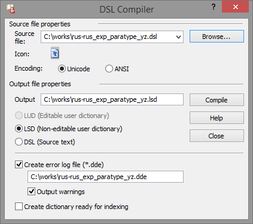
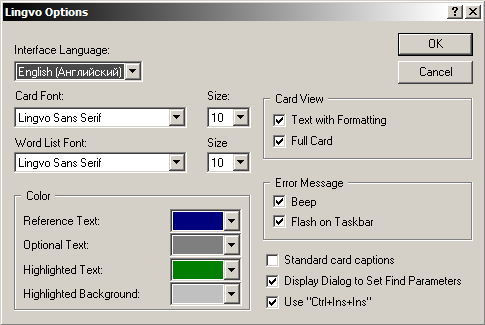

HoverDictionary (En-Ru)
door
дверь; дверца; створка; дверка
Версия 0.9.3 beta
Copyleft (ɔ) 2015 yozhic. Свободный контент.
Все права открыты и неограничены.

В настоящем справочнике предпринята попытка собрать и структурировать известные на сегодняшний день сведения о DSL – языке описания словарей. Предполагаемая целевая аудитория справочника: создатели собственных словарей на DSL (словаределатели) и разработчики словарных программ. Кроме того, некоторые материалы возможно будут небезынтересны пользователям самих словарных программ, таких как ABBYY Lingvo и GoldenDict.
Необходимость в подобном труде обусловлена, прежде всего, тем, что официальное справочное руководство от ABBYY в отношении DSL предоставляет информацию неполную, разрозненную и нередко содержащую неточности.
Изначально справочник был задуман как простой перевод в формат CHM существующего DSL словаря-справочника по командам DSL «Mostitsky DSL Help» автора-составителя Игоря Мостицкого. Но в процессе переформатирования возникли идеи что-то добавить, что-то пересмотреть и результат получился намного более самостоятельным, чем предполагалось. Связь с прототипом, однако, осталась, в связи с чем составитель настоящего справочника выражает глубокую благодарность Игорю Мостицкому за его замечательный труд и рекомендует его к использованию читателям. Формат CHM был предпочтён в данном случае DSL в виду того, что CHM располагает лучшими средствами для наглядности представления материала и возможностями для автоматизации быстрого обращения к элементам содержимого.
При составлении справочника преимущественно учитывался опыт по созданию пользовательских словарей, накопленный сообществом лексикографов на компьютерном форуме Ru-Board. Обсуждение вопросов словаределания и обмен данными проводятся сообществом в специальной профильной ветке форума. Здесь выработаны и опубликованы правила и соглашения по составлению и оформлению словарей, выявлены недокументированные подробности языка DSL и особенности работы программы Lingvo, подобран набор инструментов для создания словарей, причём некоторые из инструментов разработаны специально участниками форума для целей словаределания. Бо́льшая, по возможности, часть этих сведений вошла в состав настоящего справочника.
Классификация тэгов в справочнике является авторским предложением, т.е. отличается от подобной в словаре-справочнике «Mostitsky DSL Help» и от описаний в справке от ABBYY (в последней классификация, как таковая, отсутствует). Также, во избежание путаницы, некоторые термины словаределания употребляются составителем в более узком значении, нежели это принято в других справочных руководствах. Детально эти случаи описываются ниже, в главе «Особенности терминологии».
Все языковые конструкции DSL рассматриваются на примере их отображения и действия в ABBYY Lingvo – программе, связанной с DSL генеалогически неразрывно. Кроме этого, особое внимание уделяется также программе GoldenDict, как наиболее серьёзному и достойному, на сегодняшний день, конкуренту Lingvo по части интерпретации DSL и другим особенностям работы с электронными словарями.
В рамках справочника некоторые термины словаределания употребляются в значениях, немного отличающихся от принятых в других справочных руководствах по DSL. Это объясняется попыткой чётче разграничить понятия, чтобы избежать путаницы в изложении. Таковыми являются следующие термины.
Карточка – в данном справочнике употребляется только в значении «окно или вкладка окна словарной программы, в которой отображается словарная статья с заголовком». В других руководствах словом «карточка» называется также часть словарной статьи, идущая в DSL после заголовка.
Часть словарной статьи, идущая в DSL после заголовка, в рамках данного справочника именуется телом статьи.
Значком «лампочка» в оглавлении отмечены
тэги и особенности, являющиеся недокументированными. В тексте всё недокументированное отмечается значком
«ninja»  .
.
На стадии beta-публикации некоторые места в справочнике отмечены бледно-жёлтым маркером. Это означает, что данные места ещё только планируются к составлению или содержат сомнительные сведения, неточные формулировки и нуждаются в доработке.
Составитель выражает глубокую признательность и благодарность всем лексикографам и участникам обсуждений вопросов словаределания на форуме Ru-Board, без труда, помощи и доброжелательного участия которых не состоялись бы ни это скромное произведение, ни многое множество существующих прекрасных и нужных электронных словарей.
Невозможно не поблагодарить создателей языка DSL и программы Lingvo из компании ABBYY, признательность которым в последнее время всё более смешивается с печалью по поводу невысокого качества реализации столь замечательной идеи.
Особая благодарность выражается разработчикам программы GoldenDict, бескорыстно создающим высоко-профессиональный и удобный инструмент для работы со словарями.
DSL (Dictionary Specification Language) – это язык описания словарей. Основное его назначение – описание внешнего вида словарной статьи. Эта задача решается в DSL путём разметки текста при помощи небольшого набора структурных и семантических элементов – дескрипторов или тэгов. Использование тэгов причисляет DSL к компьютерным формальным языкам разметки гипертекстовых документов, таким как HTML, XML и другим. На сегодняшний день синтаксис DSL включает в себя 32 тэга и команд, а также 7 директив предварительной обработки. Язык DSL не сложен в освоении, с его помощью можно легко создать относительно простой, но красиво оформленный словарь.
Язык DSL был разработан специалистами российской компании ABBYY. Изначально он предназначался для создания электронных словарей с целью использования их в словарной программе Lingvo. Идея создания Lingvo принадлежит Давиду Евгеньевичу Яну, ныне председателю совета директоров ABBYY. К разработке Lingvo он приступил в 1989 году совместно с программистом Александром Москалёвым, будучи тогда студентом факультета общей и прикладной физики МФТИ. Первая версия 1.0 была выпущена в 1990 году. В 1993 Давид Ян защитил диплом на тему «Язык описания словарей DSL».
Справочные материалы по DSL стали включать в дистрибутив программы, начиная с первых версий. Поначалу это были краткие комментарии внутри демонстрационного словарика EXAMPLE.DSL, затем, со временем, было составлено отдельное руководство. Утилита для компиляции пользовательских словарей также входила в самые ранние дистрибутивы. Тогда она именовалась LC.COM (Lingvo Compiler), и впоследствии, начиная с версии 6.0, приобрела своё современное название – DSL Compiler. Обнародование материалов по языку DSL и рекомендаций по созданию собственных словарей положили начало широкому распространению DSL и пробудили интерес пользователей к активному словаределанию.
Говоря о формате DSL, справедливо выделять два случая употребления этого понятия: формат файла и формат словаря.
Файл в формате DSL представляет собой простой текстовый документ с расширением *.dsl, в кодировке ANSI или Unicode (UTF-16 LE), содержащий текст с разметкой на языке DSL.
Словарь в формате DSL – это электронный словарь, состоящий из четырёх отдельных, редактируемых файлов: основного текста словаря, аннотации, иконки и списка аббревиатур.
Авторы DSL, разработчики из компании ABBYY, по факту рассматривают его, как формат исходный и неокончательный. В чистом виде он не может быть подключен к программе ABBYY Lingvo – для этого его необходимо компилировать в формат LSD. Компиляцией называется процесс, во время которого происходит перевод (трансляция) из формы, ориентированной на лучшее понимание человеком, в форму, ориентированную на лучшее понимание компьютером. При этом данные из четырёх исходных файлов словаря объединяются, сжимаются, кодируются и помещаются в один контейнер – файл *.lsd. Результирующий LSD, будучи сжатым и закодированным, редактированию уже не подлежит. Таким образом, мы можем заключить, что, по замыслу разработчиков, DSL является исходным редактируемым форматом электронного словаря Lingvo, предназначенным для преобразования в целевой нередактируемый формат LSD.
Однако свойства, которыми обладает DSL, предполагают бо́льшую самостоятельность и независимость. Он обладает достаточными средствами для отображения в программах без дополнительных преобразований и компиляций и, кроме того, является форматом открытым.
Действительно, мы видим, что в настоящее время DSL получил распространение бо́льшее, чем LSD – объект его предназначения. Разработчики других словарных оболочек предпочитают реализовывать в программах поддержку DSL напрямую, без компиляций и крайне редко проявляют интерес в формату LSD. Относительно последнего известен только один случай: GoldenDict под Android, который позволяет подключать LSD только версии x3, хотя и DSL поддерживает тоже.
На сегодняшний день словари DSL понимают следующие программы.
| В системе Windows: | GoldenDict, SimpleDict. |
| В системе Mac OS X: | GoldenDict, TranslateIt!, Leopard Dictionary. |
| В системе Linux: | GoldenDict. |
| В системе Android: | GoldenDict, Fora Dictionary, JaLingo, SlovoEd, ColorDict. |
| В системе iOS: | Dictionary Universal. |
Приведённый список является неполным и его состав может меняться, поскольку формат набирает популярность и его поддержка включается в новые разработки. При этом некоторые программы не отображают DSL в исходном виде, но предоставляют средства для его конвертации в свой собственный словарный формат.
Очевидно, что само по себе изучение языка DSL не является самоцелью. Конечный пункт в направлении прикладываемых усилий – это собственный электронный словарь. И в этом смысле DSL предоставляет возможность создавать словари различной степени сложности в плане структуры и оформления. И если для создания простого словаря практически не требуется даже знание самого DSL, то для создания словаря с развитым оформлением кроме DSL понадобятся и другие знания и навыки.
Структурированный словарь DSL с форматированием
Под словом «простой» в словаределании подразумевается словарь без форматирования (без применения тэгов) с элементарной структурой: заголовок → перевод / толкование (как правило без дополнительных объяснений). Такими обычно бывают словари синонимов, антонимов и т.п. Среди системных словарей, входящих в комплект программы ABBYY Lingvo версий x5 и выше, примером такого словаря является HoverDictionary (разных языковых направлений). Также подобной структурой обладают пользовательские словари с ограниченным редактированием *.lud (подробнее об этом см. в главе «Виды словарей в Lingvo»).
Пример «простого» словаря :: Вид в словарной карточке
Для создания подобного «простого» словаря не требуются специальные знания и навыки. Достаточно выполнить следующие действия.
Пример первых трёх строчек «простого» словаря
#NAME "Словарь (En-Ru)" #INDEX_LANGUAGE "English" #CONTENTS_LANGUAGE "Russian"
Пример содержимого «простого» словаря
door дверь; дверца; створка; дверка doorbell дверной звонок doorman швейцар
Созданный таким способом LSD словарь можно подключать к программе Lingvo, а исходный DSL словарь – к программе GoldenDict, или любой другой программе, умеющей работать с DSL напрямую, без дополнительной конвертации.
Кроме «простых» словарей, DSL также позволяет создавать словари с развитой внутренней структурой и оформлением. К тексту словаря, например, могут быть применены разные способы выделения: начертанием, цветом и отступами абзацев. Условные сокращения могут содержать интерактивные расшифровки своих значений. Словарные статьи могут быть поделены на различные зоны, влияющие как на отображение элементов, так и на работу механизма поиска по содержимому. При помощи гиперссылок может быть организован быстрый переход между статьями одного или нескольких словарей, а также на внешние интернет-ресурсы. В состав словаря могут быть включены иллюстрации, аудио и видео материалы.
Доступные в DSL средства оформления, несмотря на то, что не удовлетворяют все классические словарные потребности (как, например, средствами DSL невозможно отобразить таблицу), уже значительно улучшают восприятие готовых словарей и способствуют более эффективному их использованию. Однако, для создания таких словарей требуются некоторые специальные знания, навыки, а также набор специализированных программных инструментов.
Прежде всего, словаределателю необходимо изучение всех существующих конструкций языка DSL.
Для того, чтобы быть способным обрабатывать словари большого объёма, нужно освоить язык регулярных выражений.
Для редактирования словарей используются специальные программы – профессиональные текстовые редакторы. Каждая из подобных программ обладает набором особых средств (часто уникальных, недоступных в других программах) для лучшего восприятия текста и автоматизации рутинных задач при его обработке. И здесь становится необходимым знание спектра этих средств, умение ими пользоваться и производить настройки под собственные нужды.
Не редко при работе со словарями приходится сталкиваться с задачами нетривиальными, узко-специализированными, для решения которых не хватает стандартных возможностей текстовых редакторов. В таких случаях может понадобиться написание скриптов – несложных программ, выполняющих конкретную задачу в области словаределания, а иногда и в рамках только одного конкретного словаря. В связи с этим не лишним будет знание, пусть даже очень поверхностное, основ скриптового программирования, хотя бы для того, чтобы внятно сформулировать тех-задание, если придётся обратиться за помощью в написании к опытному программисту или произвести элементарные настройки в уже существующих скриптах, или просто разобраться в том, как этот скрипт работает и как обращаться с параметрами для его запуска.
Все эти условия перечисляются здесь не с целью представить процесс создания словарей, как некое трудное, объёмное и достойное крайнего уважения дело, а для того, чтобы сориентировать начинающих словаределателей, направить их усилия в правильное русло. По факту упомянутые языки / навыки не являются сложными и осваиваются / приобретаются достаточно быстро. К тому же, согласно известному афоризму, «дорогу осилит идущий».
Специализация: Обработка словарей DSL.
Автор: andreyefgs, www.lingvoboard.ru/forum/
Несомненные достоинства: Небольшие, узко-специализированные программы, созданные специально для нужд словаределания. Красиво и быстро решают множество распространённых нетривиальных задач при создании словарей DSL.
Относительные недостатки: Не выявлены. Если только не считать недостатком тот факт, что для работы скриптов необходима дополнительная установка Perl-окружения.
Специализация: Обработка текстовых файлов.
Производитель: Jan Goyvaerts, Just Great Software Co. Ltd., www.powergrep.com
Несомненные достоинства: Очень мощный программный комплекс для массовой обработки текстовых файлов при помощи регулярных выражений. Легко справляется как с одиночными файлами огромного размера (в десятки и сотни мегабайт), так и с любым количеством файлов небольшого размера. Предоставляет возможность употреблять регулярные выражения разных диалектов и даже комбинировать эти диалекты, что является особенно удобным и полезным для тех, кто только осваивает этот язык и иногда путается в формулировании своих задач и в особенностях синтаксисов. При помощи PowerGREP можно легко обрабатывать множество html-файлов при конвертации словарей из сетевых источников.
Относительные недостатки: Программа реализована в виде пакета утилит и в ней нет (почти нет) привычного, удобного окна текстового редактора. Программа не бесплатна.
Специализация: Профессиональный текстовый редактор.
Производитель: Emurasoft, Inc., www.emeditor.com
Несомненные достоинства: Оснащён развитым механизмом поиска и замены при помощи регулярных выражений (причём некоторые возможности данного диалекта отсутствуют в других программах, например, изменение регистра найденного текста). Лёгкая и быстрая обработка файлов огромного размера (в десятки и сотни мегабайт). Настраиваемая схема подсветки синтаксиса для наглядного отображения текста. Развитые средства автоматизации рутинных задач.
Относительные недостатки: Ограниченные возможности настройки подсветки синтаксиса. Неповоротливость и медлительность при выполнении некоторых задач. Программа не бесплатна.
Специализация: Профессиональный текстовый редактор.
Автор: Александр Шенгальц, akelpad.sf.net
Несомненные достоинства: Оснащён 2 независимыми механизмами поиска и замены при помощи регулярных выражений (один встроенный, другой с использованием возможностей JScript). Чрезвычайно гибкая и многоплановая настройка элементов рабочего окружения: кнопок, панелей, меню, клавиатурных сочетаний, цветовых схем, подсветок синтаксиса, «раскрывающихся» блоков текста и мн. др. Обладает развитыми средствами автоматизации рутинных задач и позволяет расширять их набор путём подключения дополнительных скриптов. Предоставляет удобную среду для составления собственных простых скриптов. Для работы с DSL в AkelPad создана дополнительная панель кнопок и файл подсветки синтаксиса.
Относительные недостатки: Не справляется с обработкой файлов огромного размера.
Специализация: Профессиональный текстовый редактор.
Автор: Don Ho, notepad-plus-plus.org
Несомненные достоинства: Оснащён развитым механизмом поиска и замены при помощи регулярных выражений. Настраиваемая схема подсветки синтаксиса для наглядного отображения текста. Развитые средства автоматизации рутинных задач. Для работы с DSL в Notepad++ создана дополнительная панель кнопок.
... необходима помощь в описании ...
Относительные недостатки: Не выявлялись.
Специализация: Сравнение текстовых фалов по содержимому.
Производитель: Scooter Software, Inc., www.scootersoftware.com
Несомненные достоинства: Один из лучших на сегодняшний день инструментов для сравнения файлов. При работе со словарями сравнивать файлы приходится довольно часто.
Относительные недостатки: Не выявлены. Кроме, пожалуй, того, что программа не бесплатна.
Специализация: Утилита доступа к таблице символов Unicode.
Производитель: Ergonis Software GmbH, www.ergonis.com
Несомненные достоинства: Предоставление быстрого доступа к символам, недоступным стандартными способами с клавиатуры и исчерпывающей информации об этих символах.
Относительные недостатки: Не выявлены. За исключением того, что программа не бесплатна.
Словарь в формате DSL – это электронный словарь, состоящий из нескольких отдельных файлов, как правило четырёх: основного текста, аннотации, иконки и списка аббревиатур. Имена файлов должны быть одинаковыми, за исключением расширений. Таковой является основная, базовая комплектация словаря, из которой, впрочем, только основной текст является обязательной частью, а остальные три могут не использоваться.
Словарь DSL нельзя подключить к программе ABBYY Lingvo непосредственно, для этого его нужно преобразовать в словарь LSD. Процесс преобразования называется компиляцией. При компиляции данные из исходных файлов объединяются, сжимаются, кодируются и помещаются в один результирующий контейнер – файл *.lsd.
Дополнительно DSL словарь может содержать иллюстрации, звуковые и видео материалы. Файлы мультимедиа, соответствующие этому содержимому, именуются свободно и располагаются в одной папке с основными файлами. Чтобы медиа-файлы отобразились в результирующем словаре LSD, с ними нужно поступить одним из двух следующих способов.
Программа GoldenDict работает по-другому: к ней словари DSL можно подключать напрямую, без дополнительных преобразований. Мультимедиа файлы при этом необходимо упаковывать в отдельный zip-архив, имя которого должно повторять имена других файлов словаря с прибавлением окончания *.dsl.files.zip. Например, rus-rus_encyclopedia_we.dsl.files.zip.
Далее в настоящем разделе собраны сведения о правилах создания и устройстве каждого из четырёх файлов DSL словаря. Часть этих сведений, в основном общего характера, опубликована в официальном справочном руководстве к программе ABBYY Lingvo. Остальная часть была сформулирована или разработана стараниями сообщества лексикографов на компьютерном портале Ru-Board.
В официальной справке к Lingvo вопрос наименований файлов не затрагивается. Этот пробел восполняется «Соглашением о наименованиях», составленным сообществом лексикографов на Ru-Board. В соответствии с «Соглашением» в именах файлов словарей принято указывать:
Полный список 3- и 2-буквенных сокращений см. в разделе «Списки языков».
Если словарь предназначен для распространения и упакован в архив, то в наименовании архива следует также указать номер версии словаря и его формат (обычно DSL или LSD).
Примечание: «Соглашение» рекомендует указывать версию также и в именах файлов словаря. Однако составитель справочника придерживается мнения, что такая практика создаёт неудобства при подключении словарей к программе. Изменение имён файлов с каждой новой версией потребует многократного отключения старых и подключения новых файлов через диалоги настроек программы. В то время как при сохранении единого имени, каждую новую версию достаточно всего лишь перезаписывать поверх старой. Программа, обнаружив при старте обновлённый файл, будет только автоматически перестраивать индекс.
В именах файлов следует употреблять только символы основной латиницы, знаки дефиса и подчёркивания. Настоятельно не рекомендуется употреблять пробелы, диакритические знаки, апострофы, точки, запятые, двоеточия и символы национальных алфавитов (в т.ч. русского), т.к. технически это может существенно затруднить как использование словарей, так и их пересылку. Например, пробелы, апострофы и диакритика некорректно обрабатываются некоторыми программами (в первую очередь сетевыми), а точка в имени файла иконки может привести к тому, что иконка не будет отображаться.

На рисунке приведён пример наименования файла англо-английского словаря «Oxford American Writer Thesaurus», отконвертированного в формат DSL лексикографом weros. Как видно, версия словаря указана только в имени zip-архива.
Очевидно, что наличие этой части словаря строго обязательно, в отличие от других трёх частей.
Файл основного текста словаря – это простой текстовый документ в кодировке ANSI или Unicode (UTF-16 LE)[1]. Строки должны оканчиваться управляющим символом перевода строки LF, т.е. допустимы окончания строк, принятые в системах Windows (CRLF) и Unix (LF)[2], но недопустимы принятые в системе Mac (CR). При сохранении, стандартное расширение файла *.txt необходимо поменять на *.dsl. Например: rus-rus_ExplanatoryKuznetsov.dsl.
Файл основного текста состоит из словарных статей с заголовками – собственно это и есть сам словарь. В первых трёх строчках файла должны содержаться три обязательные директивы предварительной обработки. Принят следующий порядок их следования и оформления:
О других существующих директивах можно узнать в главе «Директивы предварительной обработки».
Первые три строчки (шапка) основного файла :: Запись в DSL
#NAME "Словарь синонимов (Ru-Ru)" #INDEX_LANGUAGE "Russian" #CONTENTS_LANGUAGE "Russian" карточка [m1]фотография, снимок; визитка[/m]
После того, как словарь будет подключен к Lingvo, его «внутреннее» название, указанное в первой директиве, будет отображаться в правой, верхней части словарных карточек и во всех списках подключенных словарей. Это название должно быть кратким для того, чтобы оно лучше воспринималось и умещалось в упомянутых местах. В конце названия рекомендуется указывать языковую пару словаря в скобках через дефис. В словарях от ABBYY, поставляемых вместе с Lingvo, пары языков обозначаются 2-буквенными сокращениями, согласно стандарту ISO-639-1. «Соглашение» лексикографов в данном случае предписывает использовать 3-буквенные сокращения, по стандарту ISO-639-3 (или ISO-639-2).
Следующие две директивы содержат английские наименования языков, на которых написаны заголовки и статьи словаря. Эти наименования должны: a) числиться в списке поддерживаемых в Lingvo языков и b) соответствовать стандарту ISO-639-2. Если указать неподдерживаемый язык, то компилятор DSL выдаст ошибку и словарь не будет откомпилирован. Первую часть этого правила можно не учитывать в том случае, если словарь изначально предназначен для использования в альтернативных программах, например, в GoldenDict. Вторую часть желательно учитывать в любом случае.
Первые три строчки (шапка) основного файла :: Вид в словарной карточке
Далее следуют заголовки и текст словарных статей. Подробнее о них см. в главе «Структура словарной статьи».
Файл аннотации – это простой текстовый документ в кодировке ANSI или Unicode (UTF-16 LE)[1]. Строки должны оканчиваться управляющим символом перевода строки LF, т.е. допустимы окончания строк, принятые в системах Windows (CRLF) и Unix (LF)[2], но недопустимы принятые в системе Mac (CR). При сохранении, стандартное расширение файла *.txt необходимо поменять на *.ann. Имя файла аннотации должно в точности соответствовать имени файла основного текста, за исключением расширения. Например: rus-rus_ExplanatoryKuznetsov.ann.
Аннотация не является обязательной частью словаря, правила допускают её отсутствие. Тем не менее создание аннотаций настоятельно рекомендуется.
Содержанием аннотации является краткое описание словаря, характеристики его состава и сведения об авторах. «Соглашение» считает обязательным указывать в аннотации следующие данные:
Пример обязательной информации :: Запись в ANN
Большой толковый словарь под ред. Кузнецова (Ru-Ru) DSL версия: 3.2.0 Заголовков: 79109 Карточек: 76298 Источник: Большой толковый словарь русского языка. Сост. и гл. ред. С. А. Кузнецов. 1-е изд-е: СПб.: Норинт, 1998. Публикуется в авторской редакции, 2009 г.
Кроме того по желанию можно добавлять:
При подключении словаря к Lingvo, аннотация отображается в отдельном окне «О словаре», доступном из разных меню программы. К тексту аннотации в этом окне не применяется форматирование и в нём нельзя изменить размер шрифта. Поэтому не рекомендуется включать в её состав длинные предисловия и введения из источников. Лучше размещать таковые в файле основного текста в качестве дополнительных статей, а в аннотации ссылаться на их заголовки.
Также как и в карточках, из текста аннотации автоматически удаляются множественные пробелы. В связи с этим, для создания отбивок и отступов в абзацах, рекомендуется использовать неразрывные или экранированные пробелы. Подробнее об этом см. в главе «Тело статьи».
Кроме того, в аннотациях предусмотрена к использованию директива предварительной обработки #LANGUAGE, в качестве значения которой указывается полное английское наименование языка по стандарту ISO-639-3. Эта директива условно делит аннотацию на части. Одной частью считается фрагмент текста от одной строки с директивой до другой строки с директивой или до конца файла. Каждой части присваивается язык, указанный в значении её директивы.
Употребление директив :: Запись в ANN
#LANGUAGE "Russian" LatinAmerican (Es-Ru) (к версии ABBYY Lingvo x5) Испанско-русский словарь. Латинская Америка. © «Русский язык-Медиа», 2004, Фирсова Н.М. 50 тыс. слов и словосочетаний. #LANGUAGE "English" LatinAmerican (Es-Ru) (for ABBYY Lingvo x5) The Spanish-Russian Dictionary of Latin America. © Russkiy Yazyk - Media, 2004, N.M. Firsova. 50,000 words and phrases. #LANGUAGE "Ukrainian" LatinAmerican (Es-Ru) (до версії ABBYY Lingvo x5) Іспансько-російський словник. Латинська Америка. © «Русский язык-Медиа», 2004, Фірсова Н.М. 50 тис. слів і словосполучень.
В зависимости от языка интерфейса, выбранного в настройках программы, в окне аннотации будет отображаться соответствующий языковая часть, а части других языков будут скрыты. Выбор языков для употребления в значениях директивы ограничен набором языков интерфейса конкретной версии Lingvo. Например, в Lingvo x6 доступны четыре языка: английский, русский, украинский и казахский. А в Lingvo x5 был ещё испанский.
Описанная директива работает в Lingvo, но в других программах она может не поддерживаться, как например в GoldenDict.
Имя файла иконки должно в точности соответствовать имени файла основного текста, за исключением расширения. Например: rus-rus_ExplanatoryKuznetsov.bmp.
Сама иконка должна обладать следующими характеристиками:
| Формат файла изображения: | Windows Bitmap (*.bmp) |
| Размер изображения: | 14 x 21 пикселей (ширина на высоту) |
| Глубина цвета (битность) изображения: | 24 bit (Truecolor) |
Чтобы добиться эффекта «прозрачности» фона на картинке, необходимо закрасить его серым цветом RGB(192, 192, 192) или #C0C0C0.
При подключении словаря к Lingvo, иконка отображается на «полке со словарями» (панели кнопок в основном окне Lingvo) и в списках словарей (где они имеются). В GoldenDict употребление иконки более активно: в окне аннотации «О словаре», в окне заголовков, в диалогах настроек программы и др. местах.
Иконка не является обязательной частью словаря, правила допускают её отсутствие. Если иконки нет, то словарная программа присвоит словарю свою, стандартную иконку по умолчанию. Однако, создание индивидуальных иконок настоятельно рекомендуется, поскольку в противном случае словари на полке будут выглядеть однотипно и в них будет легко запутаться.
Примеры стандартных иконок для словарей: в ABBYY Lingvo и в
GoldenDict  .
.
Файл аббревиатур – это простой текстовый документ в кодировке ANSI или Unicode (UTF-16 LE)[1]. Строки должны оканчиваться управляющим символом перевода строки LF, т.е. допустимы окончания строк, принятые в системах Windows (CRLF) и Unix (LF)[2], но недопустимы принятые в системе Mac (CR). При сохранении, стандартное расширение файла *.txt необходимо поменять на *.dsl. Имя файла аббревиатур должно в точности повторять имя главного файла словаря с прибавлением в конце суффикса _abrv. Например: rus-rus_ExplanatoryKuznetsov_abrv.dsl.
Файл аббревиатур представляет собой электронный аналог таких разделов бумажных словарей, как «Условные сокращения» или «Список аббревиатур». Содержанием файла является небольшой, вспомогательный словарик аббревиатур и сокращений, используемых в основной части словаря. Вызов информации из этого словарика возможен только в основной части словаря, при наведении курсора мыши на слово, заключенное в тэг [p]···[/p]. Расшифровка сокращения или аббревиатуры при этом показывается во всплывающей подсказке. Другого способа отобразить содержимое файла (например, в виде карточек) не существует.
Подобно файлу основного текста словаря, файл аббревиатур должен начинаться с трёх строчек – директив предварительной обработки. Однако применение этих директив в данном случае является в большой степени формальностью, поскольку имя, указанное в директиве #NAME нигде не отображается, а указание языков в следующих двух директивах ни на что не влияет. Таким образом, для всех файлов аббревиатур может быть использована универсальная «шапка» следующего вида:
Пример универсальной «шапки» для файлов аббревиатур :: Запись в DSL
#NAME "List of Abbreviations (Ru-Ru)" #INDEX_LANGUAGE "Russian" #CONTENTS_LANGUAGE "Russian" разг. разговорное ср. 1) средний род; 2) сравни страд. страдательный залог
Файл аббревиатур не является обязательной частью словаря, правила допускают его отсутствие. Необходимость в его создании полностью зависит от использования в словаре тэга [p]···[/p] – если тэга нет, значит и вспомогательный список к нему не нужен.
Предназначение содержимого файла для показа только во всплывающих подсказках влияет на правила его оформления. Эти особенности отображены в примере выше, поясним их:
Файл аббревиатур, входящий в комплект словаря DSL, является локальным. Кроме него в Lingvo существует ещё глобальный файл аббревиатур, который располагается в каталоге c:\Program Files\ABBYY Lingvo ??\, где ?? – номер версии Lingvo. Глобальный файл аббревиатур является общим для всех системных словарей Lingvo, но к нему программа обращается также и в том случае, если не находит локального. В GoldenDict глобальный файл аббревиатур не используется.
[1] Программа GoldenDict работает также с кодировкой UTF-8.
[2] При использовании окончаний строк, принятых в системах Unix (LF), размер словаря (текстового файла) уменьшается.
Словарь на языке DSL представляет собой последовательность словарных статей. Каждая статья состоит из двух частей: заголовка (заглавного слова или словосочетания) и тела. Телом называется переводная или толковательная часть, следующая сразу за заголовком. В DSL тело одной статьи простирается до заголовка следующей статьи или, если эта статья – последняя, до конца файла.
Между телом одной и заголовком следующей статьи для удобства чтения исходного DSL могут быть вставлены одна или несколько пустых строк (двух или более символов новой строки и/или перевода каретки подряд).
Напротив, между заголовком и телом одной и той же статьи не допускается наличие пустых строк. Пустая строка в таком случае будет истолкована, как начало новой статьи и при компиляции этого места компилятор сообщит об отсутствии заголовка.
У одного тела может быть несколько заголовков. В этом случае между заголовками не допускается наличие пустых строк. Пустая строка между заголовками приведёт к ошибке при компиляции с сообщением об отсутствии тела статьи.
В одном словаре не допускается наличие двух статей с одинаковыми заголовками. При этом учитывается регистр букв, т.е. если заголовки совпадают по буквам, но различаются по регистру букв, то они уже не считаются одинаковыми.
Словарные статьи можно располагать в произвольной последовательности, не соблюдая алфавитного порядка заголовков. При отображении в словарной программе заголовки сортируются и порядок их следования в DSL не учитывается.
В DSL, подобно родственному ему языку HTML, действует правило сокращения пробелов: любое количество пробелов, идущих подряд в заголовке или теле статьи, при компиляции заменяются одним пробелом.
Заголовком в DSL является строка, начинающаяся с любого символа, кроме знаков пробела, табуляции и «решётки» (#).
Заголовком может быть как слово, так и словосочетание.
Максимально допустимая длина заголовка – 246 любых символов (непробельных и пробельных). Если этот порог превысить, компилятор сообщит об ошибке и исключит текущую статью из скомпилированного словаря. При подсчёте учитываются также метасимволы \ (экранирования), {···} и (···) со своим содержимым, но не учитываются пробелы, идущие после 246-го непробельного символа – таковые при компиляции будут проигнорированы. В некоторых (редких) случаях компилятор отказывался обрабатывать заголовки длиной выше 236 символов. Таковые отличались своей «дробностью», т.е. большим количеством пробелов и разделителей.
Некоторые особенности оформления заголовков непосредственно зависят от их последующего отображения в словарной программе. При подключении словаря к ABBYY Lingvo, заголовки отображаются двояко:

На снимке выше заметны различия отображения одного и того же заголовка в списке и в карточке. Ниже объясняются причины такой разницы.
Для отображения заголовков в карточках характерны две особенности:
Список заголовков в главном окне Lingvo включает в себя заголовочные слова и словосочетания из всех словарей, подключенных в данный момент к программе. Для отображения элементов в этом списке характерны две особенности:
При сортировке списка заголовков в Lingvo учитываются символы: буквы, числа, пробел, дефис -, точка ., апостроф ', подчеркивание _, запятая ,, слэш / и прочие.
При определении порядка следования заголовков в списке в первую очередь учитываются особенности алфавита, вне зависимости от регистра символов. Вследствие чего слово «аврал» предшествует «Аврора», а «ерунда» предшествует «ёрш». Во вторую очередь учитываются числовые коды символов по таблице Юникод. Вследствие чего: такие символы как «дефис», «подчёркивание» перемещаются в начало списка; числа сортируются «1, 10, 100, 2, 20, 200» вместо «1, 2, 10, 20, 100, 200»; слово «Аврора» предшествует «аврора»; латинские символы предшествуют кириллическим и т.д. В официальном справочном руководстве к Lingvo по отношению к порядку сортировки применён термин «"естественный" лексикографический», что является неточностью.
При оформлении заголовков в DSL, особую функцию несёт употребление одинарных фигурных скобок {···}. Эта конструкция создаёт несортируемую часть заголовка, которая:
Рассмотрим, как выглядит запись в DSL примера заголовка на снимках выше:
Несортируемая часть заголовка :: Запись в DSL
{[c slategray]}{to }{[/c]}tell {[c slategray]}smb{[/c]} how to do {[c slategray]}smth{[/c]}
[m1][trn]рассказать кому-либо, как что-либо делать[/trn][/m]
Сравнение записи и снимков демонстрирует следующие особенности:
При помощи круглых скобок (···) в заголовке выделяется альтернативная часть. При обработке подобной записи из одного заголовка создаются несколько вариантов. Так, например, запись (пре)вращать(ся) преобразуется в четыре отдельных заголовка: вращать, вращаться, превращать, превращаться. Все эти варианты будут показаны в списке заголовков главного окна без скобок, а при обращении к одному из них, откроется словарная карточка, в заглавии которой отобразится исходное написание из DSL со скобками.
Круглые скобки в заголовках :: Запись в DSL
(пре)вращать(ся) [m1]turn[/m]
В списке заголовков этот пример покажет четыре разных заголовка без скобок:
А в карточке будет соответствовать написанию в исходном DSL:

У одной статьи может быть несколько заголовков. При этом один заголовок занимает одну отдельную строку. Все они будут показаны в списке заголовков, но при этом в карточке будет отображаться только один их них – тот, который был выбран при вызове карточки.
Между несколькими заголовками не допускается наличие пустых строк. Пустая строка между заголовками приведёт к ошибке при компиляции с сообщением об отсутствии тела статьи.
Тело статьи может состоять из одной или нескольких строк, каждая из которых должна начинаться или с пробела (одного или нескольких), или с табуляции. Строки, начинающиеся с любых других символов, понимаются словарной программой как заголовки.
Между заголовком и телом, а также между строк тела одной статьи не должно быть пустых строк (двух или более символов новой строки и/или перевода каретки подряд). В обоих случаях пустые строки приведут к ошибке при компиляции, с сообщением об отсутствии тела или заголовка статьи.
Максимальная длина одного «слова», т.е. непрерывной последовательности непробельных символов в теле статьи составляет 255 символов. Превышение данного порога приведёт к ошибке во время компиляции словаря. При подсчёте не учитываются метасимвол экранирования \ и тэги с их атрибутами и значениями. В программе GoldenDict ограничений на количество символов в «слове» не существует, однако очень длинные «слова» некорректно отображаются.
В связи с действующим правилом сокращения пробелов, возникают недоумения при попытке отобразить в словарной карточке отбивку (т.е. пустую строку между абзацами) и красную строку (т.е. отступ первой строки в абзаце). Это можно осуществить следующими способами.
Отбивка и красная строка :: Запись в DSL
Адонис [m1] ([p]греч.[/p] Adonis, от [p]финик.[/p] Адон - господин) - [p]греч.[/p] [p]назв.[/p] финикийского божества растительности и плодородия, соответствующего [p]вавилон.[/p] Таммузу. Культ А. известен со 2-го тыс. до н. э., а с нач. 1-го тыс. распространялся по [p]финик.[/p] колониям в Средиземноморье и затем проник в Грецию (в [p]греч.[/p] мифологии А. - возлюбленный Афродиты).[/m] \ [m1][p]Лит.:[/p] Baudissin W. W., Adonis und Esmun, Lpz., 19U.
Отбивка и красная строка :: Вид в словарной карточке
О нестандартных пробелах и вариантах их использования в DSL см. в главе «Об использовании нестандартных пробелов».
Все тэги можно условно разделить на следующие группы:
Директивы предварительной обработки
| [b]···[/b] |  |
полужирное начертание |
| [i]···[/i] | |
наклонное начертание |
| [u]···[/u] | |
подчёркнутый текст |
| [c]···[/c] | |
цветной текст |
| [sup]···[/sup] | |
верхний (надстрочный) индекс |
| [sub]···[/sub] | |
нижний (подстрочный) индекс |
| [m]···[/m] | |
отступ от левого края |
| [']···[/'] | |
ударение в слове |
| [br] | |
перенос текста на другую строку (недокументированный) |
| ^ | |
команда изменения регистра на противоположный |
| [p]···[/p] | |
пометы |
| [t]···[/t] | |
транскрипция (недокументированный) |
| [*]···[/*] | |
зона вторичного отображения |
| @ | |
вложенная подкарточка |
| [ex]···[/ex] | |
зона примера |
| [com]···[/com] | |
зона словарного комментария |
| [trn]···[/trn] | |
зона перевода |
| [trn1]···[/trn1] | |
зона перевода (недокументированный) |
| [!trs]···[/!trs] | |
исключение из зоны индексирования |
| [lang]···[/lang] | |
указание языка |
| [s]···[/s] | |
зона мультимедиа |
| [video]···[/video] | |
видео (недокументированный) |
| [preview]···[/preview] | |
превью (недокументированный, недействующий) |
| <<···>> | |
ссылка на словарную карточку в пределах текущего словаря |
| [ref]···[/ref] | |
ссылка на словарную карточку в пределах и за пределами текущего словаря |
| [url]···[/url] | |
ссылка на внешний адрес в интернет |
| {{···}} | |
зона служебного комментария |
| (···) | |
альтернативная часть заголовка |
| {···} | |
несортируемая часть заголовка |
| ~ | |
вставка заголовка в карточку |
| \ | |
команда преобразования метасимвола в литерал (символ экранирования) |
| # | |
команда директивы предварительной обработки (pre-processor command) |
| #NAME | |
указание «внутреннего» наименования словаря |
| #INDEX_LANGUAGE | |
указание языка заголовков |
| #CONTENTS_LANGUAGE | |
указание языка переводной / толковательной части |
| #SOURCE_CODE_PAGE | |
указание имени кодовой страницы |
| #INCLUDE | |
добавление дополнительных файлов с текстом словаря |
| #ICON_FILE | |
указание местонахождения файла иконки для словаря (недокументированная) |
| #LANGUAGE | |
языковая разметка словарных аннотаций |
Тэги – это структурные и семантические элементы, которые определяют внешний вид или функциональное значение фрагментов текста.
Каждый тэг включает в себя два дескриптора: открывающий и закрывающий. Открывающий дескриптор обозначает начало зоны действия тэга, закрывающий – окончание зоны действия тэга. Открывающий дескриптор представляет собой один или несколько латинских (иногда также и цифровых) символов, заключённых в квадратные скобки. Например: [i], [com] или [m2]. К парному ему закрывающему дескриптору прибавляется косая черта: [/i], [/com] и [/m] соответственно. Символы между квадратными скобками являются своеобразными командами, которые присваивают определённое свойство тексту, находящемуся в зоне действия тэга.

Так, на примере выше, текст «кому-либо, чему-либо» будет отображаться в наклонном начертании, поскольку именно это свойство ему присваивает обрамляющий его тэг [i]. Пара дескрипторов вместе с находящимся между ними содержимым составляют т.н. область тэга.
Некоторые тэги в DSL располагают атрибутами, а атрибуты, в свою очередь, набором допустимых значений.

В данном примере тэг [lang] (тэг языкового направления) используется с двумя разными атрибутами: id и name. Допустимыми значениями атрибута id являются числовые коды языков, а атрибута name – английские названия языков.
При чтении текста DSL словаря, словарная программа условно разделяет все встречающиеся символы на две группы: литералы и метасимволы.
Литералы – это простые символы. Такие символы программа пропускает и в окне словарной карточки они отображаются «как есть».
Метасимволы – это символы со специальным значением. Встретив такой символ, программа воспринимает его как сигнал к выполнению определённой операции, следовательно в окне словарной карточки этот символ уже не будет отображён.
Для того, чтобы отобразить метасимвол в окне словарной карточки, его необходимо экранировать, т.е. поставить перед ним обратную косую черту \. Например, чтобы отобразить в карточке метасимвол @, в DSL понадобится сделать такую запись: \@.
Для литерального отображения квадратных скобок, кроме способа экранирования, можно также их удваивать: [[···]]. При удваивании за квадратными скобками не должны следовать тэги. Так, например, запись [[[t] вызовет ошибку при компиляции словаря. Для корректной обработки этого примера необходимо записать его [[ [t] или \[[t].
| В теле статей и заголовках метасимволами являются: | ||
| [ ] | квадратные скобки | |
| @ | знак «эт» | |
| # | знак номера, «решётка» | |
| \ | обратная косая черта | |
| ~ | тильда | |
| ^ | циркумфлекс, «крышка» | |
| << >> | двойные угловые скобки, при этом одинарные воспринимаются как литералы |
|
| {{ }} | двойные фигурные скобки, при этом одинарные воспринимаются как литералы только в теле статей |
|
| В заголовках метасимволами являются: (при этом в теле статей воспринимаются как литералы) |
||
| ( ) | круглые скобки | |
| { } | фигурные скобки | |
Символы в тэгах должны писаться в нижнем регистре. Например, [ref] — правильно, а [REF] — неправильно.
Не допускается размещение одинаковых тэгов в зоне действия друг друга. Т.е. запись типа [b][b]strong[/b][/b] является неправильной и будет отвергнута компилятором при конвертации.
Назначение: Выделение текста полужирным начертанием.
Использование: Только в теле словарных статей. В заголовках тэг не работает.
Особенности: В зоне действия данного тэга разрешается размещать любые другие тэги.
Пример полужирного выделения :: Запись в DSL
bold [m1]Выделение [b]полужирным[/b] начертанием[/m] [m2][b]Другие тэги [i]в зоне [u]действия[/u][/i] данного тэга[/b][/m]
Пример полужирного выделения :: Вид в словарной карточке
История: Тэг введён в употребление в Lingvo версии 6.0.
Назначение: Выделение текста наклонным начертанием.
Использование: Только в теле словарных статей. В заголовках тэг не работает.
Особенности: В зоне действия данного тэга разрешается размещать любые другие тэги.
Пример наклонного выделения :: Запись в DSL
italic [m1]Выделение [i]наклонным[/i] начертанием[/m] [m2][i]Другие тэги [u]в зоне [b]действия[/b][/u] данного тэга[/i].[/m]
Пример наклонного выделения :: Вид в словарной карточке
История: Тэг введён в употребление в Lingvo версии 6.0.
Назначение: Выделение текста подчёркиванием.
Использование: Только в теле словарных статей. В заголовках тэг не работает.
Особенности: В зоне действия данного тэга разрешается размещать любые другие тэги.
Пример выделения подчёркиванием :: Запись в DSL
underline [m1]Выделение [u]подчёркиванием[/u][/m] [m2][u]Другие тэги [i]в зоне [b]действия[/b][/i] данного тэга[/u].[/m]
Пример выделения подчёркиванием :: Вид в словарной карточке
История: Тэг введён в употребление в Lingvo версии 6.0.
Назначение: Выделение текста цветом.
Использование: В теле словарных статей и в заголовках. В заголовках необходимо дополнительно применять команду несортируемой части {···}, чтобы с её помощью скрывать дескрипторы или, по желанию, всю область тэга.
Синтаксис: Тэг существует в двух формах: базовой и с дополнительным значением.
Особенности: В зоне действия данного тэга разрешается размещать любые другие тэги.
Тэг цвета базовый и со значением :: Запись в DSL
RGB [m1]([i]аббревиатура английских слов [b][c red]Red[/c][/b] [b][c green]Green[/c][/b] [b][c blue]Blue[/c][/b][/i])[/m] [m1]аддитивная цветовая модель[/m] [m2][c][i]Подробнее[/i][/c] [p]см.[/p] [ref]Цветовые модели[/ref].
Тэг цвета базовый и со значением :: Вид в словарной карточке
Тэг цвета в заголовке :: Запись в DSL
перед лицом {[c slategray]}кого-л.{[/c]}
[m1]in the face of [i]smb[/i].[/m]
Тэг цвета в заголовке :: Вид в словарной карточке
История: Тэг базовой формы [c]···[/c] введён в употребление в Lingvo версии 6.0. С момента появления тэга цвет для его выделения необходимо было выбирать в диалоге настроек программы. Начиная с версии 8.0 вводится в употребление форма с дополнительным значением: [c значение]···[/c]. При этом базовая форма тэга продолжает существовать.
Назначение: Отображение текста в виде верхнего (надстрочного) индекса.
Использование: В теле словарных статей. В заголовках использование тэга допускается, но не рекомендутся из-за некорректной обработки: меняется только положение текста относительно строки, но не меняется размер шрифта.
Особенности: В зоне действия данного тэга разрешается размещать любые другие тэги.
Надстрочный индекс :: Запись в DSL
биквадратное уравнение [m1]уравнение вида ах[sup]4[/sup] + bx[sup]2[/sup] +с = 0[/m]
Надстрочный индекс :: Вид в словарной карточке
История: Тэг введён в употребление в Lingvo версии 8.0.
Назначение: Отображение текста в виде нижнего (подстрочного) индекса.
Использование: В теле словарных статей. В заголовках использование тэга допускается, но не рекомендуется из-за некорректной обработки: меняется только положение текста относительно строки, но не меняется размер шрифта.
Особенности: В зоне действия данного тэга разрешается размещать любые другие тэги.
Подстрочный индекс :: Запись в DSL
этиловый спирт [m1]этанол, винный спирт, C[sub]2[/sub]H[sub]5[/sub]OH[/m]
Подстрочный индекс :: Вид в словарной карточке
История: Тэг введён в употребление в Lingvo версии 8.0.
Назначение: Установка сдвига абзаца относительно левого края словарной карточки.
Использование: Только в теле словарных статей.
Синтаксис: Тэг существует в двух формах: без значения и со значением.
Особенности: В зоне действия данного тэга разрешается размещать любые другие тэги.
Наличие закрывающего дескриптора не требуется. Однако, рекомендуется всегда употреблять закрывающий дескриптор, чтобы, во-первых, привыкать быть аккуратным и сводить к нулю возможные ошибки, а во-вторых, чтобы избежать возможных проблем с конвертацией словаря в другой формат.
Зона действия тэга простирается от открывающего дескриптора до закрывающего, или до следующего открывающего (при отсутствии закрывающего). Зона действия может распространяться на несколько абзацев. Иными словами, тэг будет действовать на текст до тех пор, пока в теле статьи не встретится один из следующих дескрипторов этого тэга, или до окончания статьи (если совсем не использовать закрывающие дескрипторы).
Сдвигаем абзац :: Запись в DSL
сдвиг абзаца [m0]Абзац не сдвинут[/m] [m1]Абзац сдвинут на 1 величину[/m] [m2]Абзац сдвинут на 2 величины[/m] [m3]Абзац сдвинут на 3 величины[/m] [m4]Абзац сдвинут на 4 величины[/m] [m5]Абзац сдвинут на 5 величин[/m] [m6]Абзац сдвинут на 6 величин[/m] [m7]Абзац сдвинут на 7 величин[/m] [m8]Абзац сдвинут на 8 величин[/m] [m9]Абзац сдвинут на 9 величин[/m]
Сдвигаем абзац :: Вид в словарной карточке
Открывающий дескриптор тэга обладает также свойством перевода строки. Таким образом, несколько открывающих дескрипторов расставленных по длине строки, превратят строку в последовательность абзацев.
Перевод строки при помощи тэга [m] :: Запись в DSL
150000000 [m0]Жаром,[m3]жженьем,[m6]железом,[m9]светом,[m0]жарь,[m3]жги,[m6]режь,[m9]рушь![/m]
Перевод строки при помощи тэга [m] :: Вид в словарной карточке
История: Тэг введён в употребление в Lingvo версии 6.0.
Назначение: Выделение ударной гласной в слове.
Использование: В теле словарных статей и в заголовках. В заголовках необходимо дополнительно применять команду несортируемой части {···}, чтобы с её помощью скрывать дескрипторы.
Отображение в карточках: По умолчанию ударные гласные отображаются красным цветом. Этот цвет можно поменять в настройках программы: Tools → Options → Entry Window View (вызывается также по нажатию Ctrl+O).
Ударение в заголовке и в статье :: Запись в DSL
д{[']}о{[/']}гмат
[m1][p]мн.ч.[/p] д[']о[/']гматы, [p]Р.п.[/p] д[']о[/']гматов[/m]
Ударение в заголовке и в статье :: Вид в словарной карточке
Замечание: Применение тэгов ударений в зоне действия тэгов ссылок [ref]···[/ref] или <<···>> запрещено правилами синтаксиса.
История: Тэг впервые упоминается в официальном справочном руководстве к Lingvo версии 11.0.
Назначение: Перенос текста на новую строку.
Использование: В теле словарных статей и в заголовках. В заголовках необходимо дополнительно применять команду несортируемой части {···}, чтобы с её помощью скрывать тэг.
Синтаксис: У тэга нет закрывающего дескриптора.
Перенос строки в статье и в заголовке :: Запись в DSL
Хоть есть нечего, {[br]}да жить весело
[m1]Хоть есть нечего, да жить весело.[br]Скоморохова жена всегда весела.[br][p]См.[/p] [ref]Глава 155. Игры – Забавы – Ловля[/ref][/m]
Перенос строки в статье и в заголовке :: Вид в словарной карточке
История: Тэг впервые начинает признавать компилятор DSL к Lingvo версии x5 (15.0).
Назначение: Изменение регистра последующего символа на противоположный.
Использование: В теле словарных статей.
Замечания: У команды также есть неформальное наименование: «перевёртыш».
На практике команда может пригодиться в словарях, где у заголовочных слов первая буква заглавная, а остальные – прописные. Тогда, в сочетании со знаком тильды ^~, перевёртыш помогает корректно отображать отзеркаленные заголовки в теле статьи, меняя регистр их первой буквы.
Употребление перевёртыша :: Запись в DSL
Кубарем [m1]вертясь, стремительно (о падении)[/m] [m2][*][ex]Скатиться ^~ с лестницы.[/ex][/*][/m]
Употребление перевёртыша :: Вид в словарной карточке
История: Тэг введён в употребление в Lingvo версии 6.0.
Назначение: Выделение помет. К пометам в DSL словарях причисляются не только указатели на характерные признаки слова или его употребления, но также условные сокращения и аббревиатуры.
Использование: В теле словарных статей и в заголовках. В заголовках необходимо дополнительно применять команду несортируемой части {···}, чтобы с её помощью скрывать дескрипторы или, по желанию, всю область тэга.
Отображение в карточках: По умолчанию отображается наклонным начертанием и зелёным (green) цветом. Цвет можно поменять в настройках программы: Tools → Options → Entry Window View (вызывается также по нажатию Ctrl+O). Щелчок на помете или наведение на неё курсора мыши вызывают всплывающую подсказку с разъясняющим текстом.
Особенности: Область тэга помет автоматически исключается из индексации.
Разъясняющий текст для отображения во всплывающей подсказке программа считывает в локальном файле аббревиатур, т.е. в том, который прилагается к файлу основного текста словаря. Если локальный файл отсутствует, то программа будет искать разъясняющий текст в глобальном файле аббревиатур, который находится в каталоге c:\Program Files\ABBYY Lingvo ??\, где ?? – номер версии Lingvo. Подробнее о локальных файлах абрревиатур см. в главе «Файл аббревиатур».
Пример использования тэга помет :: Запись в DSL
Слово о полку Игореве [m1]выдающийся памятник [p]др.-рус.[/p] [p]лит.[/p] конца XII [p]в.[/p] В основе сюжета — неудачный половецкий поход Игоря Святославича (1185).[/m] [m2][p]См. тж.[/p] [ref]Игорь Святославич[/ref][/m]
Пример использования тэга помет :: Вид в словарной карточке
Тэг помет не подчиняется действию тэгов форматирования цветом и начертанием, когда находится в зоне их действия. Т.е. запись вида [c red][b][p]разг.[/p][/b][/c] является бесполезной, т.к. несмотря на тэги красного цвета и полужирного начертания, сокращение «разг.» будет отображено зелёным курсивом (назначенным пометам по умолчанию).
История: Тэг введён в употребление в Lingvo версии 6.5. В ранних версиях (до 9.0 включительно) пометы по умолчанию не выделялись цветом и курсивом. В DSL словарях от ABBYY, созданных для этих версий, пометы маркируются тремя тэгами [c][i][p]···[/p][/i][/c]. Позднее, начиная с версии 10.0, этот обычай был возведён в правило.
Назначение: Выделение зоны транскрипции.
Использование: В теле словарных статей. Допускается также использование тэга в заголовках. В этом случае необходимо дополнительно применять команду несортируемой части {···}, чтобы с её помощью скрывать дескрипторы или, по желанию, всю область тэга.
Отображение в карточках: Отображается особым шрифтом с засечками «Newton Phonetic ABBYY», входящим в состав дистрибутива Lingvo. Шрифт произведён компанией ParaType, Inc.
Особенности: Размещение других тэгов в зоне действия данного тэга не разрешается. Например, запись [t][c]'erə[/c][/t] является неправильной и вызовет ошибку при компиляции.
Транскрипция :: Запись в DSL
decentralization [m1]\[[t]diːˌsentr(ə)laɪ'zeɪʃ(ə)n[/t]\][/m] [m1]децентрализация[/m]
Транскрипция :: Вид в словарной карточке
Тэг [t] подчиняется действию тэгов форматирования цветом и начертанием, когда находится в зоне их действия. Например, при записи вида [c firebrick][b][t]rait[/t][/b][/c] транскрипция будет отображена полужирным начертанием и кирпичным цветом.
История: Компилятор DSL впервые начинает признавать тэг транскрипции в Lingvo версии x3 (14.0).
Назначение: Выделение текcта в качестве зоны вторичного отображения. Вторичным называется отображение, которое показывается или скрывается по требованию пользователя.
Использование: В теле словарных статей. Допускается также использование тэга в заголовках. В этом случае необходимо дополнительно применять команду несортируемой части {···}, чтобы с её помощью скрывать дескрипторы или, по желанию, всю область тэга.
Отображение в карточках: Содержимое тэга может быть скрыто или показано при нажатии на специальную кнопку, а также по комбинации клавиш Ctrl+*. Начальное отображение содержимого при открытии карточки определяется соответствующей опцией в диалоге настроек Lingvo.
По факту содержимое тэга [*]···[/*] выделяется цветом, по умолчанию серым (gray). Цвета по умолчанию можно менять в диалоге настроек Lingvo, где возле каждого цвета стоит подпись – на что этот цвет влияет. Однако настройка, влияющая на изменение цвета зоны вторичного отображения, подписана совсем по-другому: «примеры».
До конца не ясно в чём именно здесь заключается ошибка разработчиков ABBYY: или цвет, предназначенный для примеров, ошибочно применяется к зоне вторичного отображения; или зона вторичного отображения ошибочно названа «примерами» в диалоге настроек. Рискнём предположить, что скорее всего это второе. Поскольку тэг [ex] принадлежит к группе поисковой обработки и все остальные тэги в этой группе цветом не выделяются. Кроме того, в старых версиях Lingvo (от 5.0 до 8.0) эта настройка носила наименование «Optional Text» / «Факультативная часть».
Употребление вторичного отображения :: Запись в DSL
мелкий [m1]1) ([i]малых размеров[/i]) small[/m] [m3][*]мелкие яблоки — small apples[/*][/m] [m3][*]мелкие черты лица — small features[/*][/m] [m1]2) ([i]состоящий из малых частиц[/i]) fine[/m] [m3][*]мелкий песок — fine sand[/*][/m] [m1]3) ([i]незначительный[/i]) small[/m] [m3][*]мелкие расходы — incidental / petty expenses, incidentals[/*][/m] [m3][*]мелкая кража — petty theft; [p]юр.[/p] petty larseny[/*][/m]
Анимация демонстрирует вид статьи выше в карточке при выключенном, а затем при включенном отображении вторичной зоны.
Особенности: В зоне действия данного тэга разрешается размещать другие тэги, но не все из них при этом срабатывают. Например, тэг цвета [c]···[/c] не срабатывает ни внутри тэга [*]···[/*], ни снаружи его. Т.е. записи вида [*][c]···[/c][/*] и [c][*]···[/*][/c] являются бесполезными, т.к. содержимое в этом случае будет отображаться серым цветом, а не зелёным, как того требует тэг [c].
С тэгом [*] хорошо взаимодействуют тэги форматирования [b], [i] и [u]. Они могут располагаться как внутри зоны действия тэга, так и снаружи, и в обоих случаях срабатывают.
Часть заголовка, заключенная в тэг вторичного отображения, также будет скрываться и показываться при нажатии на упомянутую кнопку или сочетание клавиш.
При компиляции словаря Lingvo автоматически добавляет пробел перед открывающим дескриптором [*]. Этот факт рекомендуется учитывать при составлении словарей, чтобы избежать появления нечаянных лишних пробелов.
Замечания: В системных словарях Lingvo зоной вторичного отображения принято маркировать конструкции вложенных подкарточек @.
В пользовательских словарях данный тэг часто используется в сочетании с тэгами [ex] и [i] для оформления примеров: [*][i][ex]···[/ex][/i][/*].
История: Тэг введён в употребление в Lingvo версии 6.0.
Назначение: Создание блока вложенных (под)статей (одной или нескольких). В официальном справочном руководстве к Lingvo употребляется термин «вложенная (под)карточка».
Использование: Только в теле словарных статей.
Общая информация: В тело словарной статьи может быть включена вложенная подстатья (одна или несколько). Обычно в ней даётся перевод или толкование наиболее употребительных выражений и словосочетаний, в которых используется заглавное слово. Подобно обыкновенной статье, вложенная подстатья имеет свой заголовок и тело. При выводе на экран карточки основной (корневой) статьи в ней отображается только заголовок вложенной подстатьи. Он выделяется цветом, назначенным в настройках программы для ссылок. По щелчку на таком заголовке в новом окошке (или вкладке) открывается карточка с содержимым вложенной подстатьи вместе с её заголовком.
Заголовок вложенной подстатьи отображается также в списке заглавных слов основного окна программы. На примере ниже в списке заголовков первый, выделенный заголовок «little» принадлежит корневой статье, а остальные принадлежат подстатьям.
При обращении к заголовку подстатьи через данный список (или переводе соответствующего словосочетания через буфер обмена) на экран выводится карточка с заголовком и телом подстатьи.
Синтаксис: Команда употребляется только в сочетании с предшествующим пробелом или табуляцией, и это сочетание может располагаться только в начале строки (на первой позиции строки). Другие варианты употребления символа @ «эт» (если только он не экранирован) приведут к ошибке компилятора «Неправильное использование символа начала подкарточки».
Будучи частью тела корневой статьи, все строки вложенных подстатей должны начинаться с символов табуляции или пробела (одного или нескольких).
Для создания заголовка вложенной подстатьи необходимо поставить символ «эт» @. К символу «эт», через пробел или без пробела, примыкает заголовочное слово(сочетание).
Тело вложенной подстатьи начинается со следующей, после «эт»-заголовка, строки и оформляется аналогично строкам обыкновенных статей. Заголовок и тело следующей подстатьи оформляются по той же схеме, в той же последовательности.
Для завершения всего блока подстатей необходимо поставить закрывающий дескриптор: символ «эт» @, стоящий обособленно на отдельной строке (разумеется с предшествующим пробелом или табуляцией).

Вложенные подстатьи :: Запись в DSL
little [m1]1) маленький[/m] [m3][*] @ little one малыш @ [/*][/m] [m1]2) немного, мало[/m] [m1]3) пустяк, мелочь[/m] [m3][*] @ little by little мало-помалу, постепенно @ [/*][/m]
Вложенные подстатьи :: Вид в словарной карточке
Особенности: К заголовкам вложенных подстатей применимы правила синтаксиса заголовков обыкновенных статей, кроме одного: обыкновенные заголовки располагаются в самом начале строки, а вложенные – после пробела или табуляции. Во вложенных заголовках действуют команды альтернативной (···) и несортируемой {···} части.
Если блок подстатей размещается в зоне действия тэгов установки отступа и/или вторичного отображения, то необходимо обращать внимание на следующее. Закрывающий дескриптор @ должен располагаться обособленно, на отдельной строке. Закрывающие дескрипторы других тэгов должны быть перемещены на следующую за ним строку. Т.е. запись вида @[/m] является неправильной и приведёт к ошибке во время компиляции. Дескриптор [/m] в данном случае нужно переместить на строку ниже.
Замечания: В системных словарях ABBYY Lingvo принято все вложенные подстатьи помещать в зону вторичного отображения.
Чтобы предотвратить специальную обработку символа «эт» @ и литерально отобразить его в словарной карточке, нужно его экранировать: \@.
История: Команда, по-видимому, употребляется в Lingvo начиная с самых первых версий. Первое упоминание о ней встречается в демонстрационном, пользовательском словарике к Lingvo версии 4.0.
К данной группе причисляются тэги, оказывающие влияние на организацию и осуществление поиска по словарям в программе ABBYY Lingvo. К таковым относятся:
Назначение: Разметка зоны примера (одной из зон индексации).
Использование: Только в теле словарных статей. Использование тэга в заголовках не запрещено правилами, но особого смысла не имеет, поскольку тэг предназначен для разметки зон индексации, а заголовок уже изначально является зоной индексации.
Общая информация: Примерами называются показательные случаи употребления заголовочного слова в письменной и устной речи.
Данный тэг непосредственно участвует в создании поискового индекса. В процессе индексирования текст, находящийся в зоне действия тэга, включается в состав индекса. Индекс является основой для осуществления поиска по тексту всех словарей в Lingvo. При отображении результатов поиска содержимое тэга причисляется к категории «Примеры». Подробнее об этом см. в главе «Поиск и индексирование в Lingvo».
Отображение в карточках: На сегодняшний день текстовое содержимое данного тэга в Lingvo отображается чёрным цветом и дополнительно никак не выделяется.
В диалоге настроек Lingvo именем «примеры» подписана настройка с серым (gray) цветом по умолчанию.
Однако по факту влияет эта настройка не на зону примеров, а на зону вторичного отображения [*]···[/*]. До конца не ясно в чём именно здесь заключается ошибка разработчиков ABBYY: или цвет, предназначенный для примеров, ошибочно применяется к зоне вторичного отображения; или зона вторичного отображения ошибочно названа «примерами» в диалоге настроек. Рискнём предположить, что скорее всего это второе. Поскольку тэг [ex] принадлежит к группе поисковой обработки и все остальные тэги в этой группе цветом не выделяются. Кроме того, в старых версиях Lingvo (от 5.0 до 8.0) эта настройка носила наименование «Optional Text» / «Факультативная часть».
Особенности: Следует учитывать, что при создании индекса, необходимого для работы поиска по словарям, в его состав включается только текст, находящийся в зоне действия данного тэга и родственных ему тэгов [trn] и [com]. Текст, не попавший в зону действия упомянутых тэгов, не попадёт в индекс и, соответственно, при поиске найден не будет.
Для того, чтобы исключить из индекса часть содержимого данного тэга, необходимо заключить её в тэг [!trs].
В зоне действия данного тэга разрешается размещать любые другие тэги.
Тэги форматирования (начертания и цвета) оказывают влияние на отображение содержимого данного тэга, находясь как внутри его области, так и снаружи её.
Употребление примеров :: Запись в DSL
загрузить [m1]1) [i]что (чем)[/i] Наполнить грузом, запасами, товарами.[/m] [m2][ex][c gray]Загрузить машину кирпичом.[/c][/ex][/m] [m2][ex][c gray]Загрузить судно по самый борт.[/c][/ex][/m] [m2][ex][c gray]Загрузить подвал картошкой.[/c][/ex][/m] [m2][ex][c gray]Загрузить желудок ([i]заполнить, набить, обычно не слишком полезным и калорийным[/i]).[/c][/ex][/m] [m1]2) [i]кого (что)[/i] Обеспечить работой, занять работой, делами в нужном количестве.[/m] [m2][ex][c gray]Загрузить завод.[/c][/ex][/m] [m2][ex][c gray]Продавцы загружены лишь на пятьдесят процентов.[/c][/ex][/m]
Употребление примеров :: Вид в словарной карточке
История: Тэг введён в употребление в Lingvo версии 6.0.
Назначение: Разметка зоны комментария (одной из зон индексации).
Использование: Только в теле словарных статей. Использование тэга в заголовках не запрещено правилами, но особого смысла не имеет, поскольку тэг предназначен для разметки зон индексации, а заголовок уже изначально является зоной индексации.
Общая информация: Комментарием является дополнительная информация к переводу или толкованию.
Данный тэг непосредственно участвует в создании поискового индекса. В процессе индексирования текст, находящийся в зоне действия тэга, включается в состав индекса. Индекс является основой для осуществления поиска по тексту всех словарей в Lingvo. При отображении результатов поиска содержимое тэга причисляется к категории «Комментарии». Подробнее об этом см. в главе «Поиск и индексирование в Lingvo».
Отображение в карточках: На сегодняшний день текстовое содержимое данного тэга в Lingvo отображается чёрным цветом и дополнительно никак не выделяется.
Использование комментария и примера :: Запись в DSL
загрузить [m1]1) [com][i]что (чем)[/i][/com] [trn]Наполнить грузом, запасами, товарами.[/trn][/m]
Особенности: Следует учитывать, что при создании индекса, необходимого для работы поиска по словарям, в его состав включается только текст, находящийся в зоне действия данного тэга и родственных ему тэгов [ex] и [trn]. Текст, не попавший в зону действия упомянутых тэгов, не попадёт в индекс и, соответственно, при поиске найден не будет.
Для того, чтобы исключить из индекса часть содержимого данного тэга, необходимо заключить её в тэг [!trs].
В зоне действия данного тэга разрешается размещать любые другие тэги.
Тэги форматирования (начертания и цвета) оказывают влияние на отображение содержимого данного тэга, находясь как внутри его области, так и снаружи её.
При компиляции словаря Lingvo автоматически добавляет пробел после закрывающего дескриптора [/com]. Этот факт рекомендуется учитывать при составлении словарей, чтобы избежать появления нечаянных лишних пробелов. Например, выносить дескрипторы за скобки, т.е. вариант [com](пример)[/com] предпочесть варианту ([com]пример[/com]).
Текст, находящийся в зоне действия данного тэга (в зоне комментариев) не учитывается Lingvo при осуществлении «Автоматического поиска»[1].
История: Тэг введён в употребление в Lingvo версии 6.0.
Назначение: Разметка зоны перевода (одной из зон индексации).
Использование: Только в теле словарных статей. Использование тэга в заголовках не запрещено правилами, но особого смысла не имеет, поскольку тэг предназначен для разметки зон индексации, а заголовок уже изначально является зоной индексации.
Общая информация: Переводом, в понимании разработчиков языка DSL, называется текст, являющийся непосредственным переводом или толкованием заголовочного слова (т.е. не примером и не комментарием).
Данный тэг непосредственно участвует в создании поискового индекса. В процессе индексирования текст, находящийся в зоне действия тэга, включается в состав индекса. Индекс является основой для осуществления поиска по тексту всех словарей в Lingvo. При отображении результатов поиска содержимое тэга причисляется к категории «Переводы». Подробнее об этом см. в главе «Поиск и индексирование в Lingvo».
Отображение в карточках: На сегодняшний день текстовое содержимое данного тэга в Lingvo отображается чёрным цветом и дополнительно никак не выделяется.
Использование примера и комментария :: Запись в DSL
загрузить [m1]1) [com][i]что (чем)[/i][/com] [trn]Наполнить грузом, запасами, товарами.[/trn][/m]
Особенности: Следует учитывать, что при создании индекса, необходимого для работы поиска по словарям, в его состав включается только текст, находящийся в зоне действия данного тэга и родственных ему тэгов [ex] и [com]. Текст, не попавший в зону действия упомянутых тэгов, не попадёт в индекс и, соответственно, при поиске найден не будет.
Для того, чтобы исключить из индекса часть содержимого данного тэга, необходимо заключить её в тэг [!trs].
В зоне действия данного тэга разрешается размещать любые другие тэги.
Замечания: Если создаваемый словарь хорошо структурирован и имеет большой размер, то использование тэга [trn] имеет смысл. В остальных случаях его лучше не использовать.
Вместо расстановки тэга [trn], в некоторых случаях эргономичней вначале расставить тэг исключения из индекса [!trs], а затем при компиляции включить опцию «Автоматически добавлять разметку, необходимую для поиска по содержимому карточек словаря».
История: Тэг введён в употребление в Lingvo версии 6.0.
Общая информация: Этот тэг появился в DSL сравнительно недавно: начиная с последних обновлений Lingvo x5 (в версии 15.0.847.0 он уже употребляется). По свойствам он почти полностью совпадает с тэгом [trn], за исключением одной особенности. Тэг [trn1] не предназначен для использования «вручную», расставляется он только автоматически во время компиляции DSL словаря, при условии включенной опции компилятора «Автоматически добавлять разметку, необходимую для поиска по содержимому карточек словаря». При этом открывающий дескриптор данного тэга помещается в начало каждой статьи, а закрывающий – в конец каждой статьи, направляя таким образом всю словарную статью на обработку при создании поискового индекса. Подробнее об этом см. в главе «Поиск и индексирование в Lingvo».
Особенности: Употребление данного тэга в тексте словаря при редактировании «вручную» запрещено. Если компилятор обнаружит данный тэг, то он сообщит об ошибке и исключит текущую статью из скомпилированного словаря.
Замечания: В некоторых случаях, при редактировании словаря разумно будет сначала заключить некоторые фрагменты текста в тэг [!trs], а затем при компилировании расставить данный тэг автоматически, включив опцию компилятора «Автоматически добавлять разметку...».
Назначение: Разметка зоны исключения из индексации.
Использование: Только внутри одной из зон индексации, т.е.: 1) в заголовках; 2) в теле словарных статей только в зонах действия тэгов [trn], [ex] и [com].
Отображение в карточках: Текстовое содержимое данного тэга в Lingvo отображается чёрным цветом и дополнительно никак не выделяется.
Общая информация: Данный тэг непосредственно участвует в построении поискового индекса. Индекс составляется из содержимого зон индексации, каковыми на сегодняшний день являются: заголовки, переводы [trn], примеры [ex] и комментарии [com]. При помощи тэга [!trs] можно исключить из индекса фрагменты упомянутых зон. Фрагменты текста, исключённые из индекса, будут игнорироваться при поиске по тексту всех словарей в Lingvo.
Исключение из зоны индексации :: Запись в DSL
довершить [m1][trn][!trs](несов. довершать)[/!trs] довести до конца, окончить[/trn][/m] [m2][*][ex][!trs]\[Бибиков \]не успел довершить начатого им: измученный трудами, беспокойством и досадами...[/ex][/*][/m] [m2][*][com]Пушкин, История Пугачева, [!trs]стр. 45[/!trs][/com][/m]
Особенности: Употребления тэга за пределами одной из зон индексации запрещено правилами синтаксиса DSL. Если компилятор обнаружит подобное употребление, то он сообщит об ошибке и исключит текущую статью из скомпилированного словаря.
Замечания: В некоторых случаях, вместо расстановки тэга [trn], эргономичней вначале расставить тэг исключения из индекса [!trs], а затем при компиляции включить опцию компилятора «Автоматически добавлять разметку...».
История: Тэг введён в употребление в Lingvo версии 6.0.
Назначение: Указание языка, отличного от языка, заявленного в директиве #CONTENTS_LANGUAGE.
Использование: Только в теле словарных статей. Использование тэга в заголовках правилами синтаксиса не запрещено, но смысла не имеет, поскольку не производит ожидаемого эффекта.
Общее описание: Согласно правилам синтаксиса DSL, при помощи директивы #CONTENTS_LANGUAGE в словаре необходимо указывать язык словарных статей, т.е. язык на который осуществляется перевод в данном словаре. Программа Lingvo, прочитав наименование языка, указанного в директиве, причисляет все слова в словарных статьях именно этому языку. Обозначенная таким образом языковая принадлежность влияет на поведение программы при выполнении некоторых задач. Однако зачастую, в статьях используются слова не только языка перевода, но и языка заголовков, и любых других языков. Наиболее частый пример – примеры употребления заголовочного слова в устной и письменной речи, где показательная фраза всегда приводится на двух языках: заголовков и перевода. Использование тэга [lang] в подобных случаях сообщает Lingvo, какому именно языку принадлежит данная фраза или слово.
Отображение в карточках: Текстовое содержимое данного тэга в Lingvo отображается чёрным цветом и дополнительно никак не выделяется.
Синтаксис: Тэг употребляется только в форме с атрибутами: [lang атрибут="значение"]···[/lang]. Существует две разновидности атрибутов.
Употребление языковой разметки :: Запись в DSL
[m2][*][ex][lang name="tag_handling.html#Russian"]поиск полезных ископаемых[/lang] — prospecting[/ex][/*][/m] [m2][*][ex][lang id=1049]поиск информации[/lang] — information retrieval[/ex][/*][/m]
Особенности: Если в статье использован текст, язык которого отличается от языка перевода (заявленного в директиве #CONTENTS_LANGUAGE), и этот текст не отмаркирован при помощи тэга [lang], то последствия будут следующими.
Отсутствие языковой разметки не влияет на глобальный «Поиск в словарях».
При компиляции словаря Lingvo автоматически добавляет пробел перед закрывающим дескриптором [/lang]. Этот факт рекомендуется учитывать при составлении словарей, чтобы избежать появления нечаянных лишних пробелов.
Замечание: Об особенностях реализации поддержки некоторых языков в Lingvo смотри главы «Lingvo x3 (14.0)» и «Lingvo x5 (15.0)» в разделе «Из истории Lingvo».
История: Тэг введён в употребление в Lingvo версии 8.0. Связано это было, по-видимому, с началом поддержки Lingvo других языков, помимо английского и русского.
[1] «Автоматическим» в Lingvo называется поиск по тексту статей, который запускается, если при переводе слова или словосочетания для него не нашлось отдельной статьи. «Автоматический поиск» отличается от «Поиска в словарях» тем, что он, вкратце, более упрощённый и его настройки нельзя изменить. Побробнее см. словарь-справочник «Mostitsky DSL Help (Ru-Ru)», статья «Поиск в Lingvo».
[2] Имеется в виду контекстное меню, доступное в словарной карточке по щелчку ПКМ.
Назначение: Вставка файлов мультимедиа – изображений, звука и видео.
Использование: В теле словарных статей. Допускается также использовать тэг в заголовках. При этом необходимо заключать всю область тэга [s]···[/s] в фигурные скобки команды несортируемой части {···} для того, чтобы сам тэг не отображался в списке заголовков основного окна программы.
Отображение в карточках: В словарных карточках тэг представляется в виде пиктограммы, уменьшенного эскиза или изображения в исходную величину (в зависимости от формата файла или размера изображения). По щелчку ЛКМ содержимое тэга воспроизводится или показывается в отдельном окне.
Синтаксис: Содержимое тэга является ссылкой на конкретный файл мультимедиа. Допускается только одна форма ссылки: имя файла мультимедиа с расширением. Любые другие формы ссылок (с абсолютными или относительными путями к файлу) не работают.
Имя файла должно заполнять всю зону действия тэга от открывающего дескриптора до закрывающего. Между именем файла и дескрипторами не должно быть пробелов.
Размещение других тэгов в зоне действия тэга мультимедиа не разрешается.
Замечания: При компиляции в формат LSD файлы мультимедиа могут быть автоматически упакованы в LSD файл словаря. Для этого во время компиляции они должны находиться в одной папке с файлом основного текста. Можно откомпилировать словарь и без файлов мультимедиа (предварительно временно переместив их в другую папку), но в таком случае впоследствии понадобится разместить их рядом с готовым LSD, чтобы они воспроизводились.
В программе GoldenDict файлы мультимедиа подключаются к словарю иным способом: их необходимо упаковать в ZIP архив, имя которого должно повторять имя файла основого текста с прибавлением окончания .dsl.files.zip. Например, rus-rus_encyclopedia_we.dsl.files.zip.
Содержимое, обрамлённое тэгами мультимедиа, автоматически исключается из поисковой индексации.
В отношении наименований файлов мультимедиа рекомендуется руководствоваться правилами, изложенными в главе «Наименование файлов словаря».
История: Тэг введён в употребление в Lingvo версии 6.5. В официальном справочном руководстве к этой версии сообщается о поддержке форматов изображений: *.bmp, *.dcx, *.pcx, *.jpg, *.tif; и аудио: *.wav.
Изображения размером не более 200px по наибольшей стороне отображаются в карточках в исходную величину. Для изображений с размером более 200px создаётся эскиз, у которого наибольшая сторона равна 200px. Щелчок ЛКМ по эскизу открывает в отдельном окне изображение в исходную величину.
При размещении изображений на отдельных строках, рекомендуется отбивать (отделять) их от основного текста пустыми строками. Подробнее об «отбивках» см. в главе «Тело статьи».
Пример вставки и отбивки изображения :: Запись в DSL
Мейбридж, Эдвард [m1]Эдвард Мейбридж, английский и американский фотограф.[/m] [m1]\ [/m] [m1][s]edward.jpg[/s][/m] [m1][i]Рис. 1.[/i] Эдвард Мейбридж.[/m]
Пример вставки и отбивки изображения :: Вид в словарной карточке
В Lingvo реализована поддержка следующих форматов изображений:
| Формат | Расширение | Поддержка | Комментарии |
|---|---|---|---|
| BMP, Bitmaps | *.bmp | версия 6.5 и выше | |
| JPEG | *.jpg, *.jpeg | версия 6.5 и выше | Рекомендуется использовать изображения с разрешением равным 96 dpi. Это связано с ошибкой в программной оболочке Lingvo, из-за которой при dpi=72 изображение показывается на треть больше своего размера, а при dpi=300 — более чем в три раза меньше. |
| TIFF | *.tif, *.tiff | версия 6.5 и выше | |
| PCX | *.pcx | версия 6.5 и выше | Устаревший формат. |
| DCX | *.dcx | версия 6.5 и выше | Многостраничная версия PCX. Устаревший формат. |
| PNG (8 bit, индексированный) |
*.png | версия x5 (15.0) и выше | Может не поддерживаться другими словарными программами. См. также комментарий к JPEG. |
| PNG (с прозрачным фоном) |
*.png | версия x5 (15.0) и выше | В окне карточки прозрачность может отображаться некорректно (например, чёрным
цветом). В отдельном окне, открывающимся по щелчку ЛКМ, проблем с отображением прозрачности нет. |
| GIF | *.gif | версия x5 (15.0) и выше | |
| GIF (с прозрачным фоном) |
*.gif | версия x5 (15.0) и выше | См. комментарий к PNG с прозрачным фоном. |
| GIF (анимированный) |
*.gif | версия x5 (15.0) и выше | Анимация не воспроизводится в окне карточки, но воспроизводится в дополнительном
окне по клику на изображении или его миниатюре. В целом поддержка анимации не стабильна, некоторые версии Lingvo её совсем не воспроизводят. |
| WMF | *.wmf | версия x5 (15.0) и выше | |
| EMF | *.emf | версия x5 (15.0) и выше |
Рекомендуется использовать форматы, поддерживаемые Lingvo с версии 6.5, поскольку их поддержка реализована более стабильно.
В GoldenDict все упомянутые форматы изображений отображаются корректно, без нареканий.
Отображение анимированного GIF в GoldenDict :: Запись в DSL
[m2][s]EdwardsRider.gif[/s][/m] [m2][i]Рис. 2[/i]. Анимация на основе фотографий Эдварда Мейбриджа.[/m]
Отображение анимированного GIF в GoldenDict :: Вид в словарной карточке
В словаре отображается в виде пиктограммы (значка динамика).
Вставка звуковых файлов :: Запись в DSL
execute [m1]\[[t]ˈeksɪkjuːt[/t]\] [p]брит.[/p] [s]write_uk.wav[/s] / [p]амер.[/p] [s]write_us.wav[/s][/m]
Вставка звуковых файлов :: Вид в словарной карточке
 / амер.
/ амер.
В Lingvo воспроизводятся следующие форматы звуковых файлов.
| Формат | Расширение | Комментарии |
|---|---|---|
| Wave Sound | *.wav | Единственный формат, упомянутый в официальном справочном руководстве от ABBYY. Файлы можно сжимать при помощи AC3-кодека. |
| WaveMP3 | *.wav | Stripped MP3, обработанный при помощи программы WaveMP3. В файлах не должно быть мета-тэгов Unicode. |
| ASF | *.asf | При воспроизведении файлов запускается системный плеер по умолчанию. |
В словаре отображается в виде пиктограммы (значка кинокамеры).
Вставка видео файла :: Запись в DSL
олимпийский огонь [m1][p]спорт.[/p] один из символов олимпийских игр[/m] [m2][i]Видео[/i]: [s]OlympicFlame_2014.avi[/s] Передача эстафеты олимпийского огня в Сочи, 2014.
Вставка видео файла :: Вид в словарной карточке
В Lingvo воспроизводятся следующие форматы видео файлов.
| Формат | Расширение | Комментарии |
|---|---|---|
| AVI | *.avi | Единственный формат, упомянутый в официальном справочном руководстве от ABBYY. |
| MP4 | *.avi | Для использования необходимо поменять расширение *.mp4 на *.avi. |
В GoldenDict, кроме указанных форматов, воспроизводятся также FLV (с расширением .avi) и WMV (с расширением .wmv).
Тэг начинает признавать компилятор DSL к Lingvo версии x5. Тэг, по-видимому, был отвергнут в процессе разработки. По своим свойствам и действию совершенно аналогичен тэгу [s]···[/s].
Тэг начинает признавать компилятор DSL к Lingvo версии x5. Тэг, по-видимому, отвергнут в процессе разработки. Допускается к использованию только внутри тэгов [s]···[/s] и [video]···[/video]. Компилятор принимает тэг, однако его применение не производит никакого эффекта.
В DSL предусмотрено использование ссылок трёх видов:
В словарных карточках ссылки отображаются тёмно-синим цветом (darkblue, по умолчанию). Цвет можно поменять в настройках программы: Tools → Options → Entry Window View (вызывается также по нажатию Ctrl+O). При наведении курсора мыши ссылка становится подчёркнутой. Дополнительные обозначения или пиктограммы не используются.
Щелчок ЛКМ по ссылке открывает целевой объект в другом окне (или вкладке). В GoldenDict щелчок ЛКМ открывает ссылку в текущей вкладке, а с зажатым Ctrl – в другой вкладке.
Содержимое тэгов ссылок автоматически исключается из индексации.
Размещение других тэгов в зоне действия тэгов ссылок запрещено правилами синтаксиса.
Назначение: Указание ссылки из одной статьи на заголовок другой статьи в пределах только одного (активного в данный момент) словаря.
Использование: В теле словарных статей. Допускается также использование тэга в заголовках. В этом случае необходимо дополнительно применять команду несортируемой части {···}, чтобы с её помощью скрывать дескрипторы или, по желанию, всю область тэга.
Отображение в карточках: По умолчанию отображается тёмно-синим цветом (darkblue). Цвет по умолчанию можно поменять в настройках программы: Tools → Options → Entry Window View (вызывается также по нажатию Ctrl+O). При наведении курсора мыши ссылка становится подчёркнутой. Дополнительные обозначения или пиктограммы не используются.
Особенности: В качестве ссылки указывается заголовок другой статьи. Заголовок заполняет всю зону действия тэга от открывающего дескриптора до закрывающего. Между заголовком и дескрипторами не должно быть пробелов.
Если целевой заголовок, на который ссылается ссылка, содержит альтернативную часть в круглых скобках (···), то в ссылке необходимо указывать один из вариантов заголовка без скобок. В противном случае ссылка станет неработоспособной. Например, для целевого заголовка вдохновить(ся), правильной записью ссылки будет <<вдохновить>> или <<вдохновиться>>. Запись <<вдохновить(ся)>> в этом случае будет неработоспособной.
Если целевой заголовок, на который ссылается ссылка, содержит экранированные круглые скобки \(···\) (в литеральном представлении), то в ссылке необходимо эти скобки указать: с символами экранирования или без них. В противном случае ссылка станет неработоспособной. Например, для целевого заголовка вдохновить\(ся\), правильной записью ссылки будет <<вдохновить(ся)>> или <<вдохновить\(ся\)>>. Записи <<вдохновить>> или <<вдохновиться>> в этом случае будут неработоспособными.
Если целевой заголовок, на который ссылается ссылка, содержит несортируемую часть в фигурных скобках {···}, то в ссылке таковая не указывается. В противном случае ссылка станет неработоспособной.
Ссылки данного тэга чувствительны к регистру знаков. Например, если в словаре есть статья с заголовком иван-да-марья, то ссылка <<Иван-да-Марья>> работать не будет.
Пример употребления тэга <<···>> :: Запись в DSL
адгезивы [m1]То же самое, что и <<клеи>> — вещества, обладающие способностью соединять материалы.[/m]
Пример употребления тэга <<···>> :: Вид в словарной карточке
Замечания: При компиляции словаря ссылки данного тэга проверяются на работоспособность, т.е. проверяется наличие целевых заголовков. Недействующие ссылки перечисляются в файле отчёта DDE, если при компиляции включена опция «Выводить предупреждения».
История: Тэг введён в употребление в Lingvo версии 6.0.
Назначение: Указание ссылки из одной статьи на заголовок другой статьи в пределах одного словаря. Указание ссылки из статьи одного словаря на заголовок статьи в другом словаре.
Использование: В теле словарных статей. Допускается также использование тэга в заголовках. В этом случае необходимо дополнительно применять команду несортируемой части {···}, чтобы с её помощью скрывать дескрипторы или, по желанию, всю область тэга.
Отображение в карточках: По умолчанию отображается тёмно-синим цветом (darkblue). Цвет по умолчанию можно поменять в настройках программы: Tools → Options → Entry Window View (вызывается также по нажатию Ctrl+O). При наведении курсора мыши ссылка становится подчёркнутой и появляется всплывающая подсказка с наименованием словаря, содержащего адресуемую карточку. Дополнительные обозначения или пиктограммы не используются.
Синтаксис: Тэг существует в двух формах: базовой и с атрибутом.
Пример употребления тэга REF и его атрибута :: Запись в DSL
адгезивы [m1]То же самое, что и [ref]клеи[/ref] — вещества, обладающие способностью соединять материалы.[/m] [m1][p]См. тж.[/p] [ref dict="Справочник реставратора (Ru-Ru)"]адгезивы в реставрации[/ref][/m]
Пример употребления тэга REF и его атрибута :: Вид в словарной карточке
Особенности: В качестве ссылки указывается заголовок другой статьи. Заголовок заполняет всю зону действия тэга от открывающего дескриптора до закрывающего. Между заголовком и дескрипторами не должно быть пробелов.
Если целевой заголовок, на который ссылается ссылка, содержит альтернативную часть в круглых скобках (···), то в ссылке необходимо указывать один из вариантов заголовка без скобок. В противном случае ссылка станет неработоспособной. Например, для целевого заголовка вдохновить(ся), правильной записью ссылки будет [ref]вдохновить[/ref] или [ref]вдохновиться[/ref]. Запись [ref]вдохновить(ся)[/ref] в этом случае будет неработоспособной.
Если целевой заголовок, на который ссылается ссылка, содержит экранированные круглые скобки \(···\) (в литеральном представлении), то в ссылке необходимо эти скобки указать: с символами экранирования или без них. В противном случае ссылка станет неработоспособной. Например, для целевого заголовка вдохновить\(ся\), правильной записью ссылки будет [ref]вдохновить(ся)[/ref] или [ref]вдохновить\(ся\)[/ref]. Записи [ref]вдохновить[/ref] или [ref]вдохновиться[/ref] в этом случае будут неработоспособными.
Если целевой заголовок, на который ссылается ссылка, содержит несортируемую часть в фигурных скобках {···}, то в ссылке таковая не указывается. В противном случае ссылка станет неработоспособной.
Ссылки данного тэга чувствительны к регистру знаков. Например, если в словаре есть статья с заголовком иван-да-марья, то ссылка [ref]Иван-да-Марья[/ref] работать не будет.
Замечания: В ранних версиях Lingvo ссылки данного тэга не проверялись на работоспособность при компиляции словаря. Эта проверка была реализована начиная с версий x5.
В официальном справочном руководстве к Lingvo версии x6 говорится об отсутствии проверки ссылок в данном тэге. Эта информация ошибочна – компилятор версии x6 осуществляет эту проверку и создаёт отчёт о недействующих ссылках в файле DDE.
История: Тэг введён в употребление в Lingvo версии 8.0.
Назначение: Указание ссылки из статьи словаря на внешний адрес интернет-страницы или электронной почты.
Использование: В теле словарных статей. Допускается также использование тэга в заголовках. В этом случае необходимо дополнительно применять команду несортируемой части {···}, чтобы с её помощью скрывать дескрипторы или, по желанию, всю область тэга.
Отображение в карточках: По умолчанию отображается тёмно-синим цветом (darkblue). Цвет можно поменять в настройках программы: Tools → Options → Entry Window View (вызывается также по нажатию Ctrl+O). При наведении курсора мыши ссылка становится подчёркнутой. Дополнительные обозначения или пиктограммы не используются.
Синтаксис: В качестве ссылки указывается адрес страницы в интернет или электронной почты. Адрес заполняет всю зону действия тэга от открывающего дескриптора до закрывающего. Между адресом и дескрипторами не должно быть пробелов.
Адрес интернет-страницы должен начинаться с символов www. или http://, или https://.
Ссылка на интернет-страницу :: Запись в DSL
адгезивы в реставрации [m1]Кроме природных животных клеев для укрепления живописи в последнее время применяют различные составы на основе эфиров целлюлозы.[/m] [m1][p]Подробнее см.[/p]: Сайт «Реставрация» – [url]http://volrest.ucoz.ru/[/url][/m]
Ссылка на интернет-страницу :: Вид в словарной карточке
Адрес электронной почты должен начинаться с приставки mailto: за которой должен следовать непосредственно адрес. Знак «эт» @ в адресе необходимо экранировать.
Ссылка на адрес электронной почты :: Запись в DSL
Контакты [m1]С автором-составителем можно связаться по адресу:[/m] [m3][url]mailto:author\@gmail.com[/url][/m] [m1]Замечания и пожелания по словарю присылайте по адресу:[/m] [m3][url]mailto:dictionaries\@gmail.com?subject=Example[/url][/m]
Ссылка на адрес электронной почты :: Вид в словарной карточке
Как видно в примере выше, почтовый адрес можно дополнять конструкцией для автоматического заполнения темы письма. Для этого, после завершающей доменной части адреса нужно набрать ?subject=Example, где вместо Example указать свою тему.
Особенности: При щелчке по ссылке на интернет-страницу запускается браузер, а по ссылке на электронный адрес – почтовая программа, установленные в системе по умолчанию.
Ссылки на интернет-страницы не чувствительны к регистру знаков. Например, вариант [url]www.lingvoda.ru[/url] будет равнозначен варианту [url]WWW.LingvoDa.Ru[/url].
Замечание: DSL, к сожалению, не располагает средствами для скрытия внешних ссылок большой длины, как это делается, например, в HTML. Кроме того, Lingvo налагает ограничения в 255 символов на максимальную длину одного «слова» (т.е. последовательности символов, не являющихся разделителями). В связи с этим, при необходимости указать ссылку на страницу с длинным адресом, рекомендуется укорачивать этот адрес при помощи специальных сетевых сервисов. Подобные сервисы создают короткий, промежуточный линк, при обращении к которому происходит перенаправление на первоначальный адрес. Примерами подобных сервисов являются:
Так, например, ссылка на страницу Русской Википедии длиной в 334 символа, после укорачивания одним из упомянутых сервисов примет следующий вид: https://tr.im/yff1y.
История: Тэг введён в употребление в Lingvo версии 6.5.
Назначение: Разметка служебных комментариев.
Использование: В любом месте DSL.
Особенности: Зона действия данного тэга может распространяться на несколько строк. Если среди этих строк окажутся заголовки (например, когда открывающая пара скобок располагается в одной карточке, а закрывающая – в другой), то они будут проигнорированы при компиляции.
В зоне действия комментариев не работают любые конструкции языка DSL. Одиночные фигурные скобки воспринимаются как литералы.
В зоне комментариев не действует даже символ экранирования. Так, например, защитную реакцию компилятора не вызовет запись {{comment\}}, но вызовет запись {{comment}\}.
Если зоны действия какого-либо тэга и комментария пересекутся, то приоритет отдаётся последней. Так, например, при записи <<word {{ word>> comment}}[/m], компилятор сообщит о недопустимом использовании «[» внутри ссылки. Следовательно, несмотря на то, что тэг ссылки находится левее и в порядке очереди должен быть обработан первым, его правая пара поглощается тегом комментария, у которого больший приоритет.
Служебные комментарии отображаются только в исходном файле DSL. При компиляции они игнорируются, т.е. не записываются в конечный словарь LSD.
Служебные комментарии :: Запись в DSL
{{ Simple English-Russian dictionary (use LS.COM screen driver to read
russian text below) }}
order
порядок
temperature {{ headword }}
температура {{ entry }}
global information structure {{ phrase as a headword }}
глобальная информационная структура
История: Тэг, по-видимому, употребляется в Lingvo начиная с самых первых версий. Первое упоминание о нём встречается в демонстрационном, пользовательском словарике к Lingvo версии 4.0.
Назначение: Обработка альтернативной части заголовка.
Использование: Только в заголовках. В теле статей круглые скобки воспринимаются литерально и дополнительными функциями не обладают.
Общее описание: В печатных словарях при помощи круглых скобок принято обозначать факультативную (необязательную) часть заголовка или варианты морфологических/грамматических форм слова/словосочетания. DSL следует этому применению и программно реализует его следующим способом. Круглые скобки в DSL создают несколько вариантов одного заголовка. Так, например, запись (пре)вращать(ся) преобразуется в четыре отдельных заголовка: вращать, вращаться, превращать, превращаться. Все эти варианты будут показаны в списке заголовков главного окна без скобок, а при обращении к одному из них, откроется словарная карточка, в заглавии которой отобразится исходное написание из DSL со скобками. Наглядные примеры см. в главе «Заголовок статьи».
Замечание: Чтобы предотвратить специальную обработку круглых скобок в заголовках, их нужно экранировать: \(···\). При такой записи заголовок не будет преобразовываться, но литерально отобразится со скобками как в словарной карточке, так и в общем списке заголовков.
История: Тэг, по-видимому, употребляется в Lingvo начиная с самых первых версий. Первое упоминание о нём встречается в демонстрационном, пользовательском словарике к Lingvo версии 4.0.
Назначение: Обработка несортируемой части заголовка.
Использование: Только в заголовках. В теле статей одинарные фигурные скобки воспринимаются литерально и дополнительными функциями не обладают.
Общее описание: Часть заголовка, заключённая в одинарные фигурные скобки:
Фигурные скобки используются в заголовках в случае, если необходимо скрыть часть заголовка при отображении в списке заголовков главного окна или применить дополнительное форматирование к отображению заголовка в словарной карточке. Дополнительные сведения и наглядные примеры см. в главе «Заголовок статьи».
Замечание: Чтобы предотвратить специальную обработку фигурных скобок в заголовках, их нужно экранировать: \{···\}. При такой записи заголовок литерально отобразится без сокращений со скобками как в словарной карточке, так и в общем списке заголовков.
История: Тэг, по-видимому, употребляется в Lingvo начиная с самых первых версий. Первое упоминание о нём встречается в демонстрационном, пользовательском словарике к Lingvo версии 4.0.
Назначение: Указание места вставки копии заголовочного слова, т.н. «отзеркаливание» заголовков.
Использование: Только в теле словарных статей.
Общее описание: При обработке DSL, все знаки тильды в теле статей заменяются на копию заголовочного слова.
Использование тильды :: Запись в DSL
дом [m1]Здание, строение, предназначенное для жилья.[/m] [m2][*]Деревянный ~. Каменный ~. Жилой ~.[/*][/m]
Использование тильды :: Вид в словарной карточке
Замечания: Чтобы предотвратить специальную обработку тильды и литерально отобразить её в словарной карточке, нужно её экранировать: \~.
Если перед тильдой поставить «перевёртыш» (символ «крышки») ^~, регистр первой буквы в отзеркаленном заголовке изменится на противоположный. Подробнее с примерами см. в главе «Команда ^».
История: Тэг, по-видимому, употребляется в Lingvo начиная с самых первых версий. Первое упоминание о нём встречается в демонстрационном, пользовательском словарике к Lingvo версии 4.0.
Назначение: Экранирование метасимволов.
Использование: В теле словарных статей и в заголовках.
Общее описание: Применение обратной косой черты отменяет дополнительные функции у метасимволов, преобразуя их в литералы. Подробности см. в главе «Метасимволы и литералы».
Замечание: Для того, чтобы литерально отобразить саму обратную косую черту, нужно её удвоить: \\.
Назначение: Указатель директивы предварительной обработки (команды препроцессора).
Использование: В первых строках файлов основного текста, аббревиатур или аннотаций словаря DSL.
Синтаксис: Команда должна располагаться только в начале строки (на первой позиции в строке). Наличие перед командой пробела, табуляции или любого другого символа приведёт к ошибке при компиляции.
Команда может быть употреблена только в сочетании с определённым набором ключевых слов. Употребление команды с любыми другими словами вызовет ошибку компилятора «Неизвестная директива препроцессора».
Общее описание: См. в разделе «Директивы предварительной обработки».
Замечание: Чтобы предотвратить специальную обработку символа «решётки» и литерально отобразить его в словарной карточке, нужно его экранировать: \#.
Синонимами к термину «директива предварительной обработки» являются выражения: директива препроцессора, команда препроцессора, англ. preprocessor directive, англ. preprocessor command.
Директива предварительной обработки – это команда к выполнению программы предварительной обработки данных до начала основного процесса обработки данных. Подобные программы называются препроцессорами и обычно используются при таких задачах, как компиляция. Одну компиляцию может предварять несколько разных препроцессоров. Во многих языках программирования при написании кода употребляются директивы препроцессора, например в C, Perl и других.
В словарях DSL директивы предварительной обработки всегда располагаются в самом начале (в первых строках) файлов основного текста и аббревиатур. В аннотациях возможно использование одной, необязательной директивы, которая может располагаться на любой строке файла, а не только на первой.
Директивы делятся на обязательные и необязательные. Обязательных директив всего три: #NAME, #INDEX_LANGUAGE и #CONTENTS_LANGUAGE. При отсутствии одной из них процесс компиляции словаря прервётся с сообщением об ошибке.
Директива в DSL состоит из ключевого слова и значения. Ключевое слово директивы всегда начинается со знака «решётки». Значение заключается в кавычки и отделяется от ключевого слова при помощи пробела (одного или нескольких) или табуляции (одной или нескольких).

Одна директива занимает одну, отдельную строку файла. Команда директивы (знак «решётки») должна располагаться в начале строки (на первой позиции). Наличие перед командой пробела, табуляции или любого другого символа приведёт к ошибке при компиляции.
Несколько директив, следующих друг за другом, составляют заголовочную часть словаря, т.н. «шапку». Между строками директив допускается наличие пустых строк (двух или более символов новой строки и/или перевода каретки подряд).
Порядок расположения директив в «шапке» относительно друг друга не имеет значения. Однако, при составлении словарей, рекомендуется соблюдать следующий порядок следования:
Пример обязательной «шапки» :: Запись в DSL
#NAME "Словарь синонимов (Ru-Ru)" #INDEX_LANGUAGE "Russian" #CONTENTS_LANGUAGE "Russian" карточка [m1]фотография, снимок; визитка[/m]
Известно, что директивы использовались в словарях DSL, начиная с версии 6.0 (более ранние не проверялись). Первоначально существовали, причём недокументированно, всего лишь две директивы: #FULL_NAME и #LANGUAGE – первая содержала наименование словаря, а вторая – язык словарных заголовков. В версии 8.0 было введено в употребление основное большинство современных директив и правила их использования были освещены в официальном справочном руководстве.
Назначение: Указание «внутреннего» наименования словаря.
Использование: Только в файлах основного текста и аббревиатур.
Синтаксис: Обязательная директива. Должна располагаться в начале файла, в его первых строках.
Команда директивы # («решётка») должна располагаться в начале строки (на первой позиции). Наличие перед командой пробела, табуляции или любого другого символа приведёт к ошибке при компиляции.
Значение директивы: Значением является «внутреннее» наименование словаря. «Внутренним» оно называется потому, что используется для отображения в окнах словарной программы. В Lingvo это наименование отображается в верхней правой части словарной карточки (или в левой, если язык словаря – правосторонний) и во всех списках словарей. В силу характера использования это наименование должно быть по возможности лаконичным и выразительным для того, чтобы оно лучше воспринималось и умещалось в упомянутых местах. В конце названия рекомендуется указывать языковую пару словаря в скобках через дефис. В словарях от ABBYY, поставляемых вместе с Lingvo, пары языков обозначаются 2-буквенными сокращениями, согласно стандарту ISO-639-1. «Соглашение» лексикографов в данном случае рекомендует использовать 3-буквенные сокращения, по стандарту ISO-639-3 (или ISO-639-2).
Пример директивы #NAME :: Запись в DSL
#NAME "Синонимы и антонимы (Ru-Ru)"
| Рекомендуемая форма наименований | Нерекомендуемая форма наименований |
|---|---|
| Малый академический словарь (Ru-Ru) | Малый академический словарь русского языка |
| Греческие пословицы и поговорки (El-Ru) | Новогреческо-русский словарь греческих пословиц и поговорок с подбором аналогов в русском языке (El-Ru) |
| Marketing (En-Ru) | The New English-Russian Dictionary of Marketing and Commerce |
История: Директива введена в употребление в Lingvo версии 8.0.
Назначение: Указание языка заголовков словаря.
Использование: Только в файлах основного текста и аббревиатур.
Синтаксис: Обязательная директива. Должна располагаться в начале файла, в его первых строках.
Команда директивы # («решётка») должна располагаться в начале строки (на первой позиции). Наличие перед командой пробела, табуляции или любого другого символа приведёт к ошибке при компиляции.
Значение директивы: Значением является английское наименование языка согласно стандарту ISO-639-2. Могут быть использованы только языки, поддерживаемые в Lingvo (см. Список поддерживаемых языков). Значение чувствительно к регистру символов и должно указываться в точности так, как оно приводится в ISO-639-2. Так, например, форма "English" является правильной, а "english" и "ENGLISH" вызовут ошибку при компиляции.
Пример директивы языка заголовков :: Запись в DSL
#INDEX_LANGUAGE "English"
Особенности: Если в значении указать неподдерживаемый в Lingvo язык, то компиляция словаря прервётся с сообщением об ошибке.
Если фактический язык заголовков не соответствует языку, указанному в директиве, то это повлияет на некоторые возможности программы Lingvo. Подробнее об этом см. в главе о тэге языковой разметки.
История: Директива введена в употребление в Lingvo версии 8.0.
Назначение: Указание языка переводной / толковательной части словаря.
Использование: Только в файлах основного текста и аббревиатур.
Синтаксис: Обязательная директива. Должна располагаться в начале файла, в его первых строках.
Команда директивы («решётка») должна располагаться в начале строки (на первой позиции). Наличие перед командой пробела, табуляции или любого другого символа приведёт к ошибке при компиляции.
Значение директивы: Значением является английское наименование языка согласно стандарту ISO-639-2. Могут быть использованы только языки, поддерживаемые в Lingvo (см. Список поддерживаемых языков). Значение чувствительно к регистру символов и должно указываться в точности так, как оно приводится в ISO-639-2. Так, например, форма "English" является правильной, а "english" и "ENGLISH" вызовут ошибку при компиляции.
Пример директивы языка переводов :: Запись в DSL
#CONTENTS_LANGUAGE "Russian"
Особенности: Если в значении указать неподдерживаемый в Lingvo язык, то компиляция словаря прервётся с сообщением об ошибке.
Если фактический язык переводов не соответствует языку, указанному в директиве, то это повлияет на такие возможности программы Lingvo, как поиск, показ грамматических форм слов и другие. Подробнее об этом см. в главе о тэге языковой разметки.
История: Директива введена в употребление в Lingvo версии 8.0.
Назначение: Указание имени кодовой страницы.
Использование: Только в файлах основного текста и аббревиатур. Только в случаях, когда файл словаря сохранён в кодировке ANSI.
Синтаксис: Необязательная директива. Должна располагаться в начале файла, в его первых строках.
Команда директивы # («решётка») должна располагаться в начале строки (на первой позиции). Наличие перед командой пробела, табуляции или любого другого символа приведёт к ошибке при компиляции.
Значение директивы: Значением является специальное наименование кодовой страницы в Windows. Могут быть использованы только наименования, поддерживаемые в Lingvo (см. главу «Кодовые страницы ANSI в Windows»). Значение чувствительно к регистру символов и должно указываться в точности так, как оно приводится в указанном списке. Так, например, форма "English" является правильной, а "english" и "ENGLISH" вызовут ошибку при компиляции.
Пример директивы кодовой страницы :: Запись в DSL
#SOURCE_CODE_PAGE "EasternEuropean"
Замечания: Если файл словаря сохранён в кодировке Unicode (UTF-16 LE), то использование директивы (т.е. дополнительное определение кодовой страницы) не требуется. В этом случае компилятор проигнорирует значение директивы.
При сохранении файла словаря в кодировке ANSI важно учесть, что язык заголовков и язык перевода / толкований должны принадлежать одной кодовой странице. Если это не так, файл должен быть сохранен в кодировке Unicode. Соответствия языков и их кодовых страниц см. в таблице Коды локалей Microsoft.
История: Директива введена в употребление в Lingvo версии 8.0.
Назначение: Добавление дополнительных файлов с текстом словаря.
Использование: Только в файлах основного текста.
Синтаксис: Необязательная директива. Должна располагаться в начале файла, в его первых строках.
Команда директивы # («решётка») должна располагаться в начале строки (на первой позиции). Наличие перед командой пробела, табуляции или любого другого символа приведёт к ошибке при компиляции.
Обратную косую черту, используемую в значении директивы (в пути к файлу), необходимо удваивать: \\.
Значение директивы: Значением является путь к дополнительному файлу с текстом словаря. Пути могут быть абсолютными и относительными.
Указание абсолютного пути :: Запись в DSL
#INCLUDE "c:\\Lingvo\\Dictionaries\\rus-rus_synonyms-2.dsl"
Дополнительный файл в одной папке с исходным :: Запись в DSL
#INCLUDE "rus-rus_synonyms-2.dsl"
Дополнительный файл в подпапке рядом с исходным :: Запись в DSL
#INCLUDE "Extra\\rus-rus_synonyms-2.dsl"
Дополнительный файл папкой выше от исходного :: Запись в DSL
#INCLUDE "..\\Thesaurus\\rus-rus_synonyms-2.dsl"
Замечание: Директива обрабатывается следующим образом. Во время компиляции основного файла словаря, его содержимое объединяется с содержимым дополнительного файла и записывается в результирующий файл *.lsd.
История: Первое упоминание об употреблении этой директивы встречается в официальном справочном руководстве к Lingvo версии 9.0.
Назначение: Указание местонахождения файла иконки для словаря.
Использование: Только в файлах основного текста.
Синтаксис: Необязательная директива. Должна располагаться в начале файла, в его первых строках.
Команда директивы # («решётка») должна располагаться в начале строки (на первой позиции). Наличие перед командой пробела, табуляции или любого другого символа приведёт к ошибке при компиляции.
Обратную косую черту, используемую в значении директивы (в пути к файлу), необходимо удваивать: \\.
Значение директивы: Значением является путь к файлу иконки. Пути могут быть абсолютными и относительными. Примеры путей см. выше в главе «Директива #INCLUDE».
История: Директива появилась в системных словарях Lingvo, начиная с версий x5 (15.0).
Назначение: Языковая разметка словарных аннотаций.
Использование: Только в файлах аннотаций *.ann.
Синтаксис: Необязательная директива. Может располагаться на любой строке файла, а не только на первой.
Команда директивы # («решётка») должна располагаться в начале строки (на первой позиции). Наличие перед командой пробела, табуляции или любого другого символа приведёт к ошибке при компиляции.
Значение директивы: Значением является полное английское наименование языка по стандарту ISO-639-2. Значение чувствительно к регистру символов и должно указываться в точности так, как оно приводится в ISO-639-2. Так, например, форма "English" является правильной, а "english" и "ENGLISH" вызовут ошибку при компиляции.
Общее описание: Директива условно делит аннотацию на части. Одной частью считается фрагмент текста от одной строки с директивой до другой строки с директивой или до конца файла. Каждой части присваивается язык, указанный в значении её директивы.
Употребление директив #LANGUAGE :: Запись в ANN
#LANGUAGE "Russian" LatinAmerican (Es-Ru) (к версии ABBYY Lingvo x5) Испанско-русский словарь. Латинская Америка. © «Русский язык-Медиа», 2004, Фирсова Н.М. 50 тыс. слов и словосочетаний. #LANGUAGE "English" LatinAmerican (Es-Ru) (for ABBYY Lingvo x5) The Spanish-Russian Dictionary of Latin America. © Russkiy Yazyk - Media, 2004, N.M. Firsova. 50,000 words and phrases. #LANGUAGE "Ukrainian" LatinAmerican (Es-Ru) (до версії ABBYY Lingvo x5) Іспансько-російський словник. Латинська Америка. © «Русский язык-Медиа», 2004, Фірсова Н.М. 50 тис. слів і словосполучень.
В зависимости от языка интерфейса, выбранного в настройках программы, в окне аннотации будет отображаться соответствующая языковая часть, а части других языков будут скрыты. Выбор языков для употребления в значениях директивы ограничен набором языков интерфейса конкретной версии Lingvo. Например, в Lingvo x6 доступны шесть языков (хотя соответствующие языки интерфейса есть только у первых четырёх, а два последних просто включены в аннотации всех системных словарей):
| Английский | English |
| Русский | Russian |
| Украинский | Ukrainian |
| Казахский | Kazakh |
| Немецкий | German |
| Французский | French |
В Lingvo x5 был доступен ещё Испанский (SpanishTraditionalSort).
Если в аннотации отсутствует одна из возможных языковых частей, то, при выборе в Lingvo интерфейса этого языка, будет отображена часть на английском языке.
Замечание: Программа GoldenDict не поддерживает обработку данной директивы.
История: В версиях Lingvo 6.0 и 7.0 эта директива использовалась в файле основного текста и её значением было указание на язык словарных заголовков. В версии 8.0 состав директив был переработан и употребление #LANGUAGE было отвергнуто. Позднее директива перекочевала в файл аннотации. Первое упоминание о ней в контексте создания аннотаций встречается в официальном справочном руководстве к Lingvo версии 12.0.
Графический интерфейс пользователя
Для использования словарей DSL в программе Lingvo, их необходимо преобразовать в формат LSD. С одной стороны LSD является форматом, изложенным на машинно-ориентированном языке, т.е. предназначенным для лучшего понимания компьютером. С другой – своеобразным контейнером, в который помещаются объединённые, сжатые и перекодированные данные исходных файлов DSL. Кроме того в контейнер упаковывается мультимедиа-содержимое словаря, если таковое есть и если его файлы находятся рядом с основными файлами во время их преобразования. Этот процесс называется компиляцией, а утилита, выполняющая процесс – компилятором.
Во время компиляции также осуществляется синтаксическая проверка конструкций языка DSL и диагностика ошибок.
Компилятор входил в состав дистрибутива Lingvo, начиная с первых версий. До версии 6.0 это был небольшой исполняемый файл LC.EXE (сокращение от Lingvo Converter), работающий только из командной строки. В версии 6.0 утилита получила графический интерфейс и новое название «Компилятор DSL» (DSL Compiler), которое сохраняется до настоящего времени. Современный DSL Compiler может работать в двух режимах: через диалоговое окно графического интерфейса и из командной строки.
Значение большинства элементов диалогового окна DSL Compiler самоочевидно и не нуждается в комментариях, поэтому данное описание выборочно коснётся лишь некоторых из них.

При обращении к компилятору из командной строки становится доступным режим пакетной компиляции словарей. Этот режим появился в компиляторе, начиная с Lingvo версии x5. О его существовании сообщил специалист тех-поддержки ABBYY, согласно заявлению которого, режим является недокументированным и компания не гарантирует стабильность его работы.
Ниже приведен список известных на сегодняшний день параметров командной строки. Разделителем имени и значения каждого параметра является символ равенства =.
| [-src="SrcPath"] | Обязательный параметр. SrcPath – имя исходного файла или папки. Если указана папка, в ней будут обработаны все dsl-файлы, не включая подпапки. |
| [-action=lsd | lud] | Тип создаваемого словаря. lsd – нередактируемый словарь с форматированием (по умолчанию); lud – простой словарь типа слово-перевод. LUD может быть создан только в случае, если исходным файлом является ADC или LUD более ранних, по сравнению с текущей, версий Lingvo. |
| [-encoding=u | a] | Кодировка исходного текста. u – Unicode (по умолчанию); a – ANSI. |
| [-dst="DstPath"] | DstPath – имя файла словаря или папки. По умолчанию
получается из имени исходного файла заменой расширения. Если в параметре -src указана папка, то в параметре -dst тоже должна быть указана папка. |
| [-dde=0 | 1] | Создание файла отчёта об ошибках *.dde: 0 – не создавать (по умолчанию); 1 – создавать. |
| [-warnings=0 | 1] | Вывод предупреждений в файл отчёта об ошибках *.dde,
при его создании: 0 – не выводить (по умолчанию); 1 – выводить. |
| [-message=0 | 1] | Диалоговое окно с сообщением об окончании компиляции: 0 – не показывать; 1 – показывать (по умолчанию). |
| [-replace] | Перезаписывать файлы без вопросов. |
| [-index=0 | 1] | Разметка, необходимая для поиска по содержимому карточек словаря: 0 – не добавлять (по умолчанию) 1 – добавлять автоматически. |
| [-log=0 | 1] | Служебные сообщения компилятора (об отсутствующих частях словаря и пр.): 0 – показывать в диалоговых окнах (по умолчанию); 1 – перенаправлять в файл отчёта *.log (т.н. тихий режим). |
Пример командной строки для DSL Compiler
Dslcomp.exe -src="c:\MyDictionaries\New" -encoding=a -dst="c:\Destination\Result" -dde=1 -warnings=1 -message=0 -replace -index=1 -log=1
В процессе компиляции словаря производится синтаксическая проверка конструкций языка DSL и диагностика ошибок. Результаты проверки могут быть записаны в специальный файл отчёта – для этого нужно отметить соответствующий пункт в настройках компилятора: «Создавать файл ошибок» / «Create error log file». Состояние пункта влияет только на создание отчёта. Синтаксическая проверка выполняется в независимости от него, в любом случае.
Отчёт создаётся в одной папке с другими файлами компилируемого словаря. Файлу отчёта присваивается имя файла основного текста и расширение *.dde.
Найденные при проверке ошибки делятся на два типа: ошибки и предупреждения. Различия между типами заключается в том, что статьи с ошибками исключаются из скомпилированного словаря, а статьи с предупреждениями – нет.
Отчёт DDE устроен следующим образом.
Вся отчётная информация заключается в тэги служебных комментариев {{···}}.
В начало отчёта из компилируемого словаря полностью копируются статьи, в которых были найдены ошибки. В конец строки с каждой ошибкой добавляется информация с указанием типа ошибки, расположения файла (полного пути) в котором она найдена и номера строки с ошибкой по счёту строк в словаре.
Пример отчёта об ошибке в статье :: Запись в DDE
directive bug
[m1]this is the bug: ##[/m]{{Error: Pre-processor command must be placed at the beginning of the line. (File: "C:\TestDic\TestDic.dsl", Line: 20)}}
Далее выводится информация об общем количестве ошибок отдельно по каждому типу.
Отчёт об общем количестве ошибок :: Запись в DDE
{{Errors: 1. Warnings: 6.}}
Затем выводится информация об отсутствующих файлах мультимедиа, если таковые указаны в словаре, но не найдены в папке с файлом основного текста.
Отчёт о недостающих файлах мультимедиа :: Запись в DDE
C:\TestDic\edward.jpg was not found.
Далее, в конце отчёта выводится информация о количестве заголовков и тел статей, вошедших в скомпилированный LSD, т.е. число статей с ошибками из этого количества исключается.
При подсчёте заголовков и тел статей учитываются также заголовки и тела подстатей. Так, например, если в словаре 2 статьи и одна из них содержит 3 подстатьи, то общее количество статей в отчёте будет равным 5.
Отчёт о количестве заголовков и тел статей :: Запись в DDE
{{Number of headwords: 35. Number of entries: 35.}}
Данные о количестве статей из этой части отчёта обычно используются в аннотациях.
|
|
|
|
Всего в цветовой палитре DSL насчитывается 136 цветов. Для удобства поиска нужного цвета, палитра в данном разделе отсортирована четырьмя разными способами:
Сортировка по группам оттенков
Сортировка по цветовой гамме (первый способ)
Сортировка по цветовой гамме (второй способ)
| IndianRed | Образец текста, выделенного цветом IndianRed | |
| LightCoral | Образец текста, выделенного цветом LightCoral | |
| Salmon | Образец текста, выделенного цветом Salmon | |
| DarkSalmon | Образец текста, выделенного цветом DarkSalmon | |
| LightSalmon | Образец текста, выделенного цветом LightSalmon | |
| Crimson | Образец текста, выделенного цветом Crimson | |
| Red | Образец текста, выделенного цветом Red | |
| FireBrick | Образец текста, выделенного цветом FireBrick | |
| DarkRed | Образец текста, выделенного цветом DarkRed |
| Pink | Образец текста, выделенного цветом Pink | |
| LightPink | Образец текста, выделенного цветом LightPink | |
| HotPink | Образец текста, выделенного цветом HotPink | |
| DeepPink | Образец текста, выделенного цветом DeepPink | |
| MediumVioletRed | Образец текста, выделенного цветом MediumVioletRed | |
| PaleVioletRed | Образец текста, выделенного цветом PaleVioletRed |
| Coral | Образец текста, выделенного цветом Coral | |
| Tomato | Образец текста, выделенного цветом Tomato | |
| OrangeRed | Образец текста, выделенного цветом OrangeRed | |
| DarkOrange | Образец текста, выделенного цветом DarkOrange | |
| Orange | Образец текста, выделенного цветом Orange |
| Gold | Образец текста, выделенного цветом Gold | |
| Yellow | Образец текста, выделенного цветом Yellow | |
| LightYellow | Образец текста, выделенного цветом LightYellow | |
| LemonChiffon | Образец текста, выделенного цветом LemonChiffon | |
| LightGoldenrodYellow | Образец текста, выделенного цветом LightGoldenrodYellow | |
| PapayaWhip | Образец текста, выделенного цветом PapayaWhip | |
| Moccasin | Образец текста, выделенного цветом Moccasin | |
| PeachPuff | Образец текста, выделенного цветом PeachPuff | |
| PaleGoldenrod | Образец текста, выделенного цветом PaleGoldenrod | |
| Khaki | Образец текста, выделенного цветом Khaki | |
| DarkKhaki | Образец текста, выделенного цветом DarkKhaki |
| Lavender | Образец текста, выделенного цветом Lavender | |
| Thistle | Образец текста, выделенного цветом Thistle | |
| Plum | Образец текста, выделенного цветом Plum | |
| Violet | Образец текста, выделенного цветом Violet | |
| Orchid | Образец текста, выделенного цветом Orchid | |
| MediumOrchid | Образец текста, выделенного цветом MediumOrchid | |
| MediumPurple | Образец текста, выделенного цветом MediumPurple | |
| BlueViolet | Образец текста, выделенного цветом BlueViolet | |
| DarkViolet | Образец текста, выделенного цветом DarkViolet | |
| DarkOrchid | Образец текста, выделенного цветом DarkOrchid | |
| DarkMagenta | Образец текста, выделенного цветом DarkMagenta | |
| Purple | Образец текста, выделенного цветом Purple | |
| Indigo | Образец текста, выделенного цветом Indigo | |
| SlateBlue | Образец текста, выделенного цветом SlateBlue | |
| DarkSlateBlue | Образец текста, выделенного цветом DarkSlateBlue |
| Cornsilk | Образец текста, выделенного цветом Cornsilk | |
| BlanchedAlmond | Образец текста, выделенного цветом BlanchedAlmond | |
| Bisque | Образец текста, выделенного цветом Bisque | |
| NavajoWhite | Образец текста, выделенного цветом NavajoWhite | |
| Wheat | Образец текста, выделенного цветом Wheat | |
| BurlyWood | Образец текста, выделенного цветом BurlyWood | |
| Tan | Образец текста, выделенного цветом Tan | |
| RosyBrown | Образец текста, выделенного цветом RosyBrown | |
| SandyBrown | Образец текста, выделенного цветом SandyBrown | |
| Goldenrod | Образец текста, выделенного цветом Goldenrod | |
| DarkGoldenrod | Образец текста, выделенного цветом DarkGoldenrod | |
| Peru | Образец текста, выделенного цветом Peru | |
| Chocolate | Образец текста, выделенного цветом Chocolate | |
| SaddleBrown | Образец текста, выделенного цветом SaddleBrown | |
| Sienna | Образец текста, выделенного цветом Sienna | |
| Brown | Образец текста, выделенного цветом Brown | |
| Maroon | Образец текста, выделенного цветом Maroon |
| GreenYellow | Образец текста, выделенного цветом GreenYellow | |
| Chartreuse | Образец текста, выделенного цветом Chartreuse | |
| LawnGreen | Образец текста, выделенного цветом LawnGreen | |
| Lime | Образец текста, выделенного цветом Lime | |
| LimeGreen | Образец текста, выделенного цветом LimeGreen | |
| PaleGreen | Образец текста, выделенного цветом PaleGreen | |
| LightGreen | Образец текста, выделенного цветом LightGreen | |
| MediumSpringGreen | Образец текста, выделенного цветом MediumSpringGreen | |
| SpringGreen | Образец текста, выделенного цветом SpringGreen | |
| MediumSeaGreen | Образец текста, выделенного цветом MediumSeaGreen | |
| SeaGreen | Образец текста, выделенного цветом SeaGreen | |
| ForestGreen | Образец текста, выделенного цветом ForestGreen | |
| Green | Образец текста, выделенного цветом Green | |
| DarkGreen | Образец текста, выделенного цветом DarkGreen | |
| YellowGreen | Образец текста, выделенного цветом YellowGreen | |
| OliveDrab | Образец текста, выделенного цветом OliveDrab | |
| Olive | Образец текста, выделенного цветом Olive | |
| DarkOliveGreen | Образец текста, выделенного цветом DarkOliveGreen | |
| MediumAquamarine | Образец текста, выделенного цветом MediumAquamarine | |
| DarkSeaGreen | Образец текста, выделенного цветом DarkSeaGreen | |
| LightSeaGreen | Образец текста, выделенного цветом LightSeaGreen | |
| DarkCyan | Образец текста, выделенного цветом DarkCyan | |
| Teal | Образец текста, выделенного цветом Teal |
| LightCyan | Образец текста, выделенного цветом LightCyan | |
| PaleTurquoise | Образец текста, выделенного цветом PaleTurquoise | |
| Aquamarine | Образец текста, выделенного цветом Aquamarine | |
| Turquoise | Образец текста, выделенного цветом Turquoise | |
| MediumTurquoise | Образец текста, выделенного цветом MediumTurquoise | |
| DarkTurquoise | Образец текста, выделенного цветом DarkTurquoise | |
| CadetBlue | Образец текста, выделенного цветом CadetBlue | |
| SteelBlue | Образец текста, выделенного цветом SteelBlue | |
| LightSteelBlue | Образец текста, выделенного цветом LightSteelBlue | |
| PowderBlue | Образец текста, выделенного цветом PowderBlue | |
| LightBlue | Образец текста, выделенного цветом LightBlue | |
| SkyBlue | Образец текста, выделенного цветом SkyBlue | |
| LightSkyBlue | Образец текста, выделенного цветом LightSkyBlue | |
| DeepSkyBlue | Образец текста, выделенного цветом DeepSkyBlue | |
| DodgerBlue | Образец текста, выделенного цветом DodgerBlue | |
| CornflowerBlue | Образец текста, выделенного цветом CornflowerBlue | |
| MediumSlateBlue | Образец текста, выделенного цветом MediumSlateBlue | |
| RoyalBlue | Образец текста, выделенного цветом RoyalBlue | |
| Blue | Образец текста, выделенного цветом Blue | |
| MediumBlue | Образец текста, выделенного цветом MediumBlue | |
| DarkBlue | Образец текста, выделенного цветом DarkBlue | |
| Navy | Образец текста, выделенного цветом Navy | |
| MidnightBlue | Образец текста, выделенного цветом MidnightBlue |
| White | Образец текста, выделенного цветом White | |
| Snow | Образец текста, выделенного цветом Snow | |
| Honeydew | Образец текста, выделенного цветом Honeydew | |
| MintCream | Образец текста, выделенного цветом MintCream | |
| Azure | Образец текста, выделенного цветом Azure | |
| AliceBlue | Образец текста, выделенного цветом AliceBlue | |
| GhostWhite | Образец текста, выделенного цветом GhostWhite | |
| WhiteSmoke | Образец текста, выделенного цветом WhiteSmoke | |
| Seashell | Образец текста, выделенного цветом Seashell | |
| Beige | Образец текста, выделенного цветом Beige | |
| OldLace | Образец текста, выделенного цветом OldLace | |
| FloralWhite | Образец текста, выделенного цветом FloralWhite | |
| Ivory | Образец текста, выделенного цветом Ivory | |
| AntiqueWhite | Образец текста, выделенного цветом AntiqueWhite | |
| Linen | Образец текста, выделенного цветом Linen | |
| LavenderBlush | Образец текста, выделенного цветом LavenderBlush | |
| MistyRose | Образец текста, выделенного цветом MistyRose |
| Gainsboro | Образец текста, выделенного цветом Gainsboro | |
| LightGray | Образец текста, выделенного цветом LightGray | |
| Silver | Образец текста, выделенного цветом Silver | |
| DarkGray | Образец текста, выделенного цветом DarkGray | |
| Gray | Образец текста, выделенного цветом Gray | |
| DimGray | Образец текста, выделенного цветом DimGray | |
| LightSlateGray | Образец текста, выделенного цветом LightSlateGray | |
| SlateGray | Образец текста, выделенного цветом SlateGray | |
| DarkSlateGray | Образец текста, выделенного цветом DarkSlateGray | |
| Black | Образец текста, выделенного цветом Black |
| Black | Образец текста, выделенного цветом Black | |
| Gray | Образец текста, выделенного цветом Gray | |
| Silver | Образец текста, выделенного цветом Silver | |
| White | Образец текста, выделенного цветом White | |
| Fuchsia | Образец текста, выделенного цветом Fuchsia | |
| Purple | Образец текста, выделенного цветом Purple | |
| Red | Образец текста, выделенного цветом Red | |
| Maroon | Образец текста, выделенного цветом Maroon | |
| Yellow | Образец текста, выделенного цветом Yellow | |
| Olive | Образец текста, выделенного цветом Olive | |
| Lime | Образец текста, выделенного цветом Lime | |
| Green | Образец текста, выделенного цветом Green | |
| Aqua | Образец текста, выделенного цветом Aqua | |
| Teal | Образец текста, выделенного цветом Teal | |
| Blue | Образец текста, выделенного цветом Blue | |
| Navy | Образец текста, выделенного цветом Navy |
Источники:
• • •
| lightslategray | Образец текста, выделенного цветом lightslategray | |
| slategray | Образец текста, выделенного цветом slategray | |
| darkslategray | Образец текста, выделенного цветом darkslategray | |
| dimgray | Образец текста, выделенного цветом dimgray | |
| gray | Образец текста, выделенного цветом gray | |
| darkgray | Образец текста, выделенного цветом darkgray | |
| silver | Образец текста, выделенного цветом silver | |
| lightgray | Образец текста, выделенного цветом lightgray | |
| gainsboro | Образец текста, выделенного цветом gainsboro | |
| whitesmoke | Образец текста, выделенного цветом whitesmoke | |
| ghostwhite | Образец текста, выделенного цветом ghostwhite | |
| snow | Образец текста, выделенного цветом snow | |
| white | Образец текста, выделенного цветом white | |
| floralwhite | Образец текста, выделенного цветом floralwhite | |
| linen | Образец текста, выделенного цветом linen | |
| antiquewhite | Образец текста, выделенного цветом antiquewhite | |
| cornsilk | Образец текста, выделенного цветом cornsilk | |
| papayawhip | Образец текста, выделенного цветом papayawhip | |
| blanchedalmond | Образец текста, выделенного цветом blanchedalmond | |
| bisque | Образец текста, выделенного цветом bisque | |
| peachpuff | Образец текста, выделенного цветом peachpuff | |
| navajowhite | Образец текста, выделенного цветом navajowhite | |
| moccasin | Образец текста, выделенного цветом moccasin | |
| wheat | Образец текста, выделенного цветом wheat | |
| burlywood | Образец текста, выделенного цветом burlywood | |
| tan | Образец текста, выделенного цветом tan | |
| peru | Образец текста, выделенного цветом peru | |
| darkgoldenrod | Образец текста, выделенного цветом darkgoldenrod | |
| goldenrod | Образец текста, выделенного цветом goldenrod | |
| gold | Образец текста, выделенного цветом gold | |
| yellow | Образец текста, выделенного цветом yellow | |
| lightyellow | Образец текста, выделенного цветом lightyellow | |
| ivory | Образец текста, выделенного цветом ivory | |
| lemonchiffon | Образец текста, выделенного цветом lemonchiffon | |
| lightgoldenrodyellow | Образец текста, выделенного цветом lightgoldenrodyellow | |
| beige | Образец текста, выделенного цветом beige | |
| palegoldenrod | Образец текста, выделенного цветом palegoldenrod | |
| khaki | Образец текста, выделенного цветом khaki | |
| darkkhaki | Образец текста, выделенного цветом darkkhaki | |
| olive | Образец текста, выделенного цветом olive | |
| darkolivegreen | Образец текста, выделенного цветом darkolivegreen | |
| olivedrab | Образец текста, выделенного цветом olivedrab | |
| yellowgreen | Образец текста, выделенного цветом yellowgreen | |
| greenyellow | Образец текста, выделенного цветом greenyellow | |
| chartreuse | Образец текста, выделенного цветом chartreuse | |
| lawngreen | Образец текста, выделенного цветом lawngreen | |
| lime | Образец текста, выделенного цветом lime | |
| limegreen | Образец текста, выделенного цветом limegreen | |
| lightgreen | Образец текста, выделенного цветом lightgreen | |
| honeydew | Образец текста, выделенного цветом honeydew | |
| palegreen | Образец текста, выделенного цветом palegreen | |
| darkseagreen | Образец текста, выделенного цветом darkseagreen | |
| forestgreen | Образец текста, выделенного цветом forestgreen | |
| darkgreen | Образец текста, выделенного цветом darkgreen | |
| green | Образец текста, выделенного цветом green | |
| seagreen | Образец текста, выделенного цветом seagreen | |
| mediumseagreen | Образец текста, выделенного цветом mediumseagreen | |
| springgreen | Образец текста, выделенного цветом springgreen | |
| mediumspringgreen | Образец текста, выделенного цветом mediumspringgreen | |
| aquamarine | Образец текста, выделенного цветом aquamarine | |
| mediumaquamarine | Образец текста, выделенного цветом mediumaquamarine | |
| cadetblue | Образец текста, выделенного цветом cadetblue | |
| darkcyan | Образец текста, выделенного цветом darkcyan | |
| teal | Образец текста, выделенного цветом teal | |
| lightseagreen | Образец текста, выделенного цветом lightseagreen | |
| turquoise | Образец текста, выделенного цветом turquoise | |
| mediumturquoise | Образец текста, выделенного цветом mediumturquoise | |
| darkturquoise | Образец текста, выделенного цветом darkturquoise | |
| aqua | Образец текста, выделенного цветом aqua | |
| cyan | Образец текста, выделенного цветом cyan | |
| deepskyblue | Образец текста, выделенного цветом deepskyblue | |
| dodgerblue | Образец текста, выделенного цветом dodgerblue | |
| steelblue | Образец текста, выделенного цветом steelblue | |
| skyblue | Образец текста, выделенного цветом skyblue | |
| lightskyblue | Образец текста, выделенного цветом lightskyblue | |
| lightblue | Образец текста, выделенного цветом lightblue | |
| powderblue | Образец текста, выделенного цветом powderblue | |
| paleturquoise | Образец текста, выделенного цветом paleturquoise | |
| lightcyan | Образец текста, выделенного цветом lightcyan | |
| azure | Образец текста, выделенного цветом azure | |
| mintcream | Образец текста, выделенного цветом mintcream | |
| aliceblue | Образец текста, выделенного цветом aliceblue | |
| cornflower | Образец текста, выделенного цветом cornflower | |
| lightsteelblue | Образец текста, выделенного цветом lightsteelblue | |
| royalblue | Образец текста, выделенного цветом royalblue | |
| blue | Образец текста, выделенного цветом blue | |
| mediumblue | Образец текста, выделенного цветом mediumblue | |
| midnightblue | Образец текста, выделенного цветом midnightblue | |
| navy | Образец текста, выделенного цветом navy | |
| darkblue | Образец текста, выделенного цветом darkblue | |
| darkslateblue | Образец текста, выделенного цветом darkslateblue | |
| slateblue | Образец текста, выделенного цветом slateblue | |
| mediumslateblue | Образец текста, выделенного цветом mediumslateblue | |
| mediumpurple | Образец текста, выделенного цветом mediumpurple | |
| lavender | Образец текста, выделенного цветом lavender | |
| lavenderblush | Образец текста, выделенного цветом lavenderblush | |
| thistle | Образец текста, выделенного цветом thistle | |
| plum | Образец текста, выделенного цветом plum | |
| violet | Образец текста, выделенного цветом violet | |
| orchid | Образец текста, выделенного цветом orchid | |
| mediumorchid | Образец текста, выделенного цветом mediumorchid | |
| blueviolet | Образец текста, выделенного цветом blueviolet | |
| darkviolet | Образец текста, выделенного цветом darkviolet | |
| purple | Образец текста, выделенного цветом purple | |
| indigo | Образец текста, выделенного цветом indigo | |
| darkmagenta | Образец текста, выделенного цветом darkmagenta | |
| darkorchid | Образец текста, выделенного цветом darkorchid | |
| fuchsia | Образец текста, выделенного цветом fuchsia | |
| magenta | Образец текста, выделенного цветом magenta | |
| mediumvioletred | Образец текста, выделенного цветом mediumvioletred | |
| deeppink | Образец текста, выделенного цветом deeppink | |
| hotpink | Образец текста, выделенного цветом hotpink | |
| pink | Образец текста, выделенного цветом pink | |
| lightpink | Образец текста, выделенного цветом lightpink | |
| mistyrose | Образец текста, выделенного цветом mistyrose | |
| oldlace | Образец текста, выделенного цветом oldlace | |
| seashell | Образец текста, выделенного цветом seashell | |
| palevioletred | Образец текста, выделенного цветом palevioletred | |
| rosybrown | Образец текста, выделенного цветом rosybrown | |
| sandybrown | Образец текста, выделенного цветом sandybrown | |
| orange | Образец текста, выделенного цветом orange | |
| darkorange | Образец текста, выделенного цветом darkorange | |
| chocolate | Образец текста, выделенного цветом chocolate | |
| sienna | Образец текста, выделенного цветом sienna | |
| saddlebrown | Образец текста, выделенного цветом saddlebrown | |
| maroon | Образец текста, выделенного цветом maroon | |
| darkred | Образец текста, выделенного цветом darkred | |
| brown | Образец текста, выделенного цветом brown | |
| firebrick | Образец текста, выделенного цветом firebrick | |
| crimson | Образец текста, выделенного цветом crimson | |
| indianred | Образец текста, выделенного цветом indianred | |
| darksalmon | Образец текста, выделенного цветом darksalmon | |
| lightcoral | Образец текста, выделенного цветом lightcoral | |
| salmon | Образец текста, выделенного цветом salmon | |
| lightsalmon | Образец текста, выделенного цветом lightsalmon | |
| coral | Образец текста, выделенного цветом coral | |
| tomato | Образец текста, выделенного цветом tomato | |
| orangered | Образец текста, выделенного цветом orangered | |
| red | Образец текста, выделенного цветом red |
Источник: Игнат Александров, Словарь цветов. Формат DSL, версия 2 (сортировка от yozhic).
• • •
| black | черный | Образец текста, выделенного цветом black | |
| dimgray | тускло-серый | Образец текста, выделенного цветом dimgray | |
| gray | серый | Образец текста, выделенного цветом gray | |
| darkgray | темно-серый | Образец текста, выделенного цветом darkgray | |
| silver | серебристый | Образец текста, выделенного цветом silver | |
| lightgrey | светло-серый | Образец текста, выделенного цветом lightgrey | |
| gainsboro | Гейнсборо | Образец текста, выделенного цветом gainsboro | |
| whitesmoke | дымчатый | Образец текста, выделенного цветом whitesmoke | |
| white | белый | Образец текста, выделенного цветом white | |
| snow | снежный | Образец текста, выделенного цветом snow | |
| rosybrown | розово-коричневый | Образец текста, выделенного цветом rosybrown | |
| lightcoral | светло-коралловый | Образец текста, выделенного цветом lightcoral | |
| indianred | красное дерево | Образец текста, выделенного цветом indianred | |
| brown | коричневый | Образец текста, выделенного цветом brown | |
| firebrick | кирпичный | Образец текста, выделенного цветом firebrick | |
| maroon | густой красно-коричневый | Образец текста, выделенного цветом maroon | |
| darkred | темно-красный | Образец текста, выделенного цветом darkred | |
| red | красный | Образец текста, выделенного цветом red | |
| salmon | лососевый | Образец текста, выделенного цветом salmon | |
| mistyrose | туманно-розовый | Образец текста, выделенного цветом mistyrose | |
| tomato | томатный | Образец текста, выделенного цветом tomato | |
| darksalmon | темно-лососевый | Образец текста, выделенного цветом darksalmon | |
| coral | коралловый | Образец текста, выделенного цветом coral | |
| orangered | оранжево-красный | Образец текста, выделенного цветом orangered | |
| lightsalmon | светло-лососевый | Образец текста, выделенного цветом lightsalmon | |
| sienna | сиена (охра) | Образец текста, выделенного цветом sienna | |
| seashell | морской раковины | Образец текста, выделенного цветом seashell | |
| saddlebrown | кожаного седла | Образец текста, выделенного цветом saddlebrown | |
| chocolate | шоколадный | Образец текста, выделенного цветом chocolate | |
| peachpuff | персиковый | Образец текста, выделенного цветом peachpuff | |
| sandybrown | рыжеватый | Образец текста, выделенного цветом sandybrown | |
| linen | льняной | Образец текста, выделенного цветом linen | |
| peru | Перу | Образец текста, выделенного цветом peru | |
| bisque | бисквитный (светло-коричневый) | Образец текста, выделенного цветом bisque | |
| darkorange | темно-оранжевый | Образец текста, выделенного цветом darkorange | |
| antiquewhite | древний (античный) белый | Образец текста, выделенного цветом antiquewhite | |
| tan | дубильной коры (желтовато-коричневый) | Образец текста, выделенного цветом tan | |
| burlywood | плотной древесины | Образец текста, выделенного цветом burlywood | |
| blanchedalmond | миндальный (чищеного миндаля) | Образец текста, выделенного цветом blanchedalmond | |
| navajowhite | навахо | Образец текста, выделенного цветом navajowhite | |
| papayawhip | побега папайи | Образец текста, выделенного цветом papayawhip | |
| moccasin | мокасин | Образец текста, выделенного цветом moccasin | |
| oldlace | старого кружева | Образец текста, выделенного цветом oldlace | |
| wheat | пшеничный | Образец текста, выделенного цветом wheat | |
| orange | оранжевый | Образец текста, выделенного цветом orange | |
| floralwhite | цветочно-белый | Образец текста, выделенного цветом floralwhite | |
| goldenrod | золотисто-красный | Образец текста, выделенного цветом goldenrod | |
| darkgoldenrod | темный золотисто-красный | Образец текста, выделенного цветом darkgoldenrod | |
| cornsilk | золотистый | Образец текста, выделенного цветом cornsilk | |
| lemonchiffon | лимонного шифона | Образец текста, выделенного цветом lemonchiffon | |
| khaki | хаки | Образец текста, выделенного цветом khaki | |
| palegoldenrod | бледный золотисто-красный | Образец текста, выделенного цветом palegoldenrod | |
| darkkhaki | темный хаки | Образец текста, выделенного цветом darkkhaki | |
| ivory | слоновой кости | Образец текста, выделенного цветом ivory | |
| beige | беж | Образец текста, выделенного цветом beige | |
| lightyellow | светло-желтый | Образец текста, выделенного цветом lightyellow | |
| olive | оливковый | Образец текста, выделенного цветом olive | |
| yellow | желтый | Образец текста, выделенного цветом yellow | |
| olivedrab | нежно-оливковый | Образец текста, выделенного цветом olivedrab | |
| yellowgreen | желто-зеленый | Образец текста, выделенного цветом yellowgreen | |
| darkolivegreen | темный оливково-зеленый | Образец текста, выделенного цветом darkolivegreen | |
| greenyellow | зелено-желтый | Образец текста, выделенного цветом greenyellow | |
| lawngreen | зеленой лужайки | Образец текста, выделенного цветом lawngreen | |
| chartreuse | шартрез (бледно-зеленый) | Образец текста, выделенного цветом chartreuse | |
| honeydew | медовой росы | Образец текста, выделенного цветом honeydew | |
| darkseagreen | темный морской волны | Образец текста, выделенного цветом darkseagreen | |
| lightgreen | светло-зеленый | Образец текста, выделенного цветом lightgreen | |
| palegreen | бледно-зеленый | Образец текста, выделенного цветом palegreen | |
| forestgreen | лесной зелени | Образец текста, выделенного цветом forestgreen | |
| limegreen | темно-зеленый | Образец текста, выделенного цветом limegreen | |
| green | зеленый | Образец текста, выделенного цветом green | |
| lime | морской волны | Образец текста, выделенного цветом lime | |
| mediumseagreen | умеренный морской волны | Образец текста, выделенного цветом mediumseagreen | |
| mintcream | мятного крема | Образец текста, выделенного цветом mintcream | |
| springgreen | весенней зелени | Образец текста, выделенного цветом springgreen | |
| mediumspringgreen | умеренный весенней зелени | Образец текста, выделенного цветом mediumspringgreen | |
| mediumaquamarine | умеренный аквамариновый | Образец текста, выделенного цветом mediumaquamarine | |
| aquamarine | аквамариновый (зеленовато-голубой) | Образец текста, выделенного цветом aquamarine | |
| turquoise | бирюзовый | Образец текста, выделенного цветом turquoise | |
| lightseagreen | светлый морской волны | Образец текста, выделенного цветом lightseagreen | |
| mediumturquoise | умеренный бирюзовый | Образец текста, выделенного цветом mediumturquoise | |
| azure | лазурный | Образец текста, выделенного цветом azure | |
| paleturquoise | бледно-бирюзовый | Образец текста, выделенного цветом paleturquoise | |
| darkslategray | темный аспидно/синевато-серый | Образец текста, выделенного цветом darkslategray | |
| teal | зеленовато-голубой | Образец текста, выделенного цветом teal | |
| darkcyan | темно-циановый | Образец текста, выделенного цветом darkcyan | |
| aqua | морской волны | Образец текста, выделенного цветом aqua | |
| cyan | циановый | Образец текста, выделенного цветом cyan | |
| lightcyan | светло-циановый | Образец текста, выделенного цветом lightcyan | |
| darkturquoise | темно-бирюзовый | Образец текста, выделенного цветом darkturquoise | |
| cadetblue | кадет | Образец текста, выделенного цветом cadetblue | |
| powderblue | голубой пороши | Образец текста, выделенного цветом powderblue | |
| lightblue | светло-голубой | Образец текста, выделенного цветом lightblue | |
| deepskyblue | насыщенный небесно-голубой | Образец текста, выделенного цветом deepskyblue | |
| skyblue | небесно-голубой | Образец текста, выделенного цветом skyblue | |
| lightskyblue | светлый небесно-голубой | Образец текста, выделенного цветом lightskyblue | |
| steelblue | голубовато-стальной | Образец текста, выделенного цветом steelblue | |
| aliceblue | аспидно-серый | Образец текста, выделенного цветом aliceblue | |
| lightslategray | светлый аспидно-серый | Образец текста, выделенного цветом lightslategray | |
| dodgerblue | светлый голубовато-стальной | Образец текста, выделенного цветом dodgerblue | |
| cornflowerblue | васильковый | Образец текста, выделенного цветом cornflowerblue | |
| royalblue | королевский голубой | Образец текста, выделенного цветом royalblue | |
| ghostwhite | призрачно-белый | Образец текста, выделенного цветом ghostwhite | |
| lavender | лавандовый (бледно-лиловый) | Образец текста, выделенного цветом lavender | |
| midnightblue | синей полночи | Образец текста, выделенного цветом midnightblue | |
| navy | флотский | Образец текста, выделенного цветом navy | |
| darkblue | темно-синий | Образец текста, выделенного цветом darkblue | |
| mediumblue | умеренный голубой (синий) | Образец текста, выделенного цветом mediumblue | |
| blue | голубой (синий) | Образец текста, выделенного цветом blue | |
| darkslateblue | темный аспидно-синий | Образец текста, выделенного цветом darkslateblue | |
| slateblue | аспидно-синий | Образец текста, выделенного цветом slateblue | |
| mediumslateblue | умеренный аспидно-синий | Образец текста, выделенного цветом mediumslateblue | |
| mediumpurple | умеренный пурпурный | Образец текста, выделенного цветом mediumpurple | |
| blueviolet | сине-фиолетовый | Образец текста, выделенного цветом blueviolet | |
| indigo | индиго | Образец текста, выделенного цветом indigo | |
| darkorchid | темно-лиловый | Образец текста, выделенного цветом darkorchid | |
| darkviolet | темно-фиолетовый | Образец текста, выделенного цветом darkviolet | |
| mediumorchid | умеренный лиловый | Образец текста, выделенного цветом mediumorchid | |
| thistle | чертополоха | Образец текста, выделенного цветом thistle | |
| plum | сливовый (темно-фиолетовый с оттенками бордового) | Образец текста, выделенного цветом plum | |
| violet | темный фуксин | Образец текста, выделенного цветом violet | |
| fuchsia | фуксии | Образец текста, выделенного цветом fuchsia | |
| magenta | лиловый | Образец текста, выделенного цветом magenta | |
| mediumvioletred | умеренный лилово-красный | Образец текста, выделенного цветом mediumvioletred | |
| deeppink | насыщенный розовый | Образец текста, выделенного цветом deeppink | |
| hotpink | яркий розовый | Образец текста, выделенного цветом hotpink | |
| lavenderblush | лавандового румянца | Образец текста, выделенного цветом lavenderblush | |
| palevioletred | бледный лилово-красный | Образец текста, выделенного цветом palevioletred | |
| crimson | розовый | Образец текста, выделенного цветом crimson | |
| lightpink | светло-розовый | Образец текста, выделенного цветом lightpink |
• • •
| aliceblue | Образец текста, выделенного цветом aliceblue | |
| antiquewhite | Образец текста, выделенного цветом antiquewhite | |
| aqua | Образец текста, выделенного цветом aqua | |
| aquamarine | Образец текста, выделенного цветом aquamarine | |
| azure | Образец текста, выделенного цветом azure | |
| beige | Образец текста, выделенного цветом beige | |
| bisque | Образец текста, выделенного цветом bisque | |
| blanchedalmond | Образец текста, выделенного цветом blanchedalmond | |
| blue | Образец текста, выделенного цветом blue | |
| blueviolet | Образец текста, выделенного цветом blueviolet | |
| brown | Образец текста, выделенного цветом brown | |
| burlywood | Образец текста, выделенного цветом burlywood | |
| cadetblue | Образец текста, выделенного цветом cadetblue | |
| chartreuse | Образец текста, выделенного цветом chartreuse | |
| chocolate | Образец текста, выделенного цветом chocolate | |
| coral | Образец текста, выделенного цветом coral | |
| cornflower | Образец текста, выделенного цветом cornflower | |
| cornsilk | Образец текста, выделенного цветом cornsilk | |
| crimson | Образец текста, выделенного цветом crimson | |
| cyan | Образец текста, выделенного цветом cyan | |
| darkblue | Образец текста, выделенного цветом darkblue | |
| darkcyan | Образец текста, выделенного цветом darkcyan | |
| darkgoldenrod | Образец текста, выделенного цветом darkgoldenrod | |
| darkgray | Образец текста, выделенного цветом darkgray | |
| darkgreen | Образец текста, выделенного цветом darkgreen | |
| darkkhaki | Образец текста, выделенного цветом darkkhaki | |
| darkmagenta | Образец текста, выделенного цветом darkmagenta | |
| darkolivegreen | Образец текста, выделенного цветом darkolivegreen | |
| darkorange | Образец текста, выделенного цветом darkorange | |
| darkorchid | Образец текста, выделенного цветом darkorchid | |
| darkred | Образец текста, выделенного цветом darkred | |
| darksalmon | Образец текста, выделенного цветом darksalmon | |
| darkseagreen | Образец текста, выделенного цветом darkseagreen | |
| darkslateblue | Образец текста, выделенного цветом darkslateblue | |
| darkslategray | Образец текста, выделенного цветом darkslategray | |
| darkturquoise | Образец текста, выделенного цветом darkturquoise | |
| darkviolet | Образец текста, выделенного цветом darkviolet | |
| deeppink | Образец текста, выделенного цветом deeppink | |
| deepskyblue | Образец текста, выделенного цветом deepskyblue | |
| dimgray | Образец текста, выделенного цветом dimgray | |
| dodgerblue | Образец текста, выделенного цветом dodgerblue | |
| firebrick | Образец текста, выделенного цветом firebrick | |
| floralwhite | Образец текста, выделенного цветом floralwhite | |
| forestgreen | Образец текста, выделенного цветом forestgreen | |
| fuchsia | Образец текста, выделенного цветом fuchsia | |
| gainsboro | Образец текста, выделенного цветом gainsboro | |
| ghostwhite | Образец текста, выделенного цветом ghostwhite | |
| gold | Образец текста, выделенного цветом gold | |
| goldenrod | Образец текста, выделенного цветом goldenrod | |
| gray | Образец текста, выделенного цветом gray | |
| green | Образец текста, выделенного цветом green | |
| greenyellow | Образец текста, выделенного цветом greenyellow | |
| honeydew | Образец текста, выделенного цветом honeydew | |
| hotpink | Образец текста, выделенного цветом hotpink | |
| indianred | Образец текста, выделенного цветом indianred | |
| indigo | Образец текста, выделенного цветом indigo | |
| ivory | Образец текста, выделенного цветом ivory | |
| khaki | Образец текста, выделенного цветом khaki | |
| lavender | Образец текста, выделенного цветом lavender | |
| lavenderblush | Образец текста, выделенного цветом lavenderblush | |
| lawngreen | Образец текста, выделенного цветом lawngreen | |
| lemonchiffon | Образец текста, выделенного цветом lemonchiffon | |
| lightblue | Образец текста, выделенного цветом lightblue | |
| lightcoral | Образец текста, выделенного цветом lightcoral | |
| lightcyan | Образец текста, выделенного цветом lightcyan | |
| lightgoldenrodyellow | Образец текста, выделенного цветом lightgoldenrodyellow | |
| lightgreen | Образец текста, выделенного цветом lightgreen | |
| lightgray | Образец текста, выделенного цветом lightgray | |
| lightpink | Образец текста, выделенного цветом lightpink | |
| lightsalmon | Образец текста, выделенного цветом lightsalmon | |
| lightseagreen | Образец текста, выделенного цветом lightseagreen | |
| lightskyblue | Образец текста, выделенного цветом lightskyblue | |
| lightslategray | Образец текста, выделенного цветом lightslategray | |
| lightsteelblue | Образец текста, выделенного цветом lightsteelblue | |
| lightyellow | Образец текста, выделенного цветом lightyellow | |
| lime | Образец текста, выделенного цветом lime | |
| limegreen | Образец текста, выделенного цветом limegreen | |
| linen | Образец текста, выделенного цветом linen | |
| magenta | Образец текста, выделенного цветом magenta | |
| maroon | Образец текста, выделенного цветом maroon | |
| mediumaquamarine | Образец текста, выделенного цветом mediumaquamarine | |
| mediumblue | Образец текста, выделенного цветом mediumblue | |
| mediumorchid | Образец текста, выделенного цветом mediumorchid | |
| mediumpurple | Образец текста, выделенного цветом mediumpurple | |
| mediumseagreen | Образец текста, выделенного цветом mediumseagreen | |
| mediumslateblue | Образец текста, выделенного цветом mediumslateblue | |
| mediumspringgreen | Образец текста, выделенного цветом mediumspringgreen | |
| mediumturquoise | Образец текста, выделенного цветом mediumturquoise | |
| mediumvioletred | Образец текста, выделенного цветом mediumvioletred | |
| midnightblue | Образец текста, выделенного цветом midnightblue | |
| mintcream | Образец текста, выделенного цветом mintcream | |
| mistyrose | Образец текста, выделенного цветом mistyrose | |
| moccasin | Образец текста, выделенного цветом moccasin | |
| navajowhite | Образец текста, выделенного цветом navajowhite | |
| navy | Образец текста, выделенного цветом navy | |
| oldlace | Образец текста, выделенного цветом oldlace | |
| olive | Образец текста, выделенного цветом olive | |
| olivedrab | Образец текста, выделенного цветом olivedrab | |
| orange | Образец текста, выделенного цветом orange | |
| orangered | Образец текста, выделенного цветом orangered | |
| orchid | Образец текста, выделенного цветом orchid | |
| palegoldenrod | Образец текста, выделенного цветом palegoldenrod | |
| palegreen | Образец текста, выделенного цветом palegreen | |
| paleturquoise | Образец текста, выделенного цветом paleturquoise | |
| palevioletred | Образец текста, выделенного цветом palevioletred | |
| papayawhip | Образец текста, выделенного цветом papayawhip | |
| peachpuff | Образец текста, выделенного цветом peachpuff | |
| peru | Образец текста, выделенного цветом peru | |
| pink | Образец текста, выделенного цветом pink | |
| plum | Образец текста, выделенного цветом plum | |
| powderblue | Образец текста, выделенного цветом powderblue | |
| purple | Образец текста, выделенного цветом purple | |
| red | Образец текста, выделенного цветом red | |
| rosybrown | Образец текста, выделенного цветом rosybrown | |
| royalblue | Образец текста, выделенного цветом royalblue | |
| saddlebrown | Образец текста, выделенного цветом saddlebrown | |
| salmon | Образец текста, выделенного цветом salmon | |
| sandybrown | Образец текста, выделенного цветом sandybrown | |
| seagreen | Образец текста, выделенного цветом seagreen | |
| seashell | Образец текста, выделенного цветом seashell | |
| sienna | Образец текста, выделенного цветом sienna | |
| silver | Образец текста, выделенного цветом silver | |
| skyblue | Образец текста, выделенного цветом skyblue | |
| slateblue | Образец текста, выделенного цветом slateblue | |
| slategray | Образец текста, выделенного цветом slategray | |
| snow | Образец текста, выделенного цветом snow | |
| springgreen | Образец текста, выделенного цветом springgreen | |
| steelblue | Образец текста, выделенного цветом steelblue | |
| tan | Образец текста, выделенного цветом tan | |
| teal | Образец текста, выделенного цветом teal | |
| thistle | Образец текста, выделенного цветом thistle | |
| tomato | Образец текста, выделенного цветом tomato | |
| turquoise | Образец текста, выделенного цветом turquoise | |
| violet | Образец текста, выделенного цветом violet | |
| wheat | Образец текста, выделенного цветом wheat | |
| white | Образец текста, выделенного цветом white | |
| whitesmoke | Образец текста, выделенного цветом whitesmoke | |
| yellow | Образец текста, выделенного цветом yellow | |
| yellowgreen | Образец текста, выделенного цветом yellowgreen |
Источник: Игнат Александров, Словарь цветов. Формат DSL, версия 1.
Кодовые страницы ANSI в Windows
Таблица составлена на основании таблицы из статьи «Поддерживаемые языки» словаря-справочника по командам языка DSL «Mostitsky DSL Help (Ru-Ru)» версии 3.0 (составитель Игорь Мостицкий). К исходным данным добавлена колонка 3-буквенных сокращений по стандарту ISO 639-2, частично изменены заголовки колонок, добавлена недостающая строка с румынским языком.
В колонке Old ID приведены устаревшие идентификаторы, применяемые в атрибуте id тэга lang версий Lingvo начиная с 8.0. В официальной справке к версии 11 впервые упоминается возможность использования локальных языковых идентификаторов LCID, принятых в системе Windows (приведены в следующей колонке). DSL компиляторы версий x3 и x5 (другие пока не проверялись) поддерживают оба варианта идентификаторов.
| Язык | Английское наименование для атрибута name и указания в директивах |
ISO 639-1 | ISO 639-2 | Old ID | LCID для атрибута id |
Особенности |
|---|---|---|---|---|---|---|
| Азербайджанский | AzeriLatin | Az | aze | 1068 | Нет в справке. Поддерживается в x5 по обоим атрибутам. В x6 не поддерживается. | |
| Английский | English | En | eng | 1 | 1033 | Морфология, Формы слов |
| Арабский | Arabic | Ar | ara | 1025 | Нет в справке | |
| Армянский | Armenian | Am Hy |
arm hye |
1067 | Нет в справке | |
| Армянский (западный) |
ArmenianWestern | Am Hy |
arm hye |
32811 | Нет в справке | |
| Африкаанс | Afrikaans | Af | afr | 15 | 1078 | |
| Баскский | Basque | Eu | baq eus |
9 | 1069 | |
| Башкирский | Bashkir | Ba | bak | н/д | 1133 | Неофициальный. Начиная с x5 поддерживается по атрибуту name. По атрибуту id не поддерживается. |
| Белорусский | Belarusian | Be | bel | 21 | 1059 | |
| Болгарский | Bulgarian | Bg | bul | 22 | 1026 | Морфология |
| Венгерский | Hungarian | Hu | hun | 19 | 1038 | Морфология |
| Голландский (Нидерландский) |
Dutch | Nl | dat nld |
10 | 1043 | Морфология |
| Греческий | Greek | El | ell gre |
н/д | 1032 | Неофициальный |
| Грузинский | Georgian | Ka | geo kat |
1079 | Нет в справке | |
| Датский | Danish | Da | dan | 13 | 1030 | Морфология |
| Индонезийский | Indonesian | Id | ind | 16 | 1057 | |
| Исландский | Icelandic | Is | ise isl |
1039 | Нет в справке | |
| Испанский (международная сортировка) |
SpanishModernSort | Es | esl spa |
6 | 3082 | Морфология, Формы слов |
| Испанский (традиционная сортировка) |
SpanishTraditionalSort | Es | esl spa |
7 | 1034 | Морфология, Формы слов |
| Итальянский | Italian | It | ita | 5 | 1040 | Морфология, Формы слов |
| Казахский | Kazakh | Kk | kaz | н/д | 1087 | Неофициальный |
| Киргизский | Kirgiz | Ky | kir | 1595 | Нет в справке. Поддерживается в x5 по обоим атрибутам. В x6 не поддерживается. | |
| Китайский | Chinese | Ch | chi zho |
29 | 1028 | Тайвань |
| Китайский (традиционное начертание) |
ChinesePRC | Ch | chi zho |
28 | 2052 | КНР |
| Латинский | Latin | La | lat | 30 | 1142 | Морфология, Формы слов. В версиях x3 по 15.0.511.0 поддерживается id=1540, а id=1142 вызывает ошибку. Начиная с 15.0.826.5 по актуальную x6 поддерживается id=1142, а id=1540 вызывает ошибку. |
| Латышский | Latvian | Lv | lav | н/д | 1062 | Неофициальный |
| Литовский | Lithuanian | Lt | lit | н/д | 1063 | Неофициальный |
| Малайский | Malay | Ms | may msa |
1086 | Нет в справке | |
| Немецкий (старая орфография) |
German | De | deu ger |
3 | 1031 | Морфология, Формы слов |
| Немецкий (новая орфография) |
GermanNewSpelling | De | deu ger |
26 | 32775 | Морфология, Формы слов. Не поддерживается Lingvo версий x5, x6. Вместо него следует использовать German. |
| Норвежский (букмол) |
NorwegianBokmal | Nb (No) | nor | 14 | 1044 | Морфология |
| Норвежский (нюнорск) |
NorwegianNynorsk | Nn (No) | nor | 25 | 2068 | Морфология |
| Польский | Polish | Pl | pol | 20 | 1045 | Морфология |
| Португальский | PortugueseStandard | Pt | por | 8 | 2070 | Морфология |
| Румынский | Romanian | Ro | ron | 1048 | Морфология | |
| Русский | Russian | Ru | rus | 2 | 1049 | Морфология, Формы слов |
| Сербский (кириллица) |
SerbianCyrillic | (Sr) | srp | 23 | 3098 | |
| Словацкий | Slovak | Sk | slk slo |
н/д | 1051 | Неофициальный |
| Словенский | Slovenian | Sl | slv | 1060 | Нет в справке | |
| Суахили | Swahili | Sw | swa | 17 | 1089 | |
| Таджикский | Tajik | Tg | tgk | 1064 | Нет в справке. Поддерживается в x5 по обоим атрибутам. В x6 не поддерживается. | |
| Татарский | Tatar | Tt | tat | н/д | 1092 | Неофициальный |
| Турецкий | Turkish | Tr | tur | 27 | 1055 | Морфология, Формы слов |
| Туркменский | Turkmen | Tk | tuk | 1090 | Нет в справке. Поддерживается в x5 по обоим атрибутам. В x6 не поддерживается. | |
| Узбекский | UzbekLatin | Uz | uzb | 1091 | Нет в справке. Поддерживается в x5 по обоим атрибутам. В x6 не поддерживается. | |
| Украинский | Ukrainian | Uk | ukr | 24 | 1058 | Морфология, Формы слов |
| Финский | Finnish | Fi | fin | 11 | 1035 | Морфология |
| Французский | French | Fr | fra fre |
4 | 1036 | Морфология, Формы слов |
| Чешский | Czech | Cs | ces cze |
18 | 1029 | Морфология |
| Шведский | Swedish | Sv | swe sve |
12 | 1053 | Морфология |
| Эстонский | Estonian | Et | est | 1061 | Нет в справке |
Таблица составлена на основе «Таблицы с кодами языков по ГОСТ 7.75-97» (вошла полностью без изменений) и частично дополнена информацией из набора международных стандартов ISO 639-2. Некоторые строки продублированы с перестановкой слов в первой колонке для более удобного использования.
По материалам:
| Язык | ISO 639-1 | ISO 639-2 | ISO 639-3 | Английское наименование |
|---|---|---|---|---|
| Абазинский | — | — | abq | — |
| Абхазский | ab | abk | abk | Abkhazian |
| Авадхи | — | awa | awa | Awadhi |
| Аварский | av | ava | ava | Avaric |
| Авестийский | ae | ave | ave | Avestan |
| Австралийские языки | — | aus | — | Australian languages |
| Адангме | — | ada | ada | Adangme |
| Адыгейский | — | ady | ady | Adyghe; Adygei |
| Азербайджанский | az | aze | aze | Azerbaijani |
| Аймара | ay | aym | aym | Aymara |
| Айну | — | ain | ain | Ainu |
| Акан | ak | aka | aka | Akan |
| Аккадский | — | akk | akk | Akkadian |
| Албанский | sq | alb (B) sqi (T) |
sqi | Albanian |
| Алгонкинские языки | — | alg | — | Algonquian languages |
| Алеутский | — | ale | ale | Aleut |
| Алтайский | — | alt | alt | Southern Altai |
| Алтайские языки | — | tut | — | Altaic languages |
| Амхарский | am | amh | amh | Amharic |
| Английский | en | eng | eng | English |
| Апачи языки | — | apa | — | Apache languages |
| Арабский | ar | ara | ara | Arabic |
| Аравакский | — | arw | arw | Arawak |
| Арамейский | — | arc | arc | Official Aramaic (700-300 BCE); Imperial Aramaic (700-300 BCE) |
| Арапахо | — | arp | arp | Arapaho |
| Арауканский | — | arn | arn | Mapudungun; Mapuche |
| Арахау | — | — | ahu | — |
| Армянский | hy/ am | arm (B) hye (T) |
hye/axm/xcl/am | Armenian |
| Ассамский | as | asm | asm | Assamese |
| Ассирийский | — | — | aii | — |
| Атапачские | — | — | ath | — |
| Афарский | aa | aar | aar | Afar |
| Африкаанс | af | afr | afr | Afrikaans |
| Африхили | — | afh | afh | Afrihili |
| Афро-Азиатские языки | — | afa | — | Afro-Asiatic languages |
| Ахвахский | ak | — | akv | — |
| Ацтекский | — | — | nah | — |
| Ачехский | — | ace | ace | Achinese |
| Ачоли | — | ach | ach | Acoli |
| Балийский | — | ban | ban | Balinese |
| Бамбара | bm | bam | bam | Bambara |
| Банда | — | bad | bad | Banda languages |
| Баса | — | bas | bas | Basa |
| Баскский | eu | baq (B) eus (T) |
eus | Basque |
| Башкирский | ba | bak | bak | Bashkir |
| Беджа | — | bej | bej | Beja; Bedawiyet |
| Белорусский | be | bel | bel | Belarusian |
| Белуджский | — | bal | bal | Baluchi |
| Бемба | — | bem | bem | Bemba |
| Бенгальский | bn | ben | ben | Bengali |
| Бикольский | — | bik bcl |
bik | Bikol |
| Бини | — | bin | bin | Bini; Edo |
| Бирманский | my | bur (B) mya (T) |
mya | Burmese |
| Бислама | bi | bis | bis | Bislama |
| Болгарский | bg | bul | bul | Bulgarian |
| Боснийский | bs | bos | bos | Bosnian |
| Брауи | — | — | brh | — |
| Бретонский | br | bre | bre | Breton |
| Бугийский | — | bug | bug | Buginese |
| Бурятский | — | bua | bua | Buriat |
| Бходжпури | — | bho | bho | Bhojpuri |
| Ваи | — | vai | vai | Vai |
| Валлийский | cy | cym (T) wel (B) |
cym | Welsh |
| Варай | — | war | war | Waray |
| Вашо | — | was | was | Washo |
| Венгерский | hu | hun | hun | Hungarian |
| Венда | ve | ven | ven | Venda |
| Вепсский | — | — | vep | — |
| Воламо | — | wal | wal | Wolaitta; Wolaytta |
| Волапюк | vo | vol | vol | Volapük |
| Волоф | wo | wol | wol | Wolof |
| Вьетнамский | vi | vie | vie | Vietnamese |
| Га | — | gaa | gaa | Ga |
| Гавайский | — | haw | haw | Hawaiian |
| Гагаузский | — | — | gag | — |
| Гайо | — | gay | gay | Gayo |
| Галисийский | gl | glg | glg | Galician |
| Ганда | lg | lug | lug | Ganda |
| Гереро | hz | her | her | Herero |
| Германские языки | — | gem | — | Germanic languages |
| Геэз | — | gez | gez | Geez |
| Гилбертский | — | gil | gil | Gilbertese |
| Гонди | — | gon | gon | Gondi |
| Готский | — | gor | got | Gorontalo |
| Гребо | — | grb | grb | Grebo |
| Гренландский | kl | kal | kal | Kalaallisut; Greenlandic |
| Греческий (древний) |
— | grc | grc | Greek, Ancient (to 1453) |
| Греческий (новогреческий) |
el | ell (T) gre (B) |
ell | Greek, Modern (1453-) |
| Грузинский | ka | geo (B) kat (T) |
kat | Georgian |
| Гуарани | gn | grn | grn | Guarani |
| Гуджарати | gu | guj | guj | Gujarati |
| Гэльский | gd | gla | gla | Gaelic; Scottish Gaelic |
| Дакота | — | dak | dak | Dakota |
| Дактилологический (язык жестов) |
— | sgn | — | Sign Languages |
| Даргинский | dr | dar | dar | Dargwa |
| Датский | da | dan | dan | Danish |
| Делавэрский | — | del | del | Delaware |
| Дзонг-кэ | dz | dzo | dzo | Dzongkha |
| Дивехи (Мальдивский) |
dv | div | div | Divehi; Dhivehi; Maldivian |
| Динка | — | din | din | Dinka |
| Диула (Дьюла) |
— | dyu | dyu | Dyula |
| Догри | — | doi | doi | Dogri |
| Древнегреческий | — | grc | grc | Greek, Ancient (to 1453) |
| Древнеегипетский | — | egy | egy | Egyptian (Ancient) |
| Древнерусский | — | — | orv | — |
| Древнесаксонский | — | — | osx | — |
| Дуала | — | dua | dua | Duala |
| Дунганский | — | — | dng | — |
| Еврейско-арабский | — | jrb | jrb | Judeo-Arabic |
| Еврейско-персидский | — | jpr | jpr | Judeo-Persian |
| Египетский (древний) |
— | egy | egy | Egyptian (Ancient) |
| Жестов язык (дактилологический) |
— | sgn | — | Sign Languages |
| Зенагский | — | zen | zen | Zenaga |
| Зулу | zu | zul | zul | Zulu |
| Зуньи | — | zun | zun | Zuni |
| Ибанский | — | iba | iba | Iban |
| Иврит | he | heb | heb | Hebrew |
| Игбо | ig | ibo | ibo | Igbo |
| Идиш | yi | yid | yid | Yiddish |
| Илоко | — | ilo | ilo | Iloko |
| Ингушский | — | inh | inh | Ingush |
| Индо-Европейские языки | — | ine | — | Indo-European languages |
| Индонезийский | id | ind | ind | Indonesian |
| Интерлингва | ia | ina | ina | Interlingua (International Auxiliary Language Association) |
| Интерлингве | ie | ile | ile | Interlingue; Occidental |
| Инуктитут | iu | iku | iku | Inuktitut |
| Инупиак | ik | ipk | ipk | Inupiaq |
| Иранские | — | ira | — | Iranian languages |
| Ирландский | ga | gle | gle | Irish |
| Искусственные языки | — | art | — | Artificial languages |
| Исландский | is | ice (B) isl (T) |
isl | Icelandic |
| Испанский | es | esl spa |
spa | Spanish; Castilian |
| Итальянский | it | ita | ita | Italian |
| Ительменский | — | — | itl | — |
| Йоруба | yo | yor | yor | Yoruba |
| Кабардино-черкесский | — | kbd | kbd | Kabardian |
| Кабильский | — | kab | kab | Kabyle |
| Кави | — | kaw | kaw | Kawi |
| Кавказские языки | — | cau | — | Caucasian languages |
| Каддо | — | cad | cad | Caddo |
| Казахский | kk | kaz | kaz | Kazakh |
| Калмыцкий | — | xal | xal | Kalmyk; Oirat |
| Камба | — | kam | kam | Kamba |
| Каннада | kn | kan | kan | Kannada |
| Канури | kr | kau | kau | Kanuri |
| Караимский | — | — | kdr | — |
| Каракалпакский | — | kaa | kaa | Kara-Kalpak |
| Карачаево-балкарский | — | krc | krc | Karachay-Balkar |
| Карельский | — | krl | krl | Karelian |
| Кариб | — | car | car | Galibi Carib |
| Каталанский | ca | cat | cat | Catalan; Valencian |
| Качинский | — | kac | kac | Kachin; Jingpho |
| Кашмири | ks | kas | kas | Kashmiri |
| Кельтские языки | — | cel | — | Celtic languages |
| Кечуа | qu | que | que | Quechua |
| Кикуйю | ki | kik | kik | Kikuyu; Gikuyu |
| Киньяма | kj | kua | kua | Kuanyama; Kwanyama |
| Киргизский | ky | kir | kir | Kirghiz; Kyrgyz |
| Китайский | zh | chi (B) zho (T) |
zho | Chinese |
| Коми | kv | kom | kom | Komi |
| Коми-пермяцкий | — | — | koi | — |
| Конго | kg | kon | kon | Kongo |
| Конкани | — | kok | kok | Konkani |
| Коптский | — | cop | cop | Coptic |
| Корейский | ko | kor | kor | Korean |
| Корнский | kw | cor | cor | Cornish |
| Корсиканский | co | cos | cos | Corsican |
| Корякский | — | — | kpy | — |
| Коса | xh | xho | xho | Xhosa |
| Кпелле | — | kpe | kpe | Kpelle |
| Крик | — | mus | mus | Creek |
| Крымско-татарский | — | crh | crh | Crimean Tatar; Crimean Turkish |
| Кумыкский | — | kum | kum | Kumyk |
| Курдский | ku | kur | kur | Kurdish |
| Курух | — | kru | kru | Kurukh |
| Кусайе | — | kos | kos | Kosraean |
| Кутенай | — | kut | kut | Kutenai |
| Кхаси | — | kha | kha | Khasi |
| Кхмерский | km | khm | khm | Central Khmer |
| Ладино | — | lad | lad | Ladino |
| Лакский | — | — | lbe | — |
| Ламба | — | lam | lam | Lamba |
| Лаосский | lo | lao | lao | Lao |
| Латинский | la | lat | lat | Latin |
| Латышский | lv | lav | lav | Latvian |
| Лахнда | — | lah | lah | Lahnda |
| Лезгинский | — | lez | lez | Lezghian |
| Лингала | ln | lin | lin | Lingala |
| Литовский | lt | lit | lit | Lithuanian |
| Лози | — | loz | loz | Lozi |
| Луба-катанга | lu | lub | lub | Luba-Katanga |
| Луисеньо | — | lui | lui | Luiseno |
| Лунда | — | lun | lun | Lunda |
| Луо (Кения и Танзания) |
— | luo | luo | Luo (Kenya and Tanzania) |
| Люксембургский | lb | ltz | ltz | Luxembourgish; Letzeburgesch |
| Магахи | — | mag | mag | Magahi |
| Мадурский | — | mad | mad | Madurese |
| Майтхили | — | mai | mai | Maithili |
| Макассарский | — | mak | mak | Makasar |
| Македонский | mk | mac (B) mkd (T) |
mkd | Macedonian |
| Малагасийский | mg | mlg | mlg | Malagasy |
| Малайский | ms | may (B) msa (T) |
msa | Malay |
| Малаялам | ml | mal | mal | Malayalam |
| Мальтийский | mt | mlt | mlt | Maltese |
| Мандинго | — | man | man | Mandingo |
| Манипури | — | mni | mni | Manipuri |
| Мансийский (Вогульский) |
— | — | mns | — |
| Маори | mi | mao (B) mri (T) |
mri | Maori |
| Маратхи | mr | mar | mar | Marathi |
| Марвари | — | mwr | mwr | Marwari |
| Марийский (черемисский) |
— | chm | chm | Mari |
| Маршалльский | mh | mah | mah | Marshallese |
| Масаи | — | mas | mas | Masai |
| Менде | — | men | men | Mende |
| Микмак | — | mic | mic | Mi'kmaq; Micmac |
| Минангкабау | — | min | min | Minangkabau |
| Мокшанский | — | mdf | mdf | Moksha |
| Молдавский | mo | — | mol | — |
| Монго | — | lol | lol | Mongo |
| Монгольский | mn | mon | mon | Mongolian |
| Мооре | — | mos | mos | Mossi |
| Мохаук | — | moh | moh | Mohawk |
| Мэнский (Мэнкский) |
gv | glv | glv | Manx |
| Навахо | nv | nav | nav | Navajo; Navaho |
| Нанайский (гольдский) |
— | — | gld | — |
| Науру | na | nau | nau | Nauru |
| Ндебеле северный | nd | nde | nde | Ndebele, North; North Ndebele |
| Ндебеле южный | nr | nbl | nbl | Ndebele, South; South Ndebele |
| Ндунга | ng | ndo | ndo | Ndonga |
| Неварский | — | new | new | Nepal Bhasa; Newari |
| Неидентифицированный | — | und | und | Undetermined |
| Немецкий | de | deu (T) ger (B) |
deu | German |
| Ненецкий (юрако-самоедский) |
— | — | yrk | — |
| Непальский | ne | nep | nep | Nepali |
| Нзима | — | nzi | nzi | Nzima |
| Нивхский (гиляцкий) |
— | — | niv | — |
| Нидерландский (Голландский) |
nl | dut (B) nld (T) |
nld | Dutch; Flemish |
| Нидерландский средневековый | — | dum | dum | Dutch, Middle (ca.1050-1350) |
| Ниуэ | — | niu | niu | Niuean |
| Ногайский | — | nog | nog | Nogai |
| Норвежский (букмол) |
no nb |
nor nob |
nor | Norwegian Bokmål; Bokmål, Norwegian |
| Норвежский (нюнорск, новонорвежский) |
nn | nno | nno | Norwegian Nynorsk; Nynorsk, Norwegian |
| Ньоро | — | nyo | nyo | Nyoro |
| Ньямвези | — | nym | nym | Nyamwezi |
| Ньянджа | ny | nya | nya | Chichewa; Chewa; Nyanja |
| Ньянколе | — | nyn | nyn | Nyankole |
| Оджибве | oj | oji | oji | Ojibwa |
| Окситанский | oc | oci | oci | Occitan (post 1500) |
| Ория | or | ori | ori | Oriya |
| Оромо | om | orm | orm | Oromo |
| Оседжи | — | osa | osa | Osage |
| Осетинский | os | oss | oss | Ossetian; Ossetic |
| Палау | — | pau | pau | Palauan |
| Пали | pi | pli | pli | Pali |
| Пампанга | — | pam | pam | Pampanga; Kapampangan |
| Пангасинан | — | pag | pag | Pangasinan |
| Папьяменто | — | pap | pap | Papiamento |
| Пенджабский | pa | pan | pan | Panjabi; Punjabi |
| Персидский | fa | fas (T) per (B) |
fas | Persian |
| Пехлевийский | — | pal | pal | Pahlavi |
| Польский | pl | pol | pol | Polish |
| Понапе | — | pon | pon | Pohnpeian |
| Португальский | pt | por | por | Portuguese |
| Пушту | ps | pus | pus | Pushto; Pashto |
| Раджастхани | — | raj | raj | Rajasthani |
| Разных семей языки | — | mul | mul | Multiple languages |
| Раротонга | — | rar | rar | Rarotongan; Cook Islands Maori |
| Ретороманский | rm | roh | roh | Romansh |
| Романские языки | — | roa | — | Romance languages |
| Руанда | rw | kin | kin | Kinyarwanda |
| Румынский | ro | ron (T) rum (B) |
ron | Romanian; Moldavian; Moldovan |
| Рунди | rn | run | run | Rundi |
| Русский | ru | rus | rus | Russian |
| Русский древний | — | — | orv | — |
| Саамский | — | smi | smi | Sami languages |
| Самаритянский арамейский | — | sam | sam | Samaritan Aramaic |
| Самоанский | sm | smo | smo | Samoan |
| Санго | sg | sag | sag | Sango |
| Сандаве | — | sad | sad | Sandawe |
| Санскрит | sa | san | san | Sanskrit |
| Сапотекский | — | zap | zap | Zapotec |
| Сардинский | sc | srd | srd | Sardinian |
| Свази | ss | ssw | ssw | Swati |
| Себуано | — | ceb | ceb | Cebuano |
| Селькупский | — | sel | sel | Selkup |
| Семитские языки | — | sem | — | Semitic languages |
| Сербский | sr | srp | srp | Serbian |
| Серер | — | srr | srr | Serer |
| Сидама | — | sid | sid | Sidamo |
| Сиксика | — | bla | bla | Siksika |
| Сингальский | si | sin | sin | Sinhala; Sinhalese |
| Синдхи | sd | snd | snd | Sindhi |
| Сирийский | — | syr | syr | Syriac |
| Сирийский классический | — | syc | — | Classical Syriac |
| Славянские языки | — | sla | — | Slavic languages |
| Славянский (Церковно-, Старославянский) |
cu | chu | chu | Church Slavic; Old Slavonic; Church Slavonic; Old Bulgarian; Old Church Slavonic |
| Словацкий | sk | slk (T) slo (B) |
slk | Slovak |
| Словенский | sl | slv | slv | Slovenian |
| Согдийский | — | sog | sog | Sogdian |
| Сомали | so | som | som | Somali |
| Сото северный | — | nso | nso | Pedi; Sepedi; Northern Sotho |
| Сото южный | st | sot | sot | Sotho, Southern |
| Среднеанглийский | — | enm | enm | English, Middle (1100-1500) |
| Средневерхненемецкий | — | gmh | gmh | German, Middle High (ca.1050-1500) |
| Среднеирландский | — | mga | mga | Irish, Middle (900-1200) |
| Среднефранцузский | — | frm | frm | French, Middle (ca.1400-1600) |
| Староанглийский | — | ang | ang | English, Old (ca.450-1100) |
| Староверхненемецкий | — | goh | goh | German, Old High (ca.750-1050) |
| Староирландский | — | sga | sga | Irish, Old (to 900) |
| Старонорвежский | — | non | non | Norse, Old |
| Староперсидский | — | peo | peo | Persian, Old (ca.600-400 B.C.) |
| Старопровансальский | — | pro | pro | Provençal, Old (to 1500); Occitan, Old (to 1500) |
| Старославянский (Церковно-славянский) |
cu | chu | chu | Church Slavic; Old Slavonic; Church Slavonic; Old Bulgarian; Old Church Slavonic |
| Старотурецкий | — | ota | ota | Turkish, Ottoman (1500-1928) |
| Старофранцузский | — | fro | fro | French, Old (842-ca.1400) |
| Суахили | sw | swa | swa | Swahili |
| Сукума | — | suk | suk | Sukuma |
| Сунданский | su | sun | sun | Sundanese |
| Сусу | — | sus | sus | Susu |
| Табасаранский | — | — | tab | — |
| Тагальский | tl | tgl | tgl | Tagalog |
| Таджикский | tg | tgk | tgk | Tajik |
| Таитянский | ty | tah | tah | Tahitian |
| Тайский | th | tha | tha | Thai |
| Талышский | — | — | tly | — |
| Тамашек | — | tmh | tmh | Tamashek |
| Тамильский | ta | tam | tam | Tamil |
| Татарский | tt | tat | tat | Tatar |
| Тви | tw | twi | twi | Twi |
| Телугу | te | tel | tel | Telugu |
| Темне | — | tem | tem | Timne |
| Терено | — | ter | ter | Tereno |
| Тибетский | bo | bod (T) tib (B) |
bod | Tibetan |
| Тиви | — | tiv | tiw | Tiv |
| Тигре | — | tig | tig | Tigre |
| Тигринья | ti | tir | tir | Tigrinya |
| Тлингит | — | tli | tli | Tlingit |
| Тонга (Ньяса) | — | tog | tog | Tonga (Nyasa) |
| Тонганский | to | ton | ton | Tonga (Tonga Islands) |
| Трукский | — | — | chk | — |
| Тсвана | tn | tsn | tsn | Tswana |
| Тсонга | ts | tso | tso | Tsonga |
| Тувинский | — | tyv | tyv | Tuvinian |
| Тумбука | — | tum | tum | Tumbuka |
| Турецкий | tr | tur | tur | Turkish |
| Туркменский | tk/ tu | tuk | tuk | Turkmen |
| Угаритский | — | uga | uga | Ugaritic |
| Удмуртский (вотяцкий) |
— | udm | udm | Udmurt |
| Удэгейский | — | — | ude | — |
| Узбекский | uz | uzb | uzb | Uzbek |
| Уйгурский | ug | uig | uig | Uighur; Uyghur |
| Украинский | uk | ukr | ukr | Ukrainian |
| Ульчский | — | — | ulc | — |
| Умбунду | — | umb | umb | Umbundu |
| Урду | ur | urd | urd | Urdu |
| Фанг | — | fan | fan | Fang |
| Фанти | — | fat | fat | Fanti |
| Фарерский | fo | fao | fao | Faroese |
| Фиджи | fj | fij | fij | Fijian |
| Филиппинский | fl | fil | fil | Filipino; Pilipino |
| Финикийский | — | phn | phn | Phoenician |
| Финно-Угорские языки | — | fiu | — | Finno-Ugrian languages |
| Финский (Suomi) |
fi | fin | fin | Finnish |
| Фон | — | fon | fon | Fon |
| Французский | fr | fra (T) fre (B) |
fra | French |
| Фризский | fy | fry | fry | Western Frisian |
| Фулах | ff | ful | ful | Fulah |
| Хайда | — | hai | hai | Haida |
| Хакасский | — | — | kjh | — |
| Хантыйский (остяцкий) |
— | — | kca | — |
| Хауса | ha | hau | hau | Hausa |
| Хилигайнон | — | hil | hil | Hiligaynon |
| Хинди | hi | hin | hin | Hindi |
| Хиримоту | ho | hmo | hmo | Hiri Motu |
| Хорватский | hr | hrv scr |
hrv | Croatian |
| Хотанский | — | kho | kho | Khotanese; Sakan |
| Хупа | — | hup | hup | Hupa |
| Цахурский | — | — | tkr | — |
| Церковно-славянский (Старославянский) |
cu | chu | chu | Church Slavic; Old Slavonic; Church Slavonic; Old Bulgarian; Old Church Slavonic |
| Цимшиан | — | tsi | tsi | Tsimshian |
| Цыганский | — | rom | rom | Romany |
| Чагатайский | — | chg | chg | Chagatai |
| Чаморро | ch | cha | cha | Chamorro |
| Чероки | — | chr | chr | Cherokee |
| Чеченский | ce | che | che | Chechen |
| Чешский | cs | ces (T) cze (B) |
ces | Czech |
| Чжуанский | za | zha | zha | Zhuang; Chuang |
| Чибча | — | chb | chb | Chibcha |
| Чинук жаргон | — | chn | chn | Chinook jargon |
| Чоктав | — | cho | cho | Choctaw |
| Чувашский | cv | chv | chv | Chuvash |
| Чукотский | — | — | ckt | — |
| Шайенн (Чейенн) |
— | chy | chy | Cheyenne |
| Шанский | — | shn | shn | Shan |
| Шведский | sv | swe sve |
swe | Swedish |
| Шона | sn | sna | sna | Shona |
| Шорский | — | — | cjs | — |
| Шотландский (англо-шотландский) |
— | sco | sco | Scots |
| Шугнанский | — | — | sgh | — |
| Шумерский | — | sux | sux | Sumerian |
| Эве | ee | ewe | ewe | Ewe |
| Эвенкийский (тунгусский) |
— | — | evn | — |
| Эвенский | — | — | eve | — |
| Эвондо | — | ewo | ewo | Ewondo |
| Экаджук | — | eka | eka | Ekajuk |
| Эламский | — | elx | elx | Elamite |
| Эрзянский | — | myv | myv | Erzya |
| Эсперанто | eo | epo | epo | Esperanto |
| Эстонский | et | est | est | Estonian |
| Эфик | — | efi | efi | Efik |
| Яванский | jv | jav jaw |
jav | Javanese |
| Якутский (Саха) |
— | sah | sah | Yakut |
| Яо | — | yao | yao | Yao |
| Яп | — | yap | yap | Yapese |
| Японский | ja | jpn | jpn | Japanese |
Таблица составлена по материалам:
С помощью данной таблицы можно узнать принадлежность языков определённой кодовой странице – информация для использования при работе с директивой #SOURCE_CODE_PAGE.
| Language | Country/Region | LCID Dec | Code Page |
|---|---|---|---|
| Afrikaans | South Africa | 1078 | 1252 |
| Albanian | Albania | 1052 | 1250 |
| Amharic | 1118 | ||
| Arabic | Algeria | 5121 | 1256 |
| Arabic | Bahrain | 15361 | 1256 |
| Arabic | Egypt | 3073 | 1256 |
| Arabic | Iraq | 2049 | 1256 |
| Arabic | Jordan | 11265 | 1256 |
| Arabic | Kuwait | 13313 | 1256 |
| Arabic | Lebanon | 12289 | 1256 |
| Arabic | Libya | 4097 | 1256 |
| Arabic | Morocco | 6145 | 1256 |
| Arabic | Oman | 8193 | 1256 |
| Arabic | Qatar | 16385 | 1256 |
| Arabic | Saudi Arabia | 1025 | 1256 |
| Arabic | Syria | 10241 | 1256 |
| Arabic | Tunisia | 7169 | 1256 |
| Arabic | U.A.E. | 14337 | 1256 |
| Arabic | Yemen | 9217 | 1256 |
| Armenian | Armenia | 1067 | |
| Assamese | 1101 | ||
| Azeri (Cyrillic) | Azerbaijan | 2092 | 1251 |
| Azeri (Latin) | Azerbaijan | 1068 | 1254 |
| Basque | Spain | 1069 | 1252 |
| Belarusian | Belarus | 1059 | 1251 |
| Bengali | Bangladesh | 2117 | |
| Bengali | India | 1093 | |
| Bosnian | 5146 | ||
| Bulgarian | Bulgaria | 1026 | 1251 |
| Burmese | 1109 | ||
| Catalan | Spain | 1027 | 1252 |
| Chinese | Hong Kong S.A.R. | 3076 | |
| Chinese | Macau S.A.R. | 5124 | |
| Chinese (Default Chinese-Simplified Locale ID) |
People's Republic of China | 2052 | |
| Chinese | Singapore | 4100 | |
| Chinese | Taiwan | 1028 | |
| Croatian | Croatia | 1050 | 1250 |
| Czech | Czech Republic | 1029 | 1250 |
| Danish | Denmark | 1030 | 1252 |
| Divehi | Maldives | 1125 | |
| Dutch | Belgium | 2067 | 1252 |
| Dutch | Netherlands | 1043 | 1252 |
| Edo | 1126 | ||
| English | Australia | 3081 | 1252 |
| English | Belize | 10249 | 1252 |
| English | Canada | 4105 | 1252 |
| English | Caribbean | 9225 | 1252 |
| English | India | 16393 | |
| English | Ireland | 6153 | 1252 |
| English | Jamaica | 8201 | 1252 |
| English | New Zealand | 5129 | 1252 |
| English | Republic of the Philippines | 13321 | 1252 |
| English | South Africa | 7177 | 1252 |
| English | Trinidad and Tobago | 11273 | 1252 |
| English | United Kingdom | 2057 | 1252 |
| English (Default English Locale ID) |
United States | 1033 | 1252 |
| English | Zimbabwe | 12297 | 1252 |
| Estonian | Estonia | 1061 | 1257 |
| Faroese | Faeroe Islands | 1080 | 1252 |
| Farsi | Iran | 1065 | 1256 |
| Filipino | 1124 | ||
| Finnish | Finland | 1035 | 1252 |
| French | Belgium | 2060 | 1252 |
| French | Cameroon | 11276 | |
| French | Canada | 3084 | 1252 |
| French | Congo | 9228 | |
| French | Cote d'Ivoire | 12300 | |
| French (Default French Locale ID) |
France | 1036 | 1252 |
| French | Luxembourg | 5132 | 1252 |
| French | Mali | 13324 | |
| French | Morocco | 14348 | |
| French | Principality of Monaco | 6156 | 1252 |
| French | Senegal | 10252 | |
| French | Switzerland | 4108 | 1252 |
| French | West Indies | 7180 | |
| Frisian | Netherlands | 1122 | |
| FYRO Macedonian | Former Yugoslav Republic of Macedonia | 1071 | 1251 |
| Gaelic | Ireland | 2108 | |
| Gaelic | Scotland | 1084 | |
| Galician | Spain | 1110 | 1252 |
| Georgian | Georgia | 1079 | |
| German | Austria | 3079 | 1252 |
| German (Default German Locale ID) |
Germany | 1031 | 1252 |
| German | Liechtenstein | 5127 | 1252 |
| German | Luxembourg | 4103 | 1252 |
| German | Switzerland | 2055 | 1252 |
| Greek | Greece | 1032 | 1253 |
| Guarani | Paraguay | 1140 | |
| Gujarati | India | 1095 | |
| Hebrew | Israel | 1037 | 1255 |
| HID (Human Interface Device) |
1279 | ||
| Hindi | India | 1081 | |
| Hungarian | Hungary | 1038 | 1250 |
| Icelandic | Iceland | 1039 | 1252 |
| Igbo | Nigeria | 1136 | |
| Indonesian | Indonesia | 1057 | 1252 |
| Italian (Default Italian Locale ID) |
Italy | 1040 | 1252 |
| Italian | Switzerland | 2064 | 1252 |
| Japanese | Japan | 1041 | |
| Kannada | India | 1099 | |
| Kashmiri | 1120 | ||
| Kazakh | Kazakhstan | 1087 | 1251 |
| Khmer | 1107 | ||
| Konkani | India | 1111 | |
| Korean | Korea | 1042 | |
| Kyrgyz | Kyrgyzstan | 1088 | 1251 |
| Lao | 1108 | ||
| Latin | 1142 | ||
| Latvian | Latvia | 1062 | 1257 |
| Lithuanian | Lithuania | 1063 | 1257 |
| Malay | Brunei Darussalam | 2110 | 1252 |
| Malay | Malaysia | 1086 | 1252 |
| Malayalam | 1100 | ||
| Maltese | 1082 | ||
| Manipuri | 1112 | ||
| Maori | 1153 | ||
| Marathi | India | 1102 | |
| Mongolian | Mongolia | 1104 | 1251 |
| Mongolian | 2128 | ||
| Nepali | 1121 | ||
| Norwegian (Bokmål) | Norway | 1044 | 1252 |
| Norwegian (Nynorsk) | Norway | 2068 | 1252 |
| Oriya | 1096 | ||
| Polish | Poland | 1045 | 1250 |
| Portuguese | Brazil | 1046 | 1252 |
| Portuguese | Portugal | 2070 | 1252 |
| Punjabi | India | 1094 | |
| Raeto | Romance | 1047 | |
| Romanian | Moldova | 2072 | |
| Romanian | Romania | 1048 | 1250 |
| Russian | Moldova | 2073 | |
| Russian | Russia | 1049 | 1251 |
| Sami Lappish | 1083 | ||
| Sanskrit | India | 1103 | |
| Serbian (Cyrillic) | Serbia and Montenegro | 3098 | 1251 |
| Serbian (Latin) | Serbia and Montenegro | 2074 | 1250 |
| Sesotho (Sutu) | 1072 | ||
| Setsuana | 1074 | ||
| Sindhi | 1113 | ||
| Sinhala; Sinhalese | 1115 | ||
| Slovak | Slovakia | 1051 | 1250 |
| Slovenian | Slovenia | 1060 | 1250 |
| Somali | 1143 | ||
| Sorbian | 1070 | ||
| Spanish | Argentina | 11274 | 1252 |
| Spanish | Bolivia | 16394 | 1252 |
| Spanish | Chile | 13322 | 1252 |
| Spanish | Colombia | 9226 | 1252 |
| Spanish | Costa Rica | 5130 | 1252 |
| Spanish | Dominican Republic | 7178 | 1252 |
| Spanish | Ecuador | 12298 | 1252 |
| Spanish | El Salvador | 17418 | 1252 |
| Spanish | Guatemala | 4106 | 1252 |
| Spanish | Honduras | 18442 | 1252 |
| Spanish | Mexico | 2058 | 1252 |
| Spanish | Nicaragua | 19466 | 1252 |
| Spanish | Panama | 6154 | 1252 |
| Spanish | Paraguay | 15370 | 1252 |
| Spanish | Peru | 10250 | 1252 |
| Spanish | Puerto Rico | 20490 | 1252 |
| Spanish | Spain | 1034 | 1252 |
| Spanish | Uruguay | 14346 | 1252 |
| Spanish | Venezuela | 8202 | 1252 |
| Spanish – Modern Sort (Default Spanish Locale ID) |
Spain | 3082 | |
| Swahili | Kenya | 1089 | 1252 |
| Swedish | Finland | 2077 | 1252 |
| Swedish | Sweden | 1053 | 1252 |
| Syriac | Syria | 1114 | |
| Tajik | 1064 | ||
| Tamil | India | 1097 | |
| Tatar | Tatarstan | 1092 | 1251 |
| Telugu | India | 1098 | |
| Thai | Thailand | 1054 | |
| Tibetan | 1105 | ||
| Tsonga | 1073 | ||
| Turkish | Turkey | 1055 | 1254 |
| Turkmen | 1090 | ||
| Ukrainian | Ukraine | 1058 | 1251 |
| Urdu | Islamic Republic of Pakistan | 1056 | 1256 |
| Uzbek (Cyrillic) | Uzbekistan | 2115 | 1251 |
| Uzbek (Latin) | Uzbekistan | 1091 | 1254 |
| Venda | 1075 | ||
| Vietnamese | Viet Nam | 1066 | 1258 |
| Welsh | United Kingdom | 1106 | |
| Xhosa | 1076 | ||
| Yiddish | 1085 | ||
| Zulu | 1077 |
Таблица составлена по материалам: Code Page Identifiers, Microsoft Developer Network (MSDN).
К исходной таблице от MSDN добавлена колонка «Наименование в Lingvo» с формой наименований, используемых в директиве #SOURCE_CODE_PAGE. Знаки вопроса в некоторых строках означают, что работоспособность данных наименований выяснить не удалось.
| Code Page | .NET наименование | Дополнительная информация | Наименование в Lingvo |
|---|---|---|---|
| 874 | windows-874 | ANSI/OEM Thai (ISO 8859-11); Thai (Windows) | ? |
| 1250 | windows-1250 | ANSI Central European; Central European (Windows) | EasternEuropean |
| 1251 | windows-1251 | ANSI Cyrillic; Cyrillic (Windows) | Cyrillic |
| 1252 | windows-1252 | ANSI Latin 1; Western European (Windows) | Latin |
| 1253 | windows-1253 | ANSI Greek; Greek (Windows) | Greek |
| 1254 | windows-1254 | ANSI Turkish; Turkish (Windows) | Turkish |
| 1255 | windows-1255 | ANSI Hebrew; Hebrew (Windows) | ? |
| 1256 | windows-1256 | ANSI Arabic; Arabic (Windows) | Arabic |
| 1257 | windows-1257 | ANSI Baltic; Baltic (Windows) | Baltic |
| 1258 | windows-1258 | ANSI/OEM Vietnamese; Vietnamese (Windows) | ? |
Как уже упоминалось, главной и приоритетной темой настоящего справочника является по возможности полное, подробное и систематизированное описание языка DSL, для его лучшего понимания и более эффективного использования. Очевидно, что конечной целью прикладываемых усилий является не освоение языка как такового, а создание с его помощью электронных словарей. Эти обстоятельства побуждают включить в состав справочника некоторые смежные темы, которые помогают яснее и глубже понять как сам DSL, так и предмет конечной цели его употребления.
Поиск и индексирование в Lingvo
Об использовании нестандартных пробелов
Поскольку язык DSL разрабатывался специалистами компании ABBYY специально для использования в программе Lingvo, некоторые особености работы программы тесно связаны, а, возможно, и повлияли на его устройство. Одной из таких особенностей является организация поиска слов по тексту словарей и, связанный с этим, процесс индексирования. Эта тема имеет непосредственное отношение к пониманию значений тэгов поисковой обработки [ex], [com], [trn] и [!trs].
Одним из основных и бесспорных преимуществ электронных словарей в сравнении с бумажными, является возможность быстрого (и по силам приближающегося к мгновенному) поиска по содержимому. Отметим, что речь при этом идёт как правило не об одном словаре, а о десятках, иногда даже о сотнях. И «скорость» при осуществлении данной задачи является фактором ключевым, но не единственным. Рассмотрим, как этот процесс организован в Lingvo.
При подключении к Lingvo нового словаря, программа автоматически запускает процесс индексирования. При этом составляется индекс, т.е., в общих чертах, сжатый полный список, перечень всех слов, входящих в словарь. Очевидно, что благодаря этому достигается скорость поиска по словарю, поскольку долгий анализ всего содержимого словаря выполняется единожды, при построении идекса, и впоследствии при поисковых запросах происходит обращение только к последнему. Индекс записывается в файлы *.trs и располагается в пользовательской папке ..\Application Data\Local\ABBYY\Lingvo\. При добавлении каждого нового словаря индекс пополняется и, соответственно, растёт размер его файлов. Ясно, что для того, чтобы размер не увеличивался напрасно, в индекс, при его создании, должны включаться только полезные данные, а бесполезные должны исключаться. Регулирование этого процесса организовано уже на уровне языка DSL.
При помощи некоторых тэгов в DSL размечаются зоны, которые обрабатываются или игнорируются программой при составлении индекса. По отношению к индексу эти тэги делятся на включающие и исключающие.
Исключающими являются тэги: прежде всего [!trs], и затем [p], [ref], <<···>>, [url], [s], [video]. Из перечисленных только у первого [!trs] исключение из индекса является основной и единственной функцией, а у остальных основные функции другие и с индексом не связаны.
Включающими являются тэги: [trn], [ex] и [com]. Кроме того в индекс в обязательном порядке попадают все словарные заголовки.
Принцип влияния упомянутых тэгов на операцию индексирования рассмотрим на простом примере. Создадим тестовый словарик из одной карточки:

В примере видим, что часть текста находится в зоне действия включающих тэгов [trn], [ex] и [com] – этот текст должен быть включен в состав индекса. Один фрагмент находится за пределами включающего тэга [trn], а другой обрамлен исключающим тэгом [!trs] – этот текст в индекс попасть не должен. Теперь проверим так ли это на практике. Делаем поисковый запрос по слову «гвоздь».

Как видим, результаты поиска распределены по категориям: заголовки, переводы, примеры и комментарии. Эти категории определяются включающими тэгами: [trn] – для переводов, [ex] – для примеров, [com] – для комментариев, а заголовки индексируются без дополнительной разметки. Искомое слово найдено во всех четырёх категориях – и в исходном DSL мы видим, что, действительно, это слово находится в области действия всех включающих тэгов. Теперь поищем слово «фуражка».
Как видим, слово нашлось только в категории примеров. Всё правильно: в заголовках его нет, в зону переводов [trn] оно не попало, а из зоны комментариев [com] мы его исключили при помощи тэга [!trs].
Итак, пример наглядно продемонстрировал нам следующее:
При помощи внимательной разметки текста тэгами мы добились того, что в индекс вошли только полезные данные, следовательно его объём стал максимально экономичным, а состав – максимально эффективным. Однако такая подготовка DSL словаря к использованию требует от составителя определённых технических навыков, поскольку нужно самостоятельно размечать тэгами текст, размер которого может быть далеко не маленьким. Причём, та часть текста, которая по какой-либо причине окажется неразмеченной, станет недоступна при поиске в программе. Эта задача по силам не всем пользователям. Для таких случаев в Lingvo предусмотрен другой способ разметки DSL для индексирования – автоматический. Как это происходит, мы рассмотрим на другом примере.
Создадим тестовый словарик, аналогичный предыдущему по строению, но, для наглядности, на английском языке.

Теперь отконвертируем этот словарик в формат LSD при помощи Компилятора DSL, предварительно включив опцию компилятора «Автоматически добавлять разметку, необходимую для поиска по содержимому карточек словаря». Полученный LSD откроем в hex-редакторе и посмотрим, что внутри.

Как видим, в начале и в конце статьи появились дескрипторы нового тэга, которого не было в исходном DSL (на снимке подчёркнуто пурпурными линиями). Это [trn1]···[/trn1] – недокументированный тэг, добавляемый компилятором при обработке словаря. Подобно своему родственнику [trn], он создаёт категорию переводов и включает в неё содержимое всей статьи от начала до конца. Таким образом для поиска в программе становится доступным полный текст всего словаря, кроме отрывков, попавших в исключающие тэги. Этот способ менее экономичен и аккуратен по сравнению с предыдущим, но зато не требует от составителя пользовательского словаря специальных технических знаний и навыков.
За время существования программы Lingvo (с 1990 года) изменения происходили и в составе видов её словарей, и в различных версиях одного и того же вида словаря. Это отразилось на особенностях работы компилятора – одного из основных инструментов словаределателя. Поэтому, для лучшего понимания как работы компилятора, так и ситуации со словарями в целом, принято решение посвятить этой теме отдельный раздел.
Словари в Lingvo делятся на системные и пользовательские. Один вид словаря может состоять как из одного, так и из нескольких файлов.
Системные словари входят в комплект поставки программы или приобретаются / скачиваются отдельно на сайте / сервере ABBYY.
Системные словари делятся на локальные и сетевые. Файлы локальных словарей располагаются на компьютере пользователя, а доступ к сетевым осуществляется посредством интернет.
Системные словари не подлежат редактированию. Некоторые из них можно декомпилировать, т.е. преобразовать в начальный, редактируемый вид. Однако, при этом необходимо иметь в виду, что официально программных средств для декомпиляции ABBYY не предоставляет, следовательно ответственность за подобные действия ложится непосредственно на пользователя.
| *.lsd | Lingvo System Dictionary | Основной формат системных локальных словарей. Словари с этим расширением обычно входят
в комплект поставки Lingvo, но могут также приобретаться отдельно.
Формат является результатом компиляции исходного формата DSL. Используется в
Lingvo, начиная с версии 6.0.
Существуют различия между версиями LSD словарей. Версия LSD всегда соответствует
версии Lingvo, в комплект которой он входит. На практике это приводит к тому, что для
использования LSD одной версии в программе Lingvo другой версии, его необходимо
переконвертировать. Узнать о номере версии LSD можно по 11-му байту в hex-представлении файла
словаря.
Существуют способы декомпиляции LSD в исходный DSL, однако все они являются
неофициальными.
Существует также пользовательская версия этого формата. Об
этом см. ниже, в главе «Пользовательские словари».
|
| *.lod | Lingvo Online Dictionary | Файл доступа к online-версии словаря на сайте ABBYY (файл описания онлайн-словаря).
Используется в Lingvo, начиная с версии x3 (14.0).
Словари с этим расширением являются сетевыми, обычно входят в комплект поставки
Lingvo, но могут также скачиваться отдельно с сервера ABBYY.
Для работы словаря необходимо наличие соединения с интернет. Сам словарь содержит
только список заголовков. Доступ к каждой конкретной статье осуществляется посредством интернет
при обращении к каждому конкретному заголовку.
Файл словаря представляет собой простой xml-документ, содержащий служебную
информацию и открывающийся любым текстовым редактором.
|
| *.ldp | Lingvo Dictionary Package | Упакованный архив, содержащий комплект локальных словарей *.lsd.
Используется в Lingvo, начиная с версии x3 (14.0).
LDP может содержать от одного до нескольких словарей. При этом один словарь может
состоять из двух файлов: основного *.lsd и файла аббревиатур
*_abrv.lsd.
Файлы с этим расширением приобретаются отдельно на сайте ABBYY. В комплект
поставки Lingvo такие файлы не входят.< />
По двойному клику на LDP,
скачаному с сайта ABBYY, автоматически запускается распаковка, установка и подключение
содержащихся в нём словарей LSD к программе Lingvo.
|
| *.lsa | Lingvo Sound
Archive (предположительная расшифровка) |
Специальные словари-контейнеры, состоящие из набора звуковых файлов – примеров
произношения заголовочных слов. Используется в Lingvo, начиная с версии x3 (14.0).
Словари с этим расширением являются локальными, обычно входят в комплект поставки
Lingvo, но могут также приобретаться отдельно.
Информация о словарях данного формата в официальной справке от ABBYY
отсутствует.
Установлено, что звук внутри контейнеров LSA сжимается при помощи кодека Ogg
Vorbis.
Встречались LSA, содержащие ошибки. Попытки отредактировать такие экземпляры
приводили к их неработоспособности в Lingvo.
LSA можно декомпилировать при помощи программы Lingvo Sound Data Extractor.
Для совместимости с программой нужно изменить расширение файла с *.lsa на *.dat. Результатом
декомпиляции является набор звуковых файлов с расширением *.wav.
|
| *.dat | Data | Предшественник LSA. Этот формат словаря «озвученных» слов использовался в старых
версиях Lingvo до 12.0 включительно.
DAT можно декомпилировать при помощи программы Lingvo Sound Data Extractor.
Результатом декомпиляции является набор звуковых файлов с расширением *.wav.
|
Пользовательские словари предназначены для редактирования. И, в зависимости от доступного способа редактирования, эти словари делятся на два вида:
| *.dsl | Dictionary Specification Language | Основной, свободно редактируемый, пользовательский формат. Предназначен для компиляции
в формат LSD. Подробному описанию DSL посвящён настоящий справочник. |
| *.lud | Lingvo User Dictionary | Формат с ограниченным редактированием. Используется в Lingvo, начиная с версии 6.0.
Состоит из двух обязательных частей (файлов).
Часть с данным расширением содержит заголовки. Парной к ней частью с телами
статей является файл с расширением *.adx.
При подключении к Lingvo, LUD словари полностью индексируются.
Начиная с версии Lingvo 9.0 есть возможность конвертации LUD словарей в формат
DSL.
|
| *.adx | (расшифровка неизвестна) | Формат с ограниченным редактированием. Используется в Lingvo, начиная с версии 6.0.
Состоит из двух обязательных частей (файлов).
Часть с данным расширением содержит тела статей. Парной к ней частью с
заголовками является файл с расширением *.lud.
|
| *.adc | (расшифровка неизвестна) | Предшественник LUD. Использовался в Lingvo до версии 5.0 включительно. Состоит из двух
обязательных частей (файлов).
Часть с данным расширением содержит заголовки. Парной к ней частью с телами
статей является файл с расширением *.adt.
|
| *.adt | (расшифровка неизвестна) | Предшественник ADX. Использовался в Lingvo до версии 5.0 включительно. Состоит из двух
обязательных частей (файлов).
Часть с данным расширением содержит тела статей. Парной к ней частью с
заголовками является файл с расширением *.adc.
|
| *.ann | Annotation | Файл ANN представляет собой аннотацию к словарю. Аннотация является факультативной
(необязательной) частью любого вида пользовательского словаря, т.е. её можно подключать как к DSL,
так и к LUD или ADC.
Подробнее об ANN см. в главе «Файл аннотации».
|
| *.lsd | Lingvo System Dictionary | Пользовательская версия формата LSD. Обладает аналогичными свойствами с системными
словарями, но при этом Lingvo распознаёт их и отличает от системных. Специальную пометку о
«системности» в подобный LSD добавляет DSL Compiler при компиляции пользовательских DSL.
|
В таблице символов Unicode имеется несколько видов нестандартных пробелов. Эти пробелы могут применяться для форматирования текста словарей такими способами, которые невозможно реализовать стандартными средствами DSL. Например, при помощи нестандартных пробелов можно создать «отбивку» (т.е. пустые строки) между абзацами, «красную строку» в начале абзаца, эффект разрядки между буквами в словах.
При наборе упомянутых пробелов, как и многих других специальных символов, возникает относительное неудобство: для доступа к ним напрямую с клавиатуры не предусмотрены отдельные клавиши. Существует несколько вариантов решения этой проблемы.
Можно воспользоваться утилитой «PopChar» (или её аналогом – системной утилитой «Character Map» / «Таблица символов»), при помощи которой откопировать нужный символ в текст словаря и далее дублировать его по необходимости.
Можно использовать способ набора с клавиатуры при помощи т.н. Alt-кодов. Как правило в профессиональных текстовых редакторах такой способ доступен и заключается в следующем. Для вставки в текст любого символа, нужно набрать на цифровой клавиатуре (отдельная группа клавиш в правой части полной клавиатуры, т.н. NumPad) десятичный код этого символа и при наборе держать зажатой клавишу Alt. Так, например, для вставки M-пробела (Em space) необходимо зажать Alt и набрать 8195 на NumPad (Alt+8195).
Можно воспользоваться возможностями поиска/замены. Вначале набрать произвольный символ в местах, где необходимо вставить нестандартный пробел, а затем заменить набранный символ на нужный пробел при помощи регулярных выражений. Например:
Замечание: При использовании нестандартных пробелов необходимо учитывать, что они отображаются не во всех шрифтах.
| Название в Юникоде |
Код в Юникоде | Выглядит | Мнемоника в HTML 4 |
Пояснения | |
|---|---|---|---|---|---|
| шестнадцатеричный | десятичный | ||||
| EN QUAD | 2000 | 8192 | п р и м е р | канонически эквивалентен символу U+2002 EN SPACE | |
| EM QUAD | 2001 | 8193 | п р и м е р | канонически эквивалентен символу U+2003 EM SPACE | |
| EN SPACE | 2002 | 8194 | п р и м е р |   | равен половине кегля шрифта (исторически происходит от ширины заглавной буквы «N») |
| EM SPACE | 2003 | 8195 | п р и м е р |   | равен кеглю шрифта (исторически происходит от ширины заглавной буквы «M») |
| THREE-PER-EM SPACE | 2004 | 8196 | п р и м е р | ближе всех к обычному пробелу, втрое меньше, чем EM-SPACE | |
| FOUR-PER-EM SPACE | 2005 | 8197 | п р и м е р | в четыре раза меньше, чем EM-SPACE | |
| SIX-PER-EM SPACE | 2006 | 8198 | п р и м е р | в шесть раз меньше, чем EM-SPACE | |
| FIGURE SPACE | 2007 | 8199 | п р и м е р | имеет такую же ширину, что и цифры в данном шрифте, и предназначен для набора таблиц. Неразрывный. | |
| PUNCTUATION SPACE | 2008 | 8200 | п р и м е р | ширина равна ширине точки | |
| THIN SPACE | 2009 | 8201 | п р и м е р |   | обычно имеет ширину в 1⁄5 (реже — в 1⁄6) кегля. По пропорциям соответствует двухпунктовой шпации при наборе кеглем в 10 пунктов. |
| HAIR SPACE | 200A | 8202 | п р и м е р | самый тонкий пробел, соответствует самой тонкой шпации в кассе наборщика | |
| ZERO-WIDTH SPACE | 200B | 8203 | пример | показывает места, в которых можно разрывать строку, не добавляя знак переноса; ширина его нулевая. Применяется в языках, в которых пробелов нет. При выравнивании текста по ширине может расширяться, как и любой другой пробел. | |
| NARROW NO-BREAK SPACE | 202F | 8239 | п р и м е р | узкий неразрывный пробел | |
| MEDIUM MATHEMATICAL SPACE | 205F | 8287 | п р и м е р | узкий пробел, применяемый в математических формулах | |
| WORD JOINER | 2060 | 8288 | пример | аналогичен ZERO-WIDTH SPACE, но неразрывный | |
| IDEOGRAPHIC SPACE | 3000 | 12288 | п р и м е р | используется в восточных языках, равняется ширине одного иероглифа. | |
Источник таблицы: Русская Википедия, статья «Пробел».
... в разработке ...
При подборе материала для данного раздела были исследованы найденные в сети дистрибутивы программы ABBYY Lingvo.
| Категория | Функция | Тег | 4.0 | 5.0 | 6.0 | 6.5 | 7.0 | 8.0 | 9.0 | 10.0 | 11.0 | 12.0 | 14.0 | 15.0 | 16.0 |
|---|---|---|---|---|---|---|---|---|---|---|---|---|---|---|---|
| служебные | альтернативная часть заголовка | (···) | + | + | + | + | + | + | + | + | + | + | + | + | |
| служебные | несортируемая часть заголовка | {···} | + | + | + | + | + | + | + | + | + | + | + | + | |
| служебные | вставка заголовка в карточку | ~ | + | + | + | + | + | + | + | + | + | + | + | + | |
| служебные | комментарий | {{···}} | + | + | + | + | + | + | + | + | + | + | + | + | |
| служебные | первоначальные директивы | # | + | + | + | ||||||||||
| служебные | актуальные директивы | # | + | + | + | + | + | + | + | + | |||||
| форматирование | полужирное начертание | b | + | + | + | + | + | + | + | + | + | + | + | ||
| форматирование | наклонное начертание | i | + | + | + | + | + | + | + | + | + | + | + | ||
| форматирование | подчёркнутый текст | u | + | + | + | + | + | + | + | + | + | + | + | ||
| форматирование | цветной текст | c | + | + | + | + | + | + | + | + | + | + | + | ||
| форматирование | цветной текст | c color | + | + | + | + | + | + | + | + | |||||
| форматирование | надстрочный индекс | sup | + | + | + | + | + | + | + | + | |||||
| форматирование | подстрочный индекс | sub | + | + | + | + | + | + | + | + | |||||
| форматирование | отступ | m | + | + | + | + | + | + | + | + | + | + | + | ||
| форматирование | ударение | ' | + | + | + | + | + | ||||||||
| форматирование | изменения регистра | ^ | + | + | + | + | + | + | + | + | + | + | + | ||
| форматирование | перенос текста | br | + | + | |||||||||||
| Категория | Функция | Тег | 4.0 | 5.0 | 6.0 | 6.5 | 7.0 | 8.0 | 9.0 | 10.0 | 11.0 | 12.0 | 14.0 | 15.0 | 16.0 |
| словарная структура | вложенная подкарточка | @ | + | + | + | + | + | + | + | + | + | + | + | + | |
| словарная структура | пометы | p | + | + | + | + | + | + | + | + | + | + | |||
| словарная структура | зона вторичного отображения | * | + | + | + | + | + | + | + | + | + | + | + | ||
| словарная структура | транскрипция | t | + | + | + | ||||||||||
| поисковая обработка | зона примера | ex | + | + | + | + | + | + | + | + | + | + | + | ||
| поисковая обработка | зона словарного комментария | com | + | + | + | + | + | + | + | + | + | + | + | ||
| поисковая обработка | зона перевода | trn | + | + | + | + | + | + | + | + | + | + | + | ||
| поисковая обработка | зона перевода | trn1 | + | + | |||||||||||
| поисковая обработка | исключение из зоны индексирования | !trs | + | + | + | + | + | + | + | + | + | + | + | ||
| поисковая обработка | указание языка | lang | + | + | + | + | + | + | + | + | |||||
| мультимедиа | зона мультимедиа | s | + | + | + | + | + | + | + | + | + | + | |||
| мультимедиа | видео | video | + | ||||||||||||
| мультимедиа | превью | preview | + | ||||||||||||
| ссылки | в пределах словаря | <<···>> | + | + | + | + | + | + | + | + | + | + | + | ||
| ссылки | за пределами словаря | ref | + | + | + | + | + | + | + | + | |||||
| ссылки | интернет ресурс | url | + | + | + | + | + | + | + | + | + | + | |||
| Категория | Функция | Тег | 4.0 | 5.0 | 6.0 | 6.5 | 7.0 | 8.0 | 9.0 | 10.0 | 11.0 | 12.0 | 14.0 | 15.0 | 16.0 |
Версия программы выпущена в 1993 году. Может работать в двух режимах: DOS и Windows.
Программа оснащена словарями двух языковых направлений: английского и русского.
Компилятор пользовательских словарей LC.COM работает только из командной строки. Также имеется демонстрационный словарик, где в служебных комментариях указываются следующие возможные конструкции DSL:
Запуск под DOS: общий список заголовков и словарная карточка.
Запуск под DOS: окошко «О программе».
Запуск под Windows: основное окно со списком заголовков.
Запуск под Windows: словарная карточка.
Компилятор пользовательских словарей LC.COM.
Пока не установлен. Архив с программой был выложен в свободный доступ в блоге команды Lingvo на LiveJournal.com 29 декабря 2010 и содержал лишь один маленький, демонстрационный, пользовательский словарик.
Версия программы выпущена в 1997 году.
Программа по прежнему двуязычна: в дистрибутив включены только английские и русские словари.
В комплекте программы отсутствует компилятор пользовательских словарей. Упоминаний о формате DSL нет ни в справке, ни в программных файлах.
Настройка цвета с серым цветом по умолчанию подписана «Optional text», что, по-видимому, свидетельствует о её отношении к зоне вторичного отображения (см. недоумение по поводу наименования этой настройки в более поздних версиях).
Вид основного окна программы.
Вид словарной карточки.
Диалог настроек программы.

| № | Наименование | Автор | Объём |
|---|---|---|---|
| 1. | Англо-русский технический словарь | В. А. Ковалев | 80 тыс. статей |
| 2. | Русско-английский технический словарь | В. А. Ковалев | 100 тыс. статей |
| 3. | Краткий англо-русский озвученный словарь | Bit Software | 5 тыс. статей |
| 4. | Англо-русский словарь по робототехнике | Е.К. Масловский | 10 тыс. статей |
| 5. | Англо-русский словарь пользователя персонального компьютера | Е.К. Масловский | 10 тыс. статей |
| 6. | Русско-английский словарь общей лексики | Bit Software | 60 тыс. статей |
| 7. | Англо-русский словарь общей лексики | Bit Software | 70 тыс. статей |
| 8. | Англо-русский экономический словарь | Bit Software | 20 тыс. статей |
| 9. | Русско-английский экономический словарь | Bit Software | 20 тыс. статей |
| 10. | Большой англо-русский словарь по вычислительной технике | Е.К. Масловский | 30 тыс. статей |
| № | Наименование | Автор | Объём |
|---|---|---|---|
| 1. | Тезаурус русской деловой лексики | Bit Software | 15 тыс. статей |
Версия программы выпущена в 1999 году.
Поддерживаются только два языковых направления: английское и русское.
В этой версии впервые начинают использоваться форматы *.lsd и *.lud.
Впервые в комплекте с программой поставляется оконный компилятор «DSL Compiler» (по сравнению с консольным в версии 4.0). Прилагается также отдельный файл DSL1.HLP с описанием синтаксиса языка DSL.
По сравнению с версией 4.0 вводятся в употребление тэги:
В справочном руководстве не упоминается о возможности создания аннотаций к пользовательским словарям. Однако, по факту, компилятор принимает аннотации и присоединяет их к словарю.
Также в документации отсутствует упоминание об иконках для пользовательских словарей. По факту компилятор принимает две иконки: большую и маленькую, для двух режимов отображения кнопок на панели инструментов программы. Для большой иконки используется изображение *.bmp с размерами 12х24 пикселей, для маленькой – 12х15 пикселей.
Ещё одной недокументированной возможностью является использование директив предварительной обработки. В словарях этой версии используются две директивы: #FULL_NAME – наименование словаря, и #LANGUAGE – язык словарных заголовков.
Любопытно, что настройка цвета для тэга [c] в диалоге настроек именуется «Labels». Видимо на этой стадии развития, тэг [c] несёт функции тэга [p], который возник позже.
Также, в диалоге настроек программы, серый цвет по умолчанию присвоен отображению «Optional text» / «Факультативный текст», что, по-видимому, свидетельствует об отношении этого цвета к зоне вторичного отображения (см. недоумение по поводу наименования этой настройки в более поздних версиях).
Вид основного окна программы.

Вид словарной карточки.

Вкладка «Цвет» в диалоге настроек программы.
Вид окна компилятора пользовательских словарей.

| № | Наименование | Автор, издание | Объём |
|---|---|---|---|
| 1. | LingvoUniversal-E Англо-русский словарь общей лексики The Universal English-Russian Dictionary |
© ABBYY. 1999. - 1-е изд. | Ок. 90 тыс. статей. |
| 2. | LingvoUniversal-R Русско-английский словарь общей лексики The Universal Russian-English Dictionary |
© ABBYY. 1999. - 1-е изд. | 70 тыс. статей |
| 3. | LingvoEconomy-E Англо-русский экономический словарь The English-Russian Dictionary of Economics |
© ABBYY. 1995-1999, - 3-е изд., переработанное и дополненное | 50 тыс. статей |
| 4. | LingvoEconomy-R Русско-английский экономический словарь The Russian-English Dictionary of Economics Обратный словарь к LingvoEconomy-E |
© ABBYY, 1995-1999. - 3-е изд., переработанное и дополненное | 35 тыс. статей |
| 5. | LingvoComputer-E Англо-русский словарь по вычислительной технике и программированию The English-Russian Dictionary of Computer Science |
© ABBYY, Е.К. Масловский. 1999 г. - 1-е изд. | 50 тыс. статей |
| 6. | LingvoComputer-R Русско-ангийский словарь по вычислительной технике и программированию The Russian- English Dictionary of Computer Science Обратный словарь к LingvoComputer-E |
© ABBYY, Е.К. Масловский. 1999 г. - 1-е изд. | 35 тыс. статей |
| 7. | LingvoScience-E Англо-русский научно-технический словарь The English-Russian Scientific Dictionary |
© ABBYY. - 1-е изд. 1999 | 160 тыс. статей |
| 8. | LingvoScience-R Русско-английский научно-технический словарь The Russian- English Scientific Dictionary |
© ABBYY. - 1-е изд. | 155 тыс. статей |
| 9. | LingvoSound-E Краткий англо-русский озвученный словарь The Concise English-Russian Sound Dictionary |
© ABBYY. 1995-1999. - 2-е изд. | 5 тыс. статей |
| 10. | Polytechnical-R Русско-английский индекс индекс к Большому англо-русскому политехническому словарю |
© РУССО. - 1-е изд. | Ок. 45 тыс. статей |
| 11. | OilAndGas-E Большой англо-русский словарь по нефти и газу English-Russian Dictionary on Oil and Gas |
© ВНИИГАЗ, РАО "ГАЗПРОМ", 1998 Автор Е. Г. Коваленко Под научной редакцией члена-корреспондента РАН А.И. Гриценко |
50 тыс. статей |
| 12. | OilAndGas-R Русско-английский индекс к Большому англо-русскому словарю по нефти и газу |
© ВНИИГАЗ, РАО "ГАЗПРОМ", 1998 | 35 тыс. статей |
| № | Наименование | Автор, издание | Объём |
|---|---|---|---|
| 1. | LingvoThesaurus-R Тезаурус русской деловой лексики The Thesaurus of Russian Business Words |
© ABBYY. 1997-1999 - 2-е изд. | 16 тыс. статей |
Версия программы выпущена в 2000 году.
По прежнему поддерживаются только два языковых направления: английское и русское.
Важным нововведением этой версии является тэг [s] с поддержкой форматов изображений *.bmp, *.dcx, *.pcx, *.jpg, *.tif, и аудио *.wav.
Относительно тэга отступов [m] в справочном руководстве отражена необязательность его использования: в некоторых примерах карточек этот тэг отсутствует.
В диалоге настроек программы, серый цвет по умолчанию присвоен отображению «Optional text» / «Факультативный текст», что, по-видимому, свидетельствует об отношении этого цвета к зоне вторичного отображения (см. недоумение по поводу наименования этой настройки в более поздних версиях). В справочном руководстве на этот счёт даётся разъяснение: «Факультативный текст - позволяет выбрать цвет, которым выделяется текст статьи, который можно показывать или прятать (это текст примеров, синонимы и антонимы)».
Ещё одной новинкой этой версии является тэг помет [p].
Зеленый цвет в настройках озаглавлен термином «Features» / «Пометы». Однако фактически он относится не к тэгу [p], а к тэгу [c]. Тэг [p] несёт только функциональную нагрузку – реализацию интерактивных аббревиатур –, при этом внешне никак не выделяется. В связи с этим справка рекомендует форматировать пометы следующим образом: [c][i][p]гл.[/p][/i][/c]. Как мы уже знаем, данная последовательность тегов характерна для словарей Lingvo ранних версий.
Также в официальном справочном руководстве впервые упоминается о файлах аббревиатур: глобальном (системном) и пользовательском. В общих чертах описывается их устройство и принцип действия. Согласно руководству, системный файл аббревиатур имеет формат DSL, наименование abbrev.dsl и располагается в папке ABBYY Lingvo (с установленной программой). При этом пользовательские абрревиатуры необходимо записывать в другой abbrev.dsl, компилировать его в abbrev.lsd, а затем ещё и переименовывать в abbrev.tip, который потом размещать в той же папке ABBYY Lingvo. Как видим, на этом этапе развития ещё не шла речь об индивидуальных файлах аббревиатур для каждого пользовательского словаря.
Вид основного окна программы.
Вид словарной карточки.
Вкладка «Цвета» в диалоге настроек программы.
Вид окна компилятора пользовательских словарей.
| № | Наименование | Автор, издание | Объём |
|---|---|---|---|
| 1. | LingvoUniversal–E. Англо–русский словарь общей лексики | © ABBYY, 1999-2000 - 2-е изд., исправленное и дополненное | 100 тыс. статей |
| 2. | LingvoUniversal–R. Русско–английский словарь общей лексики | © ABBYY, 1995-2000 - 4-е изд., исправленное и дополненное | 85 тыс. статей |
| 3. | LingvoEconomy–E. Англо–русский экономический словарь | © ABBYY, 1995-99. - 3-е изд., переработанное и дополненное | 50 тыс. статей |
| 4. | LingvoEconomty–R. Русско–английский экономический словарь. Обратный словарь к LingvoEconomy–E |
© ABBYY, 1995-99. - 3-е изд., переработанное и дополненное | 35 тыс. статей |
| 5. | LingvoComputer–E. Англо–русский словарь по вычислительной технике и программированию | © ABBYY, Е.К. Масловский, 1999. – 1–е изд. | 50 тыс. статей |
| 6. | LingvoComputer–R. Русско–английский словарь по вычислительной технике и
программированию. Обратный словарь к LingvoComputer–E |
© ABBYY, Е.К. Масловский, 1999. – 1–е изд. | 35 тыс. статей |
| 7. | LingvoScience–E. Англо–русский научно–технический словарь | © ABBYY, 1999-2000 - 2-е изд., переработанное | 150 тыс. статей |
| 8. | LingvoScience–R. Русско–английский научно–технический словарь | © ABBYY, 1999-2000 - 2-е изд., переработанное | 145 тыс. статей |
| 9. | LingvoSound–E. Краткий англо–русский озвученный словарь | © ABBYY, 1997-99 – 2–е изд. | 5 тыс. статей |
| 10. | Polytechnic–E. Большой англо–русский политехнический словарь | © РУССО, 1997. – 2–е изд., стереотипное | Ок. 200 тыс. статей |
| 11. | Polytechnic–R. Русско–английский индекс к Большому англо–русскому политехническому словарю | © РУССО, 1997 - 2-е изд. | Ок. 120 тыс. статей |
| 12. | OilAndGas–E. Большой англо–русский словарь по нефти и газу | © ВНИИГАЗ, РАО «ГАЗПРОМ», 1998 | 50 тыс. статей |
| 13. | OilAndGas–R. Русско–английский индекс к Большому англо–русскому словарю по нефти и газу | © ВНИИГАЗ, РАО «ГАЗПРОМ», 1998 | 35 тыс. статей |
| № | Наименование | Автор, издание | Объём |
|---|---|---|---|
| 1. | LingvoThesaurus–R. Тезаурус русской деловой лексики | © ABBYY, 1997-99. - 2-е изд. | 16 тыс. статей |
Версия программы выпущена в 2001 году.
В отношении языка DSL эта версия не привнесла ничего нового.
Пополнился состав словарей, входящих в комплект программы. Однако, языковые направления по прежнему ограничиваются двумя языками: английским и русским.
Вид основного окна программы.
Вид словарной карточки.

Вкладка «Цвета» в диалоге настроек программы.

Вид окна компилятора пользовательских словарей.
| № | Наименование | Автор, издание | Объём |
|---|---|---|---|
| 1. | LingvoUniversal (En-Ru) Англо–русский словарь общей лексики | © ABBYY, 1999-2001 - 3-е изд., исправленное и дополненное | 100 тыс. статей |
| 2. | LingvoUniversal (Ru-En) Русско–английский словарь общей лексики | © ABBYY, 1995-2001 - 5-е изд., исправленное и дополненное | 85 тыс. статей |
| 3. | LingvoEconomics (En-Ru) Англо–русский экономический словарь | © ABBYY, 1995-2001. - 5-е изд., переработанное и дополненное | 50 тыс. статей |
| 4. | LingvoEconomics (Ru-En) Русско–английский экономический словарь. Обратный словарь к LingvoEconomy (En-Ru) |
© ABBYY, 1995-99. - 3-е изд., переработанное и дополненное | 35 тыс. статей |
| 5. | LingvoComputer (En-Ru) Англо–русский словарь по вычислительной технике и программированию | © ABBYY, Е.К. Масловский, 1999-2001 – 3–е изд. | 52 тыс. статей |
| 6. | LingvoComputer (Ru-En) Русско–английский словарь по вычислительной технике и
программированию. Обратный словарь к LingvoComputer–E |
© ABBYY, Е.К. Масловский, 1999 -2001 - 3–е изд. | 36 тыс. статей |
| 7. | LingvoScience (En-Ru) Англо–русский научно–технический словарь | © ABBYY, 1999-2001 - 3-е изд., переработанное | 150 тыс. статей |
| 8. | LingvoScience (Ru-En) Русско–английский научно–технический словарь | © ABBYY, 1999-2001 - 3-е изд., переработанное | 145 тыс. статей |
| 9. | LingvoSound (En-Ru) Краткий англо–русский озвученный словарь | © ABBYY, 1997-2001 – 3–е изд. | 5 тыс. статей |
| 10. | Polytechnic (En-Ru) Большой англо–русский политехнический словарь | © РУССО, 2001. – 2–е изд., стереотипное | Ок. 200 тыс. статей |
| 11. | Polytechnic (Ru-En) Русско–английский индекс к Большому англо–русскому политехническому словарю |
© РУССО, 2001 - 2-е изд. | Ок. 120 тыс. статей |
| 12. | OilAndGas (En-Ru) Большой англо–русский словарь по нефти и газу | © ВНИИГАЗ, РАО «ГАЗПРОМ», 2001 | 50 тыс. статей |
| 13. | OilAndGas (Ru-En) Русско–английский индекс к Большому англо–русскому словарю по нефти и газу |
© ВНИИГАЗ, РАО «ГАЗПРОМ», 2001 | 35 тыс. статей |
| 14. | Medical (En-Ru) Англо-русский индекс к Большому русско-английскому медицинскому словарю |
© РУССО, 2001 | 52 тыс. статей |
| 15. | Medical (Ru-En) Большой русско-английский медицинский словарь | © РУССО, Бенюмович М.С., Ривкин В.П. и др., 2001 | 70 тыс. статей |
| 16. | Law (En-Ru) Англо-русский юридический словарь | © РУССО, Андрианов С.Н., Берсон А.С., Никифоров А.С., 1998 | Ок. 50 тыс. статей |
| 17. | Law (Ru-En) Русско-английский индекс к англо-русскому юридическому словарю | © РУССО, 2001 | 22 тыс. статей |
| № | Наименование | Автор, издание | Объём |
|---|---|---|---|
| 1. | LingvoThesaurus (Ru) Тезаурус русской деловой лексики | © ABBYY, 1997-2001. - 3-е изд. | 16 тыс. статей |
Версия программы выпущена в 2002 году.
Впервые расширен спектр языковых направлений: помимо английского и русского вводятся в обиход немецкий, французский и итальянский языки.
Введены в использование новые, действующие по сей день, директивы предварительной обработки. При компиляции DSL, созданных для предыдущих версий, справочное руководство предписывает добавлять в начало файла «шапку» из трёх обязательных директив #NAME, #INDEX_LANGUAGE и #CONTENTS_LANGUAGE. Там же упоминается директива #SOURCE_CODE_PAGE. Перестают действовать две директивы, употреблявшиеся в версиях с 6.0 по 7.0.
Введен в использование новый тэг lang с атрибутами id и name. В качестве идентификаторов для атрибута id используются порядковые номера с 1 по 26.
Тэг [c] пополнился новой возможностью употребления значений, в качестве которых используются ключевые слова цветов по спецификации HTML. Теперь непосредственно в DSL можно указывать цвет выделяемого текста.
Однако, базовая форма тэга [c] продолжает сохранять своё значение. Цвет для неё указывается в диалоге настроек и пометы продолжают выделяться тремя тэгами [c][i][p].
Тэг [s] пополнился возможностью отображения видео в формате *.avi.
Вводятся в употребление новые тэги:
Впервые в официальном справочном руководстве сообщается о возможности прикрепления к пользовательским словарям аннотаций и иконок. Приводятся их технические характеристики.
Впервые упоминается о недопустимости «вложения зон индексации и команд форматирования текста одного типа».
Пользовательский словарь аббревиатур более не нужно переименовывать в abbrev.tip, а можно располагать его в программном каталоге с именем abbrev.lsd. По прежнему предусматривается только один словарь аббревиатур для всех пользовательских словарей.
Вид основного окна программы.

Вид словарной карточки.

Вкладка «Формат» в диалоге настроек программы.

Вид окна компилятора пользовательских словарей.
| № | Наименование | Автор, издание | Объём |
|---|---|---|---|
| 1. | LingvoUniversal (En-Ru) Англо-русский словарь общей лексики. The Universal English-Russian Dictionary. |
4-е изд., исправленное и дополненное. © ABBYY Software House, 2002. |
100 тыс. статей. |
| 2. | LingvoUniversal (Ru-En) Русско-английский словарь общей лексики. The Universal Russian-English Dictionary. |
5-е изд., исправленное и дополненное. © ABBYY Software House, 2001. |
85 тыс. статей. |
| 3. | LingvoEconomics (En-Ru) Англо-русский экономический словарь. The English-Russian Dictionary of Economics. |
5-е изд., переработанное и дополненное. © ABBYY Software House, 2001. |
50 тыс. статей. |
| 4. | LingvoEconomics (Ru-En) Русско-английский индекс к Англо-русскому экономическому словарю. The Russian-English Index for the English-Russian Dictionary of Economics. |
© ABBYY Software House, 2001. | 35 тыс. статей. |
| 5. | LingvoComputer (En-Ru) Англо-русский словарь по вычислительной технике и программированию. The English-Russian Dictionary of Computer Science. |
4-е изд., исправленное и дополненное. © ABBYY Software House, Масловский Е.К., 2002. |
52 тыс. статей. |
| 6. | LingvoComputer (Ru-En) Русско-английский индекс к Англо-русскому словарю по вычислительной технике и программированию. The Russian-English Index for the English-Russian Dictionary of Computer Science. |
© ABBYY Software House, Масловский Е.К., 2002. | 36 тыс. статей. |
| 7. | LingvoScience (En-Ru) Англо-русский научно-технический словарь. The English-Russian Scientific Dictionary. |
3-е изд., переработанное. © ABBYY Software House, 2001. |
150 тыс. статей. |
| 8. | LingvoScience (Ru-En) Русско-английский индекс к Англо-русскому научно-техническому словарю. The Russian-English Index for the English-Russian Scientific Dictionary. |
© ABBYY Software House, 2001. |
145 тыс. статей. |
| 9. | LingvoSound (En-Ru) Краткий англо-русский озвученный словарь. The Concise English-Russian Sound Dictionary. |
3-е изд. © ABBYY Software House, 2001. | 5 тыс. статей. |
| 10. | Polytechnic (En-Ru) Большой англо-русский политехнический словарь. The Comprehensive English-Russian Scientific and Technical Dictionary. |
2-е изд., стереотипное. © РУССО, 1997. |
200 тыс. статей. |
| 11. | Polytechnic (Ru-En) Русско-английский индекс к Англо-русскому политехническому словарю. The Russian-English Index for the Comprehensive English-Russian Scientific and Technical Dictionary. Индекс к Polytechnic (En-Ru). |
© РУССО, 1997. | 125 тыс. статей. |
| 12. | OilAndGas (En-Ru) Большой англо-русский словарь по нефти и газу. The English-Russian Dictionary of Oil and Gas. |
© ВНИИГАЗ, РАО «Газпром», 1998. | 52 тыс. статей. |
| 13. | OilAndGas (Ru-En) Русско-английский индекс к Большому англо-русскому словарю по нефти и газу. The Russian-English Index for the English-Russian Dictionary of Oil and Gas. |
© ВНИИГАЗ, РАО «Газпром», 1998. | 35 тыс. статей. |
| 14. | Medical (En-Ru) Англо-русский индекс к Большому русско-английскому медицинскому словарю. The English-Russian Index for the Comprehensive Russian-English Medical Dictionary. |
© «РУССО», 2000, Бенюмович М.С., Ривкин В.П. и др. | |
| 15. | Medical (Ru-En) Большой русско-английский медицинский словарь. The Comprehensive Russian-English Medical Dictionary. |
© «РУССО», 2000, Бенюмович М.С., Ривкин В.П. и др. | 70 тыс. статей. |
| 16. | Law (En-Ru) Англо-русский юридический словарь. The English-Russian Law Dictionary. |
© «РУССО», 1998, Андрианов С.Н., Берсон А.С., Никифоров А.С. | 50 тыс. статей. |
| 17. | Law (Ru-En) Русско-английский индекс к Англо-русскому юридическому словарю. The Russian-English Index for the English-Russian Law Dictionary. |
© «РУССО», 1998, Андрианов С.Н., Берсон А.С., Никифоров А.С. | 20 тыс. статей. |
| 18. | LingvoGrammatical (En-Ru) Англо-русский грамматический словарь. The English-Russian Grammatical Dictionary. |
© ABBYY Software House, 2002. | Около 500 грамматических статей. |
| № | Наименование | Автор, издание | Объём |
|---|---|---|---|
| 1. | LingvoThesaurus (Ru-Ru) Тезаурус русской деловой лексики. The Thesaurus of Russian Business Words. |
3-е изд. © ABBYY Software House, 2001. | 16 тыс. статей. |
| № | Наименование | Автор, издание | Объём |
|---|---|---|---|
| 1. | Universal (De-Ru) Современный немецко-русский словарь общей лексики. Modernes Deutsch-Russisches Wörterbuch. |
5-ое изд., стереотипное. © Рымашевская Э.Л., 1999. | 60 тыс. статей. |
| 2. | Universal (Ru-De) Современный русско-немецкий словарь общей лексики. Modernes Russisch-Deutsches Wörterbuch. |
5-ое изд., стереотипное. © Рымашевская Э.Л., 1999. | 40 тыс. статей. |
| 3. | Polytechnic (De-Ru) Немецко-русский политехнический словарь. Deutsch-Russisches politechnisches Wörterbuch. |
© «РУССО», 1995, Бардышев Г.М., Барон Л.И., Брызгалин Н.Ф. и др. | 110 тыс. статей. |
| 4. | Polytechnic (Ru-De) Русско-немецкий индекс к Немецко-русскому политехническому словарю. Russisch-Deutsch Index für Deutsch-Russisches politechnisches Worterbuch. |
© «РУССО», 1995, Бардышев Г.М., Барон Л.И., Брызгалин Н.Ф. и др. | 95 тыс. статей. |
| 5. | Law (De-Ru) Немецко-русский юридический словарь. Deutsch-Russisches juristisches Wörterbuch. |
© «РУССО», 1995, с Дополнением /Гришаев П.И., Донская Л.И., Марфинская М.И. и др. | 46 тыс. статей. |
| 6. | Law (Ru-De) Русско-немецкий индекс к Немецко-русскому юридическому словарю. Russisch-Deutsch Index für Deutsch-Russisches juristisches Wörterbuch. |
© «РУССО», 1995, с Дополнением /Гришаев П.И., Донская Л.И., Марфинская М.И. и др. | 20 тыс. статей. |
| 7. | Medical (De-Ru) Немецко-русский медицинский словарь. Deutsch-Russisches Wörterbuch der Medizin. |
© «РУССО», 1995, Болотина А.Ю., Ганюшина Е.Г., Добровольский В.И. и др. | 55 тыс. статей. |
| 8. | Medical (Ru-De) Русско-немецкий индекс к Немецко-русскому медицинскому словарю. Russisch-Deutsch Index für Deutsch-Russisches Wörterbuch der Medizin. |
© «РУССО», 1995, Болотина А.Ю., Ганюшина Е.Г., Добровольский В.И. и др. | 40 тыс. статей. |
| 9. | Chemistry (De-Ru) Немецко-русский словарь по химии и химической технологии. Deutsch-Russisches Wörterbuch der Chemie und chemischen Technologie. |
© «РУССО», 2000, Жукова Т.Б., Мельникова М.М., Потапов И.И. и др. | 56 тыс. статей. |
| 10. | Chemistry (Ru-De) Русско-немецкий индекс к немецко-русскому словарю по химии и химической технологии. Russisch-Deutsches Index für Deutsch-Russisches Wörterbuch der Chemie und chemischen Technologie. |
© «РУССО», 2000, Жукова Т.Б., Мельникова М.М., Потапов И.И. и др. | 40 тыс. статей. |
| 11. | Economics (De-Ru) Немецко-русский экономический словарь. Deutsch-Russisches ökonomisches Wörterbuch. |
© «РУССО», 2001, Куколев Ю.И. | 50 тыс. статей. |
| 12. | Economics (Ru-De) Русско-немецкий индекс к немецко-русскому экономическому словарю. Russisch-Deutsches Index für Deutsch-Russisches ökonomisches Wörterbuch. |
© «РУССО», 2001, Куколев Ю.И. | 30 тыс. статей. |
| № | Наименование | Автор, издание | Объём |
|---|---|---|---|
| 1. | Universal (Fr-Ru) Французско-русский словарь по общей лексике. Dictionnaire Français-Russe. |
© Раевская О.В., 2001. | 20 тыс. статей. |
| 2. | Universal (Ru-Fr) Русско-французский словарь по общей лексике. Dictionnaire Russe-Français. |
© Раевская О.В., 2000. | 15 тыс. статей. |
| 3. | Technical (Fr-Ru) Французско-русский технический словарь. Dictionnaire technique Français-Russe. |
© «РУССО», 1995, Болотин А.А., Воропаев Н.Д., Горбунов А.В. И др. | 80 тыс. статей. |
| 4. | Technical (Ru-Fr) Русско-французский индекс к Французско-русскому техническому словарю. L'index Russe-Français du Dictionnaire technique Français-Russe. |
© «РУССО», 1995, Болотин А.А., Воропаев Н.Д., Горбунов А.В. и др. | 55 тыс. статей. |
| 5. | Law (Fr-Ru) Французско-русский юридический словарь. Dictionnaire de Droit Français-Russe. |
© «РУССО», 1995, Мачковский Г.И. | 35 тыс. статей. |
| 6. | Law (Ru-Fr) Русско-французский индекс к Французско-русскому юридическому словарю. L'index Russe-Français du Dictionnaire de Droit Français-Russe. |
© «РУССО», 1995, Мачковский Г.И. | 20 тыс. статей. |
| 7. | Chemistry (Fr-Ru) Французско-русский словарь по химии и химической технологии. Dictionnaire Français-Russe de chimie et de technologie chimique. |
© «РУССО», 1999, Альтах О.Л., Беспалов А.Л., Литвинцев И.Ю., Устенко А.А. | 65 тыс. статей. |
| 8. | Chemistry (Ru-Fr) Русско-французский индекс к Французско-русскому словарю по химии и химической технологии. L'index Russe-Français du Dictionnaire Français-Russe de chimie et de technologie chimique. |
© «РУССО», 1999, Альтах О.Л., Беспалов А.Л., Литвинцев И.Ю., Устенко А.А. | 55 тыс. статей. |
| № | Наименование | Автор, издание | Объём |
|---|---|---|---|
| 1. | Polytechnic (It-Ru) Итальянско-русский политехнический словарь. Dizionario Politecnico Italiano-Russo. Индекс к Polytechnic (Ru-It). |
© «РУССО», 1997, Авраменко Б.И., Сокольский Ю.А. | 90 тыс. статей. |
| 2. | Polytechnic (Ru-It) Русско-итальянский индекс к Итальянско-русскому политехническому словарю. Indice Russo-Italiano del Dizionario Politecnico Italiano-Russo. |
© «РУССО», 1997, Авраменко Б.И., Сокольский Ю.А. | 110 тыс. статей. |
Версия программы выпущена в 2003 году.
Начиная с этой версии, вводятся отдельные (уникальные) словари аббревиатур для каждого отдельного пользовательского словаря. Глобальный (системный) словарь аббревиатур abbrev.dsl продолжает существовать. При поиске расшифровки пометы в пользовательском словаре приоритет вначале отдаётся пользовательскому файлу аббревиатур, а затем глобальному (системному).
Вид основного окна программы.
Вид словарной карточки.
Вкладка «Формат» в диалоге настроек программы.
Вид окна компилятора пользовательских словарей.
| Наименование | Автор, издание | Объём |
|---|---|---|
| ... в разработке ... | ... в разработке ... | ... в разработке ... |
Версия программы выпущена в 2004 году.
Вид основного окна программы.
Вид словарной карточки.
Вкладка «Шрифты» в диалоге настроек программы.
Вид окна компилятора пользовательских словарей.
| Наименование | Автор, издание | Объём |
|---|---|---|
| ... в разработке ... | ... в разработке ... | ... в разработке ... |
Версия программы выпущена в 2005 году.
Вид основного окна программы.
Вид словарной карточки.
Вкладка «Вид карточки» в диалоге настроек программы.
Вид окна компилятора пользовательских словарей.
| Наименование | Автор, издание | Объём |
|---|---|---|
| ... в разработке ... | ... в разработке ... | ... в разработке ... |
Версия программы выпущена в 2006 году.
Вид основного окна программы.
Вид словарной карточки.
Вкладка «Вид» в диалоге настроек программы.
Вид окна компилятора пользовательских словарей.
| Наименование | Автор, издание | Объём |
|---|---|---|
| ... в разработке ... | ... в разработке ... | ... в разработке ... |
Версия программы выпущена в 2008 году.
Введены в использование форматы файлов словарей *.lod, *.ldp и *.lsa.
Отмечены следующие недоразумения в поддержке латинского языка. В языковых директивах и атрибуте name тэга lang поддерживается наименование Latin. При этом в атрибуте id тэга lang поддерживается идентификатор 1540, а идентификатор 1142 объявляется ошибочным. Это противоречит стандартам, согласно которым таблице символов Latin соответствует идентификатор 1142, а идентификатору 1540 соответствует таблица символов Latin_legacy.
Вид основного окна программы.
Вид словарной карточки.
Вкладка «Вид словарной карточки» в диалоге настроек программы.
Вид окна компилятора пользовательских словарей.
| Наименование | Автор, издание | Объём |
|---|---|---|
| ... в разработке ... | ... в разработке ... | ... в разработке ... |
Версия программы выпущена в 2011 году.
Введена в использование директива предварительной обработки #ICON_FILE (в официальной документации не упоминается).
Возможности Компилятора DSL пополнились режимом пакетной работы из командной строки. В официальной документации о новинке объявлено не было. О функционале сообщил на форуме компании специалист службы тех-поддержки ABBYY в ответ на просьбы пользователей. При этом не все параметры были упомянуты и о существовании части из них пользователи узнавали самостоятельно.
Добавлена поддержка (без упоминания в официальной документации) языков: азербайджанский, киргизский, таджикский, туркменский, узбекский. Языки поддерживаются по обоим атрибутам (name и id).
Добавлена поддержка (без упоминания в официальной документации) башкирского языка только по атрибуту name. Атрибут id не поддерживается (вызывает ошибку).
Недоразумения в поддержке латинского языка, появившиеся в версии x3, имеют место до версии 15.0.511.0. А именно: в языковых директивах и атрибуте name тэга lang поддерживается наименование Latin. При этом в атрибуте id тэга lang поддерживается идентификатор 1540, а идентификатор 1142 объявляется ошибочным. Это противоречит стандартам, согласно которым таблице символов Latin соответствует идентификатор 1142, а идентификатору 1540 соответствует таблица символов Latin_legacy.
Начиная с версии 15.0.826.5 в атрибуте id тэга lang начинает поддерживаться идентификатор 1142, а идентификатор 1540 объявляется ошибочным. Несмотря на это в системных латинских словарях продолжает использоваться идентификатор 1540. Исправление этой ситуации происходит в версии 15.0.826.26.
Прекращена поддержка Немецкого языка новой орфографии (GermanNewSpelling, 32775), который поддерживался в Lingvo начиная с версии 8.0.
Вид основного окна программы.
Вид словарной карточки.
Вкладка «Вид словарной карточки» в диалоге настроек программы.
Вид окна компилятора пользовательских словарей.
| Наименование | Автор, издание | Объём |
|---|---|---|
| ... в разработке ... | ... в разработке ... | ... в разработке ... |
Версия программы выпущена в 2014 году.
Прекращена неофициальная поддержка языков: азербайджанский, киргизский, таджикский, туркменский, узбекский.
Вид основного окна программы.

Вид словарной карточки.
Вкладка «Вид словарной карточки» в диалоге настроек программы.
Вид окна компилятора пользовательских словарей.

| Наименование | Автор, издание | Объём |
|---|---|---|
| ... в разработке ... | ... в разработке ... | ... в разработке ... |